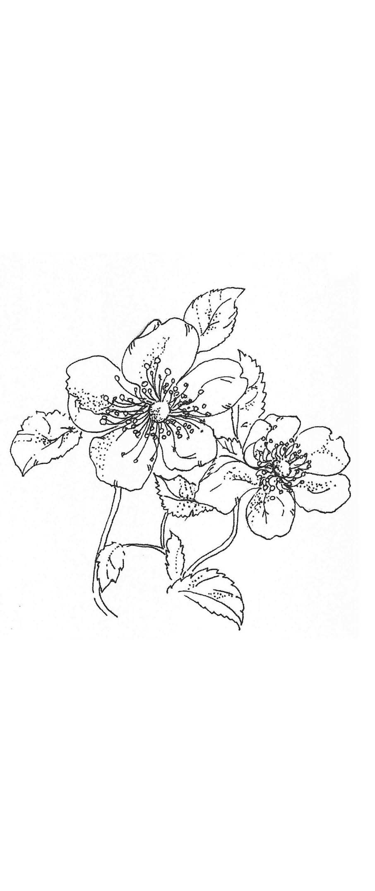

| 「古時計」によるキリスト教の授業 (22世紀アート) | |
| 岩井 清 | |
| 22nd CENTURY ART (2019) | |
二〇〇二年二月に、朝日新聞社から「梅原猛の授業 仏教」という本が出版されました。「これはいい。次はキリスト教かな」と期待していたのですが、いくら待っても、「〇〇〇（有名人）の授業 キリスト教」という本が同じ新聞社から出てきません。「自分で書くしかないかな。でも無名の著者では読んでもらえないかも」と思案した結果、当時七〇歳（古希）を迎えていた私は、「『古時計』の新しい授業 キリスト教」という本を、文芸社から出版することを決意しました。
この『古時計』は、あれから十五年たったのに、幾分調子は崩れていますが、まだ時を刻んでいます。出版後のことですが、一年間、長野県飯田で協力牧師として奉仕したり、パリのプロテスタント日本語キリスト教会で三か月間の短期牧会に招かれたり、バッハがオルガにストとして活躍したライプチッヒのトマス教会で、ヨーロッパキリスト者のつどいの皆さまとともに賛美礼拝に参加したりという、珍しい経験も与えられました。金婚までも連れ添うことの出來た半身の妻博子を六年半前に天に送るという悲しい体験もくぐりました。活水聖書学院の学院長職も、この春で辞任を決意しております。
この度、22 世紀アートの海野有見さんから、この本の電子書籍化を提案され、お引き受けしましたが、タイトルも「『古時計』が伝えたいキリスト教の精髄」に変わることもあり、少しは内容にも新鮮さがほしいと思い、二〇一八年に、第二の「ふるさと」と呼ぶことのできる徳島県の脇町キリスト教会でお伝えしたメッセージを第五章に加えさせていただくようお願いしました。
この本を読んで、イエス・キリストという香り高いたとえようもないお方に、巡り合える友がおられるならば、それにまさる喜びはほかにありません。
二〇一九年二月一日
岩井 清
この「古時計」は古希（七十歳）を迎えましたが、まだ動いています。古来はまれであったかもしれませんが、現今は普通であり、平凡です。日野原重明氏の提唱する「新老人の会」には、年齢不足で、入れてももらえません。
でも、やがては、「もう動かない」という時が来ます。すぐそこに迫っているかもしれません。今のうちにこの授業をすませておかなければと思って、筆を執りました。いえ、キーをたたきはじめたのです。
こんな話を聞きました。学校での話です。生徒が先生に、「人はどこから来て、どこへ行くのですか。人は何のために生きるのですか」と質問しました。それに対する先生の答えは、こうだったそうです。
「おまえは、そんなめんどくさいことを、いつも考えているから成績が悪いんだ。そんなひまがあるのなら、もっと勉強しろ」
この話を聞いたとき、義憤のようなものを感じました。こんなに大切な質問に、真正面から
青年時代から、聖書に親しんできた者として、今の中学生、高校生、若者に、いやすべての年齢層の読者に、そのような根本問題に対して、聖書はどう答えているかについて、少なくともご紹介ぐらいはできるかもしれないと思い、執筆を試みました。
最初に自伝的な話をしていますが、その中からも、その問題についての回答への示唆を汲み取っていただければという願いを持っております。
次には、もっと
この小さな本が、少しでも今の世代の同胞にお役に立つとしたら、それに勝る喜びはほかにありません。
主の年二〇〇四年秋
著者より
脇町は「うだつ」の町と言われています。四国三郎と呼ばれている吉野川のほとりにある古い町です。特に南町には、うだつのあがった古い家並みが軒を連ねています。その端に教会があったのですが、当然そこにはうだつはあがっていませんでした。
かつては養蚕室であったといわれる教会堂は天井が低く、中学生の私が逆立ちすると、容易に足がそこに届くほどでした。
千葉県から徳島県の鴨島に引っ越した私たち一家は、まず阿波弁に往生しました。その地の子どもたちが父を取り巻いて、
「これかー」
と言うと、父はにこにこと、
「うん。そうだよ」
などと答えてしまいます。すると彼らは不審そうなしかも不満そうな顔をして「これかー」を繰り返すのです。
あとでわかったのですが、「これかー」とは、正確に書けば「これ、かー」であり、もうすこし丁寧な阿波弁では「これ、くれへんで」となるのです。つまり「これ、ください」というわけです。
一事が万事、外国に行った思いで苦労しながら、私たちはだんだん徳島弁をマスターしていきましたが、ついにほんものにはなれませんでした。
鴨島の製糸工場に勤めながら、キリスト教会で伝道のお手伝いをしていた父は、問題があってほとんど信者がいなくなってしまった脇町の教会に移転し、やはりその地の製糸工場に籍をおきながら、新しい思いで伝道の任についたところでした。
両眼の視力をほとんど失っていた母が父の伝道を助け、信州にいた長兄を別にして、男四人女ひとりの兄弟姉妹がそれに参画していました。
私たちの家には、必ずと言っていいほど、肉親以外のだれかが同居しており、多い時には五人も加わっていたため、いつも大家族でした。今考えても部屋割りをどうしていたのかが思い浮かびません。
土曜日は家庭の日と称し、車座になって茶菓にありついたり、少し調子は外れていましたが讃美歌を四部合唱したりしました。狭いながらも楽しい我が家のはずでした。
弟の学校で、国語の先生が生徒に
「南町の教会に行って、格子窓からのぞいて見い。あれが団欒じゃ」
と言った由ですが、確かにそういう面もあったことは事実です。
でも、あの当時、この心には何者が住み着いていたのでしょうか。鴨島時代からのことですが、近所の評判とは裏腹に、私は妹を無性に憎らしく思ったり、弟と取っ組み合いのけんかをして泣かせたり、水汲み、まき割りを命ぜられると、ふくれっ面でしか行なわないという毎日を送っていたのです。
すぐ中耳炎を患う体質だったので、水泳を禁じられていましたが、年下のいとこに、
「言い付けたらこれだぞ」
と
「清ちゃんがね、言い付けたらこれだぞだって」
と告げ口され、悔しがったこともありました。
教会の隣にびわの木があり、塀ごしに枝を伸ばし、なんとこちらの窓に入り込んで実を結んでいたのです。
当時教会には兄弟五人を含めて合計九人の子どもたちがいましたが、だれもその実を盗もうとはしませんでした。父は喜んで、
「さすがはクリスチャン・ホームだ。どうぞ召し上がってくださいと言わんばかりの実をだれも盗ろうとしない」
と幾分自慢げに話していたのですが、実は裏切り者がひとりいたのです。
私はその実には手をつけませんでしたが、塀に飛び付くと、いくらでも元の木からびわを失敬できたのです。食べ終わると、皮と種は塀ごしに隣家にお返ししていました。
教会の子だから、集会に出なければならなかったのですが、それはむしろ苦痛でした。できれば外で遊んでいたかったのですが、毎回そういうわけにはいきません。信者さんが増えてきて、熱心に讃美し、祈っているのですが、こちらの心は冷えるばかりでした。
おしのびで映画館に通ったこともあります。エノケンの演技に思わずゲラゲラ笑ってしまったので、身元が割れて告げ口され、あとでひどく叱られました。これは、あとの話ですが、館内が暗いときには安心していても、中休みなどで電灯がつくと不安になることがありました。
（地震でもあって、あのシャンデリアが落ち、この映画館がつぶされたら、このおれはどこへ行くのかな）
などと
（滅びしかないよな）
とおののいたものです。
姫路から末永弘海という牧師が来て特別集会が開かれたことがあります。あまり大きな声でなく、とつとつと話されましたが、力で迫ってくるのです。
その「
聖書を読んでいてイエス・キリストの追い討ちを受けました。
「忌まわしいものだ。
心が槍で突き刺される思いでした。キリストに内面を言いあてられたと感じました。
（今までは外面ばかり飾ってきたが、これからは内面を清くしよう）
などと思ったのですが、うまく行くものでしょうか。
（びわのことも隣の小父さんにあやまらなくっちゃなあ）
（おやじにはどう言えばいいのだろう）
とにかくお詫びしようと決意はしたのですが、いざという段になって足がすくみました。
隣の小父さんは製糸会社の工場長であり、無口で威厳のある人でした。ひげも蓄えていたのです。
「信仰なんて弱い女子どもにはいいかもしれないが、大の男のものではない」
という信念をもっており、妻や子どもたちが教会に通うのは認めていましたが、自分は顔を見せようともしませんでした。
行きつ戻りつの
と簡単に赦してくれたのです。
このこととは無関係ですが、この小父さんは、のちに病を得た際、目覚めて信仰をもったばかりでなく、その長女博子を私に嫁がせてくれました。わたしの義父になったのです。
さて、私が裏切った実父のほうですが、さすがに今度は面とむかって告白する勇気が出ませんでした。父はもと軍人であり、いつもはユーモアたっぷりで人を笑わせてばかりいましたが、一旦叱るとなると私たちは震えあがったからなのです。
仕方がないので、毎日顔を合わせているにもかかわらず、手紙を書きました。一部始終を連ね、お詫びしたのです。どういうわけか、この手紙はなしのつぶてでした。父は何も答えてくれなかったのです。喜んではくれていたのだろうとかってに思っています。
一九五二年の春、ラグビーで有名な脇町高校を卒業し、大学受験に失敗したので、京都の予備校に入りました。やはり教会に下宿させてもらい、隣家の産院や「ちょっと・まって」という珍しい名前を持つ進駐軍家族向けの八百屋さんでアルバイトをしながら勉強し、やっと次の年にパスすることができました。
（外側を飾るのではなく、内側の心を清くしよう）という決心については、結果は惨めでした。清くなるどころか、罪も汚れも深まっていき、一つの悪習慣にも勝てぬ始末でした。ほとんど絶望しかかったとき、聖書から一条の光を見たのです。
「私たちが神を愛したのではなく、神が私たちを愛し、私たちの罪のために、なだめの供え物としての
小さいときから、「イエスさまは私たちの罪の身代わりとして十字架にかかって死んでくださった」と何度も言い聞かされてきたのですが、溺れる者がわらにもすがる思いで、新たにキリストの十字架にすがり、ようやく平安を得ることができました。
英国の作家ジョン・バニヤンは『天路歴程』の中でこう書いています。
「クリスチャンが十字架の前までのぼってきたその瞬間、いままでしょってきた重荷が肩からすべり落ち、ころころころがって、墓穴に落ちこみ、まったく見えなくなってしまった。......それから、しばらくのあいだ、彼はじっと立っていた。十字架を見上げただけで、背中の重荷がとれてしまうとは......そう思うと、
このくだりを読むといつも感動するのは、自分の経験と呼応するところがあるからであろうと思っています。
学生時代、同じ大学に入ったすぐ下の弟とともに、三重県に住むフローレンス・ミラーという宣教師のお手伝いに行ったことがあります。控えめでありながら伝道に熱心なその生活に感銘を受けて帰ってきました。彼女は私たちにキリスト者学生会を紹介し、日光で行なわれたその夏期キャンプに招待してくれたのです。そこに行ってみて驚きました。
学生と言えば左翼、
四回生となったので、卒業後の進路を決めなければなりません。以前から、大学に残って勉強を続けたい思いと、高校の英語教師になりたい思いとの間で揺れていたのですが、そこに伝道師、牧師になりたい思いがもう一枚加わってしまいました。宣教師の
悩んだ末、思わずため息が出ました。そばにいた父が、
「ほう。清がため息をついている」
と言いました。その言葉で目が覚めたのです。
（そうだ。悩んでばかりいないで、祈ってみよう）
祈ろうとして、机の前に座ったときには、もう答えが与えられました。聖書の言葉がはっきりと心に浮かんできたのです。
「そういうわけですから、兄弟たち。私は、神のあわれみのゆえに、あなたがたにお願いします。あなたがたのからだを、神に受け入れられる、聖い、生きた供え物としてささげなさい」＊ ５
（これが神の答えだ。もう献身の道、伝道師、牧師の道しかない。これで決まりだ）
こうして大学卒業後、ただちに神学校に入ろうと決心しました。
自分で決めたつもりでしたが、じつは背後の祈りに押し出されたに過ぎなかったことがあとでわかりました。
もともと父恭三は、小さい時から「理屈の恭ちゃん」と呼ばれるほど、物事を突き詰めて考えなければ気が済まないたちでした。陸軍の幼年学校、士官学校と進み、将校になった後でさえ、不当と思われる上官に「絶対不服従」を誓ったという一徹さも合わせもっていたのです。その一方で、恋愛至上主義を唱え、宝塚などに入り浸っていたというから、相当混乱していたのではないでしょうか。両親の感化もあって、教会には通いながらも、人生そのものは投げてしまっていたようです。
（こんなつまらない人生を子どもも味わうのか。だったら、子どもは作らない）
と心に決めていたようでした。
その父が、ふとしたことから東京の落合にあった
「信仰生涯を航海にたとえば、片帆を上げて自ら思った所に行くにあらずして、真帆を上げて恵みの風のままに前進すること、この真理を教えられ、一切を船長なる主に委ねて出帆す」
（この愛を伝えるには、自分だけでは足りない。子どもが六人ほしい）
と思うように変えられてしまいました。
「そんな。六人なんてよう生みません。奥さんを取り替えてください」
病身の母はクレームをつけました。
「おまえに頼んでおりゃせん。神さまにお頼みしているんだ」
と父は答え、なんと本当に子どもが六人与えられたのです。それで、いちばん下の弟には、満という名前がつけられました。今、四人が牧師となり、一人は牧師夫人です。唯一社会人となった弟も牧師に勝るとも劣らないユニークな方法で伝道に励んでいます。
さて、婚約者を失うのでないかという思い
神学校は塾形式の小規模な学び舎でしたが、ここにきて初めて勉強の楽しさを知ったように思います。良い友にも恵まれました。三年生のとき、八ヵ月ほどオーストラリアに視察兼留学に行くというチャンスに恵まれたので、結局四年かかって卒業しました。
その後、最初は聖書を毎日読む運動を推進する「聖書同盟」の主事に就任しましたが、父が脇町と神奈川県の平塚の教会を兼務するようになったことから、父の手伝いが必要となり、夫婦で三鷹から平塚に転居してきました。こうして平塚での生活が始まったのです。
弟の満はイギリスの神学校を卒業してから、宣教師としてインドネシアで働いていたのですが、かねてからの婚約者と現地で結婚式を挙げることになりました。本来ならば、父が家族の代表として出席しなければならぬはずでしたが、そのころは病床に伏す身となっていました。
牧師が二つの教会の責任を同時に担うことを兼牧と言うのですが、父は七年にも及ぶ四国と神奈川の兼牧の結果、疲労が重なり、糖尿病からはじまって、ついに胃がんを患うまでに至ってしまったのです。
「先生の休み場所は列車の中だけだもんなあ」
教会の長老さんが述懐していました。
新幹線もまだ開通しておらず、飛行機などは特権階級の乗り物でした。父と母はほとんどまる一日かけて、鈍行か急行の列車と連絡船とを乗り継ぎ、毎月遠路を往復していたわけなのです。
脇町の父を見舞いに訪れたときのことでした。
「清。郵便局に行って、これを全部下ろしてきてくれ」
と言われました。
見ると、その通帳は、父が聖地（イスラエル）旅行にと貯めておいた、なけなしの貯金ではありませんか。
「この金で、家族代表としてインドネシアに行ってきてくれ」
いいのかなあと思いつつも、言われたとおりにしました。
あとは平塚に帰り、早速パスポートとビザの準備をしなければなりません。
旅券がもらえたので、インドネシア大使館に行き、ビザの申請書を提出しました。
職業欄には牧師と書きました。
「牧師はだめなんですよ」
受け付けの女性が気の毒そうに言うのです。
「弟の結婚式なんです。お願いします」
気の良さそうなそのインドネシア人は、上司に掛け合うためか、しばらく奥に消えました。そして戻ってくると、
「やはり、だめでした」
一九七〇年代のインドネシア（イスラム政権で政情不安定）のことであり、キリスト教の牧師の入国は不可能に近かったのです。
（どうしたらいいのだろう）
多くの人から、お祝いの金品を預かり、お土産も買い込んでいたのです。しばらくは途方に暮れて身動きができませんでした。
いつまでもここにいるわけにいかないしと思い直して出て行きかけたとき、気の毒そうに見守っていたその女性が、
「香港に行って申請してごらんなさい」
と言ってくれたではありませんか。
帰途についたのですが、頭の中には、いろいろな思いが駆けめぐっていました。
（香港でビザをもらって、すぐジャカルタに飛んでも、結婚式には間に合わない）
（シンガポールからならぎりぎり間に合うかもしれない）
（香港でもらえる可能性があるとすれば、シンガポールでももらえるのではないか）
胸は早鐘のように高鳴っていました。
（父の代理なんだから、とにかく相談してみよう）
四国に電話をかけました。テレフォンカードもない時代です。百円玉もいれられません。十円銅貨をたくさん用意して父と話しました。矢継ぎ早に、十円玉が穴の中に落ちていきます。
父は事情を聞いてしばらく沈黙していましたが、
「祈りつつシンガポールにいきなさい」
と助言してくれました。
シンガポール行きの飛行機を予約して、空港に急ぎました。式の前日のことです。
機内では気もそぞろで、どうしても落ち着きません。
（シンガポールでもビザをもらえなかったらどうしよう）
（行ってからだれに声をかけて頼もうか）
機内食を楽しむこともできませんでした。ふと療養中の父を思い起こしました。
（そうだ。思い煩いつつでなく、祈りつつシンガポールに行けと言われたんじゃないか）
坐り直して祈りました。ようやく気持ちも落ち着き、到着を待つことができました。
その夜はホテルから現地の知人に連絡を入れ、協力を依頼しました。みな快く聞き入れ、親身になっていろいろ手を回してくれたのです。
いよいよ当日です。なるべく早い時間にと思って大使館に急ぎました。しかし、すでに先客というか、先に申請を済ませた人々が何人も待っているではありませんか。そればかりか、係官の動作がすこぶる緩慢なのです。まるで静かな踊りででもあるかのように、こちらの机からあちらの机へと行き来するのです。
（日本ならもっとてきぱきやるのになあ）
やきもきしながら順番を待ちました。まだ、自分のパスポートは積み重ねられた山のふもとのほうでうめいています。
やっと自分の番がきました。緊張して、結果やいかにと
パスポートをひったくるように受け取り、タクシーで空港に直行しました。都合よくジャカルタ行きの便に間に合うことができ、息をついたのです。
ジャカルタにはすぐ到着しました。当時はお世辞にもきれいとは言えない空港でした。ポーターに荷物を運んでくれと頼むと、彼はためらいも見せないで、待機していたタクシーの所に行き、トランクを開けて荷物を全部積み込んでくれました。
式場の住所をメモしておいたので、それを運転手に見せ、車は発進しました。初めての土地なので、そこまでどの位の時間で着くのかさえ分かりません。タイム・リミットは迫っています。気がせいていたのに、なんと車は途中でストップしてしまい、あまり人相の良くない男と子どもが乗り込んできて、私を取り囲む形になりました。悪い予感は当たりました。
「これから行くところは遠距離なので、これだけは払ってほしい」
隣に坐った男が英語で切り出したのです。正確な金額は忘れてしまいましたが、不当な値段であることだけはすぐに分かりました。
（やられた。ポーターとぐるだった）
みごと鴨にされてしまったのです。心臓はもう一度早鐘のように動悸しています。そのとき、とっさに二つのことが心に浮かびました。一つは大戦中に日本軍がこの国に行なった残虐、蛮行の数々、もう一つは聖書の言葉でした。
「すべて求める者には与えなさい。奪い取る者からは取り戻してはいけません」＊ ６
（なんかくやしいけど払ってやろう）
と心を決め、
「私はクリスチャンで牧師だ。今後こんなことはやめなさい」
と言いながら、その金額を支払ってやりました。すると、
「おれはムスリムだ」
男は言い返し、紙幣を握って子どもと一緒に降りていったのです。
やっと弟の待つ家に到着しました。式場に向かう三十分前のことです。
聞いてみると払ったタクシー代は通常の約十倍でした。
「でも払って良かったよ。この間も抵抗した日本人が刺されたもの」
これが弟のコメントでした。ぎりぎりでしたが、彼は私の安着を喜んでくれたのです。
結婚式も無事にすんで数日たってから、私たちは弟の車でジャカルタ市内をドライブしていました。
「あっ、あいつだ」
なんと目の前を、あの運転手のタクシーが走っているではありませんか。人口何百万かのジャカルタで、彼を見つけてしまったのです。
追跡してそのタクシーを止め、弟はインドネシア語で何か抗議していました。その内容は何も分かりませんでしたが、神は生きておられるという厳かな思いに打たれました。
途中、タイで働いている日本人宣教師を訪問し、羽田ではなく大阪空港に帰り着きました。父が近江サナトリアムに入院すると聞いていたので、見舞いがてら報告に行こうと思ったからです。空港から家に電話を入れました。妻の博子が出たので、
「今大阪に着いた。お父さん、予定どおり入院したの」
と聞くと、泣いているような叱っているような答えが返ってきました。
「何言ってんの。お父さんはもう天国よ」
絶句してしまいました。落ち着いて聞いてみると、父は吐血が収まらず、弟の結婚式の翌日近江サナトリアムに入院し、まもなく手術を受けたのですが、もう手の施しようがなく、そのまま天に召され（一九七〇年二月十日午前九時）、十一日の今夜、脇町で前夜式が行なわれるとのことでした。放心して空港ロビーの片隅に行き、新聞で顔を隠して
すぐ四国に飛ばなければなりません。インドネシアから帰ったばかりで、真冬に夏服というみじめな姿でしたが、そのまま徳島空港に直行しました。
入院のため脇町を出発する前に、父がこう祈っていたことを後で知らされたのです。
「清はシンガポールまでのビザで出ましたが、紅海の水を
この祈りは応えられて、道は開けたのです。
初めて遺族の立場で葬儀に出席しました。父を愛し、最後まで祈りつづけられた方々が遠くから、また近くから大勢かけつけてくださったのを見て、どんなに慰められ励まされたかわかりませんでした。
この時の葬儀も厳かな中に執り行われ、天の祝福を受けたのですが、実は、生前父は「岩井恭三
凱旋式とは天国への凱旋を意味していました。そこには「弔辞・弔電または祝辞・祝電」という項目までが含まれていたのです。
普通、キリスト教の葬儀では三つか四つの讃美歌が歌われ、その中に故人の愛唱歌を入れるしきたりがあるのですが、父はその愛歌を六つも七つも選び、それを略歴の合間に
一年後および三十四年後の記念会では、この順序にのっとって会を進め、一同感銘を新たにしたことです。死を覚悟して後、父はなお二十四年間生き長らえ、伝道に励むことができたことになります。
「凱旋式」とか「祝辞・祝電」という言葉から推し量られるように、父はすでにこの式次第の作成時、天国行きのビザを取得していたようです。そこへの入国は保証されていました。
「信仰略歴及び賛美」という項目の中に、次のような一句が記されています。中国の衝陽という所で、
つたえばや あめつちくづるる爆音に
しずかに祈る 我がこの
内村鑑三の娘ルツ子の葬儀に列席した若き日の矢内原忠雄（後の東京大学総長）は、その時の感慨を次のような文章にまとめています。
私が入門して間もなく、翌年一月のことでありますが、先生の愛嬢ルツ子さんが永眠しました。私と同年の十九歳でした。その葬儀で先生が感想を述べて、「これはルツ子の葬式ではない、結婚式である。彼女は天国へ嫁入ったのである」と言はれましたが、
内村鑑三・ルツ子にせよ、父にせよ、死は天国への嫁入りであり、凱旋であるという確信が生前に与えられていました。ビザは取得済みだったのです。
作家の三浦綾子は、生涯「病気の問屋」と言われるほど、青春時代には、結核、カリエス、後にはパーキンソン病をはじめさまざまな病苦に痛めつけられながら、『氷点』、『道ありき』など多数の名著を世に残したのですが、晩年このように述懐した由です。
「私には死ぬという大事業がまだ残されている」
私がインドネシアにやっとたどりついて、家族の代表として、弟の結婚式に出席するという小さな役割を果たそうとしていたそのときに、父は死ぬという大事業を見事に果たしていたのでした。
一九六一年に聖書同盟の主事に就任したことは前に述べました。一年後平塚に来て副牧師となってからも、「聖書を毎日読みましょう」というこの運動にはずっと関わりを保ち続けてきたのです。理事会のメンバーとしても三十年以上勤めたと思います。
この運動は世界的な組織を持ち、日本としては特に東南アジア、オーストラリア、ニュージーランドの諸国のスクリプチュア・ユニオン（聖書同盟）と密接な交わりを保っています。神学生時代に八ヵ月間オーストラリアに行ったのも、主として現地のこの運動を視察するためでした。
国際会議参加の経験もあります。韓国、香港、マレーシア、シンガポール、タイ、オランダなどに行く機会に恵まれました。
何よりも良かったのは、多くのすばらしい人物に会えたことです。
まだ主事であった時代に、シンガポールのＣさんが、同じスタッフ仲間として日本から訪れた私を実に親切にもてなしてくれました。えこひいきされているのではないかとさえ思ったほどでした。
「あの人のお父さんは、日本軍に殺されたんだよ」
別の人から事実を聞かされ、表現できないほどのショックを受けた記憶があります。彼との交際は四十年にも及びましたが、数年前彼は天に召されました。彼の義妹は、日本に留学したのですが、私たちの教会に一時期
私たちは当時ジャムがわりに、黒砂糖か煮豆（
「ミスター・イワイ。あのパンおいしかったよ」
と、何年も後になってから、牧師館での生活を懐かしんで言ってくれました。
彼女は日本で、東洋大学を卒業して帰国し、よい結婚に恵まれ、今二人の子どもの母親になっています。
その弟Ｔも早稲田大学を卒業してシンガポールに帰り、日系の有名な会社に勤め、やはり幸福な家庭を営んでいたのですが、その彼に転機が訪れました。
現地のケーブルカーにこれから乗り込もうとしていたとき、
（そうだ、ここで一枚写真をとっておこう）
と思い直し、仲間の一行をカメラに収めてから、一、二台あとの車両を利用しました。
ところが、自分の目の前で、先に乗り込もうとしていたケーブルカーが、真っ逆さまに海をめがけて落下していく様子を目撃したのです。
シンガポール史上でもまれな事故、つまり大船舶のマストがケーブルにひっかかって、それを切断してしまうという事故に遭遇したわけなのです。
この経験がきっかけとなり、彼は会社を辞して神学校に入学し、牧師となりました。
「なくなる食物のためではなく、いつまでも保ち、永遠のいのちに至る食物のために働きなさい」というキリストのことばに触発されたのではないでしょうか。＊ ８
彼は今アメリカに移住し、そこで牧師の務めを果たしています。
韓国でもここに述べつくせないほどの多くの人々に出会いました。この国で祈ると、ふだんはあまり泣かない私なのに、なぜあんなに涙が流れるのでしょうか。人口の三分の一か四分の一はクリスチャンというこの国では、熱心な祈りの雰囲気がすでに出来上がっているからなのでしょうか。無情にも北と南とに家族までが生き別れになっている実情が、涙の祈りを誘うのでしょうか。
それとも日本人の一クリスチャンとして、この国に対して持つ罪責感がその原因となっているのでしょうか。一九一〇年（明治四十三年）から一九四五年（昭和二十年）の三十六年間にわたって、日本の対外政策により、この国は国王も国土も国語も奪われ、徴兵、強制労働、従軍慰安婦などに駆り立てられるなど、
シンガポールの場合と同じように、ここでも私自身は温かな歓迎を受け、心からのもてなしを受けたのです。
マレーシアの密林のキャンプ場で行なわれたコンファレンスのことも忘れることができません。夜もふけ始めた頃、私はある用事を思い出し、ひとりで宿舎に帰ろうとしました。街灯がついているわけではなかったので、あたりは
「あそこはときどき虎が出るんですよ」
と聞かされ、身の毛がよだつ経験をしました。
フィリピンに行ったときには、できるならばひとりの老人に会いたいと思っていました。バーニア牧師です。父からその名前を聞いていました。
前にも述べたように父は型破りの軍人でした。最終的には陸軍鉄道連隊長として中国大陸の各地を巡ったのですが、できるかぎり現地の教会を訪ねて戦時中でも礼拝を守ろうと試みました。つぎのような手記が残っています。
「その教会堂の入口の扉には日本軍の出入を禁止する旨の告示が日本憲兵隊の名で大きく張出され、扉は厳重に閉まっていました。けれども私が扉をたたくと扉についている小窓が開き、中から人の目だけがのぞき、私が無言で聖書を見せるとすぐにその扉は開かれました。聖書こそは万国共通の心の扉を開くパスポートであります」＊ ９
礼拝に出席するだけではなく、軍服のままで伝道し、説教までしていました。
「神を証しすることが私の本業で、軍務は副業です」
という言葉が、憲兵隊長の耳に入り、取り調べを受けたようです。
「岩井さん。これを見なさい」
見ると、
「岩井の奴けしからん。将校のくせに、軍人は副業だとぬかした。即刻クビにすべきである」
問答が始まりました。
「ああ、たしかに私が言うた通りです」
「とにかく伝道は困る。伝道はやめてくれ」
「本業をやめるわけにはいかん」
「それなら私のほうでも信ずるところをおこなわねばなりませんが、それでもよろしいか」
「どうぞどうぞ」
父としては、これでクビになれると、むしろ喜んでいたらしいのです。でも結果は免職でなく、昇進でした。
悪名高い中国における「三光作戦」（殺し尽くし、奪い尽くし、焼き尽くす作戦）については、中国人側はもちろん日本人側にも多くの目撃証人を持っているのですが、父が指揮した連隊については、大阪在住の元部下であった方の次のような証言が残されています。
こうした耐乏生活にあって、部隊長岩井恭三大佐は全員に、「焼くな、
終戦後にあっても、隊長以下一糸乱れず、隊内の争いもなく、全員円満に復員いたしました。
これはわれわれが戦闘部隊でなく建設部隊であったせいだとばかり自負して今日まで過してまいりましたが、部隊長殿の証詞を拝見して、これはひとりよがりの考えだったことを知りました。
部隊長殿が御着任以来、中国民衆を神の子として広く愛されました。そして部下にも人の道を誤らないように導かれました。その神のような心の証しが敗戦後に表われて、部隊全員に災いが及ばなかったことをしみじみと知り、ただただ感謝している次第です。＊ 10
さて、この父が一九三九年（昭和十四年）にフィリピンに派遣されたときにも、彼は現地の教会で礼拝を守りました。そのときにバーニア牧師に出会ったのです。
この牧師も父に説教を頼んだようです。父は現地の信者が聖書を持たずに教会に通っている様子を見て、これでいいのだろうかと疑念を抱いていたところだったので、この機会に、そのことについて語ろうと決意し、喜んでその申し出に応じました。
しかし、ひとつの難関がありました。通訳の問題です。普通なら、父は日本語で説教し、それを英語に、そしてさらに（フィリピンの主要言語である）タガログ語にと、いわば三段通訳をしてもらわなければなりませんでした。けれども、それがどんなに間の抜けた結果になってしまうか、かつて挨拶をしてみた経験から、身にしみて知らされていたのです。
「では、タガログ語で説教します」
驚いたのはバーニア牧師です。
父は彼から、タガログ語を習い始めたばかりだったからです。
（大丈夫かなあ）
不安な思いにかられましたが、結局は同意しました。
説教といっても牧師でもない父の話はむしろ体験談でした。その要旨を述べてみましょう。
私はかつて聖書は神話のようなものだと思っていた。でも、信仰を持ってからは、これを神の誤りなき約束の言葉として愛読するようになったのです。ある時、公務で、船橋の無線電信所に行かなければならなかったのですが、そこに行く旅費（一円）を持ち合わせませんでした。未信者時代なら、解決は簡単です。借りにいけばいい。貸してやらんなどというケチな友達はひとりもいない。
でも、幸か不幸か信仰を持ってしまった。聖書には、「神の国とその義とをまず第一に求めなさい。そうすれば、それに加えて、これらの（必要な）ものはすべて与えられます」と約束されている。だから借金しに行こうとすると、神さまがちょいと私の
出張の前日、礼拝に出席した。神さまが、私の問題をご存じであることが分かった。その日開かれた聖書のテキストがピリピ人への手紙四章六、七節だったからである。
「何事も思い煩ってはならない。ただ、事ごとに、感謝をもって祈りと願いとをささげ、あなたがたの求めるところを神に申し上げるがよい。そうすれば、人知ではとうてい計り知ることのできない神の平安が、あなたがたの心と思いとを、キリスト・イエスにあって守るであろう」
感謝に溢れて礼拝から帰り、早速壁に向かって「一円与えてください」と神に祈ろうとしたが、ちょっと困った。「感謝をもって」という言葉がひっかかった。お金が与えられたら感謝しようと思っていたが、「感謝して求めよ」と勧められている。
苦しまぎれに、こう祈った。「神さま。あなたが感謝して求めよとおっしゃるので、感謝して求めます。一円与え給え」
少しも感謝になっていなかったが、不思議に片道分五十銭与えられた。「今度は本当に感謝して求めます。もう五十銭お与えください」
神さまは一円十六銭下さった。
その日は、特別にタガログ語の聖書が用意されていたので、会衆は聖書をたどりながら、父の話に耳を傾けていました。吸い取るように理解されていることが感じられたようです。説教が終わりました。
「フィリピン語は九十五点、説教は百点」
バーニア牧師は喜んでくれました。
このエピソードを父から聞いていたので、（その時からほぼ四十年も経ってはいたのですが）、フィリピン訪問の際、バーニア牧師に会えるものならぜひ会いたいと願ったのでした。現地の宣教師が親切にいろいろ調べてくれた結果、バーニア牧師がまだ健在であることが分かりました。
この宣教師の車に乗せてもらい、マニラの郊外にドライブしました。尋ね尋ねて何度も道を迷いながらも、ついに行き着くことができました。
不審そうに私たちを出迎えた老牧師は、私が岩井恭三の三男であると知ると、喜びに溢れ、いろいろ話し始めたのですが、私には何を言っているのかさっぱり分かりませんでした。
部屋に通されて息を呑みました。軍服姿の父の大きな写真が壁にかかっているではありませんか。
クリスチャンの中には、投獄されても戦争に参加せず、平和主義を貫く人物もいます。そういう生き方も尊いと思います。
しかし、ローマ帝国の軍務に服しながら、信仰生涯を全うしたクリスチャンも少なくありません。ある百人隊長などはキリストご自身から、そのあつい信仰を称賛されているのです。
ともすれば
これらアジアの友人たちの中には、すでにこの世を去って安息に入った人もありますが、今もなお健在でそれぞれの奉仕をつづけている人たちもあります。時折、突然のように手紙や電話をもらい、驚いて喜ぶことがあるのです。西欧の友人たちをも含め、グローバルな交わりを持つ幸いは、昔も今も変わりません。
平塚の一角に私たちの教会が創立してほぼ四十年を経た一九六八年（昭和四十三年）に、新会堂建設の議が起こりました。建築委員長に選ばれた長老さんが予算を立てたのですが、それが一千万円でした。
当時としては、そして私たちの教会としては途方もない金額でした。
「この予算を提出したら、皆さんもびっくりしたけど、自分もびっくりしたよ」
長老さんはこう言って笑っていました。
一応十年計画で始めたのですが、最初の一年に集まった献金はほぼ三十万円にしか過ぎません。
「これではなかなかだなあ」
みんなそう思いました。
長老さんとその奥さんは事務所の一室で話し合ったということです。
「だれか五百万円ぐらいささげないかしら。私が持ってたら、パッと出しちゃうんだけどなあ」
「持ってたら、そうはいかないよ。ないから言えるんだよ」
この長老さんは、その後腎臓を悪くし病床に伏す身となってしまいましたが、夫婦二人で忠実に祈り、
ある祈祷会の夜、聖書の言葉が私の心に迫ってきたのです。
「信仰がなくては、神に喜ばれることはできません。神に近づく者は、神がおられることと、神を求める者には報いてくださる方であることとを、信じなければならないのです」＊ 12
この言葉に励まされて、祈祷会に集っていた一同で新たに神を求めました。この議が起こってから四年目のことです。
それから何日か目にひと組の夫婦が私を訪れてきました。
「天に宝を
ふたりは切り出しました。聞いてみると、五百万円の建築献金をささげたいと言うのです。
「自分の宝を地上にたくわえるのはやめなさい。そこでは虫とさびで、きず物になり、また盗人が穴をあけて盗みます。自分の宝は、天にたくわえなさい。そこでは、虫もさびもつかず、盗人が穴をあけて盗むこともありません。あなたの宝のあるところに、あなたの心もあるからです」というイエス・キリストの説教に促されたのでしょう。＊ 13
早速長老さんに電話して報告し、共に喜びました。
思い切ったこの献金が契機となり、教会の中に、ささげようという気運がもりあがってきたのです。こうして発議後十年どころか五年目の一九七三年（昭和四十八年）の教会総会までに合計一千二百万円の資金が集まりました。
「秋にはいよいよ着工だね」
一同、心から感謝したことです。
ただ、物価上昇のため、建築見積り額は最低でも一千五百万円に跳ね上がっていました。
「全額与えられてから取り掛かったほうがいいんじゃない」
「銀行に一時用立ててもらえば」
「教会債を組み、債券を買ってもらえば」
議論が百出しましたが、
「
と最後には衆議一決しました。
こうしてその年の八月に、旧会堂が解体され、九月九日に定礎式が行なわれたのです。その時までの献金総額は一千四百七十二万円になっていました。
工事は順調に進み、建前も終わりました。正面の講壇の後ろには、洗礼用の水槽をしつらえる予定でした。その直前になって、頼んでおいた業者の方から失敗の連絡が入りました。
「大変申し訳ありません。実は、設計より横幅が三センチ短くなってしまいました」了承し、いざ搬入となって、驚いたことに、洗礼槽は入口と階段とをかろうじてくぐり抜けたのです。もう一センチでも横幅が長かったら、せっかく仕上げたどこかを壊さなければ、運び入れることはできませんでした。ミスのおかげで助かったのです。
終盤にも不思議なことが起こりました。迅速で、誠実な工事で鳴らしていた工務店の親方が、珍しく「すみません。竣工が一週間遅れそうです」
と、連絡してきたのです。そこで、
献堂式当日、今度は私自身のミスがありました。
ひとりの女性がみごとなカットを描き、式次第の用紙を飾ってくれたのに、私が、そこに会計報告を書き込んだため、せっかくのデザインが、映えなくなってしまったのです。
（これじゃあ申し訳ないよな）
（でもここまで書き込んだものを、やり直しはめんどうだ）
（なんとかこのままでやれないかな）
いろいろ迷ったあげく、
（このデザインが生きるようやり直そう）
と意を決しました。
大急ぎで会計報告を別紙に移して書き直したのです。すでに式に参列する来賓は受付に並んでいます。その時一つのことに気が付きました。時間の経過とともにわずかずつですが、収入の額がふえているのです。それは来賓の方々が、
もともと私は支出の総費用一千六百十二万円に対し、建築献金の総収入は一千五百九十七万円であるという十五万円の赤字報告を印刷しようとしていたのです。
（待てよ。これは神さまやってくださるかも）
私は収入総額の欄を未記入にしたまま、牧師室に閉じこもって祈ることにしました。
「献堂式開始二分前になったら、締め切って収入の総額を教えてくださいますか」
会計担当の役員にお願いして祈っていたのです。
「一千六百三十万円になりました」
時間が来ると、期待を上回るメモが届けられました。
こうして式次第の会計報告欄には一九七三年十一月十六日午後一時五十八分現在の収支が載せられ、黒字報告ができたのです。全会衆が喜び、神の御名がほめたたえられました。
「教会堂が建つと牧師が倒れる」ということを聞いたことがありますが、ご多分にもれず、私も献堂式後まもなくダウンして、入院の身となってしまいました。
献金の
点滴を受け、静養をつづけていたとき、建築委員長の長老さんから懇切な手紙とともに、讃美歌の一節が送られてきました。ご自分が重病の身でありながらしたためた
主にまかせよ
しのびて 春を待て 雪はとけて 花は咲かん
あらしにも やみにも ただまかせよ
主にまかせよ
なやみは つよくとも みめぐみには 勝つを得じ
まことなる 主の手に ただまかせよ
気が弱くなっていたので、涙を流しながら何度も口ずさみました。もうひとりの役員さんが送ってくれた上原令子さんのさんびテープも繰り返し繰り返し聞き、日毎に癒されていきました。
南アフリカのオランダ改革派教会牧師アンドリュー・マーレーの著わした『謙遜』という書物も、もうひとつの秘薬でした。この本を読んで、自分の傲慢を思い知らされました。なぜ事毎に人とぶつかり、その都度不快な気持ちになったり、怒りを蓄えてきたのかが、手に取るように分かってきました。
「異邦人の王たちは人々を支配し、また人々の上に権威を持つ者は守護者と呼ばれています。だが、あなたがたは、それではいけません。あなたがたの間で一番偉い人は一番年の若い者のようになりなさい。また、治める人は仕える人のようでありなさい。食卓に着く人と給仕する者と、どちらが偉いでしょう。むろん、食卓に着く人でしょう。しかしわたしは、あなたがたのうちにあって給仕する者のようにしています」＊ 15
このイエス・キリストの言葉が身に沁みたのです。
旧会堂を惜し気もなく打ち壊し、取り片付けたうえで、新会堂の建設が始まったように、今、古い自分は打ち砕かれ、取り除けられている最中なのではないか、これが終わって初めて新しい自分の建設が始まるのではないか、と思わせられました。
今考えても、あの挫折のとき、落ち込んで病んだひとときは貴重な転機でした。慰めと回復、反省と門出、悔い改めと再生の機会だったのです。
一九八二年のある日、ふたりの信徒が私を訪ねてきました。応接間に招じ入れて、用件が切り出されるのを待ちました。しばらくして、彼らはこう言ったのです。
「先生、これで聖地旅行に行ってきてください」
見ると、分厚い何かが入っている封筒を手にしています。どうも札束のようです。
「スペインにも寄られたらどうですか」
そこには、彼らの親戚に当たる家族が、日本人学校の校長一家として赴任し、はや一年になろうとしていたのです。もと私たちの教会の役員を務めた教師の家族でした。
あまりにも思いがけない申し出に、しばらく声が出ませんでした。そのうちに、じわっと喜びが湧いてきて、感謝の思いに溢れました。
彼らは、私の牧師生活が二十年になるのを記念して、この旅行の費用をプレゼントしてくれたのです。
教会の了承も得たので、さっそく旅行の準備に取り掛かりました。やはり牧師一家としてカナダで生活している兄のところにも寄ろう、米国に留学中のふたりの教会員も訪問しよう、と旅程の規模がふくらんで、とうとう世界一周旅行の計画になってしまいました。でも、その中で私は主としてふたつの聖地を目指そうと思いました。ひとつは文字どおりの聖地イスラエルであり、もうひとつは老聖徒とも言うべき方々との交わりといういわば霊的精神的聖地でした。ひとりはドイツに、ひとりはイギリスに住んでいたのです。
こうして、四月十三日（火）に出発し、五月二十二日（土）に帰国するほぼ四十日にも及ぶ世界旅行の旅路に
再会の喜びは、それが外国での場合はひとしお加わるものでしょうか。スペインでは校長先生の家族に、カナダでは兄の一家に、アメリカでは昔なつかしい宣教師たちやふたりの留学生に会うことができたのですが、どの出会いにも喜びが溢れました。ほおにキスなんかされてしまって戸惑ったこともありました。
次の三つの国では、それぞれ分野はちがいますが、その規模の雄大さに圧倒されました。スペインではプラドの美術館に連れていってもらったのですが、日本で言えば百回分を一度に見せられた思いでした。ルーベンスをはじめ数えきれないほどの巨匠の大作が、所狭しと掲げられている部屋のひとつひとつを、いくら巡っても、巡り尽くせません。
カナダでは言うまでもなくナイアガラの滝でした。
日本のある伝道者がこの滝に案内されて、
「どうだ。こんなにすごい滝は日本にはないだろう」
と言われました。彼は答えたということです。
「この滝は私の父のものです」
もちろん彼は天地の造り主にいます父なる神のことを言ったのです。
彼が次の巡回伝道地に行ったとき、次のようなポスターが貼られていたそうです。
「ナイアガラの滝のオーナーの息子来たる」
多くの会衆が集まったということです。
アメリカは鉄道と飛行機とバスを用いて一周しました。アリゾナの砂漠をバスで越えたときには、潤いのある日本の風土がどんなに恵まれているかを、今更のように感じました。テキサスを朝発つと夕刻カリフォルニアに着く、とバスの時刻表に載っていたので、そのつもりで乗り込んだが、実は翌日の夕刻であったことに気が付いて驚きました。アメリカの規模は自分の想像をはるかに越えていたのです。
さて、聖地イスラエルについての一番の思い出は、飛行機がテルアビブ空港に到着したとき、乗客が一斉に拍手し始めたことです。歓声まで上げた者もいました。こんな現象は他の空港では見られなかったので、鮮明に記憶しています。捕囚、迫害、虐殺など数え上げればきりがないほどの苦難を経てきたユダヤ人にとって、どれほどその祖国愛が深いかを垣間見る思いでした。
現時点では、パレスチナ紛争のため、ベツレヘムの聖誕教会を訪れることは不可能ですが、当時はアラブのバスに乗って自由に行き来することができました。「富んでおられたのに、私たちのために貧しくなられた」イエス・キリストは、よく知られているように、馬小屋か家畜用の洞窟で生まれたのですが、その誕生のスポットがきんきらきんに飾られていたのにはがっかりしました。記念の場所はそのままの形に残してくれたほうが、どんなに良かったことでしょうか。＊ 16
それに比べると、ガリラヤ湖とその周辺の丘や野原は、千古変わらずという印象で、往時のキリストや弟子たちを偲び、感慨豊かなひとときを過ごすことができました。
「空の鳥を見なさい。種蒔きもせず、刈り入れもせず、倉に納めることもしません。けれども、あなたがたの天の父がこれを養っていてくださるのです。あなたがたは鳥よりも、もっとすぐれたものではありませんか。あなたがたのうちだれが、心配したからといって、自分のいのちを少しでも延ばすことができますか」という有名な説教の語られた記念の丘には、その時も小鳥がそこかしこに戯れていたし、「なぜ着物のことで心配するのですか。野のゆりがどうして育つのか、よくわきまえなさい。働きもせず、紡ぎもしません。しかし、わたしはあなたがたに言います。栄華を窮めたソロモンでさえ、このような花の一つほどにも着飾ってはいませんでした」と言われた野の花も一面に咲き乱れていました。＊ 17
キリストが葬られたと言われる墓は、なぜか説が分かれて二箇所あるのですが、その一つである園の墓に行って礼拝を守りました。
「
この場所は、キリストの復活の聖地でもあります。まばゆいばかりの衣を着たふたりの人が女弟子に、「あなたがたは、なぜ生きている方を死人の中で捜すのですか」と問うた記念の場所です。「一生涯死の恐怖につながれて奴隷となっていた」人類に甦りの光が照った地なのです。こここそイスラエル訪問の圧巻とも言うべき聖地だったのです。＊ 18
先に述べた霊的精神的聖地の一つはイギリスでした。そこには、もう九十歳を越すゴッドフレー・バックストン氏が住んでおられました。彼は一八九〇年に宣教師として来日したバークレー・バックストン師のご子息だったのです。
バックストン家は英国の貴族でしたが、バークレーは神の召しを受け、山陰の田舎に入り、わらじばきで伝道しました。石をぶつけられ、血を流すこともあったのですが、愛と真実をもってその使命を果たされました。後には神戸をはじめ日本全国にその感化を及ぼし、彼の薫陶を受けた多くの日本人リーダーを生み出したのです。
日本のキリスト教界は多くの教派に分かれていますが、その中にバックストン師の影響を受けたものが少なくありません。実は、私の父もそのひとりだったのです。
そういうわけで、私はゴッドフレー氏に電話し、会っていただけるかどうかを確かめました。彼は快く応じ、したたるばかりの緑に囲まれた邸宅に招いてくださいました。有意義な楽しい会話の後に、なんと九十歳を越すゴッドフレー氏は駅までドライブして私を送り届けてくださったのです。
渋谷教会では、例年バックストン聖会が開かれ、今もってバークレー・バックストンが記念されつづけていますが、ゴッドフレー氏も一度不自由な体を押して来日し、大きな感化を残されました。今はもう天に召されたゴッドフレー氏を懐かしく思い起こしています。
さて、二番目の霊的聖地ともいうべきドイツではシュトゥットガルトからあまり離れていないリーベンツェルという温泉地にエトリング老夫人を訪ねました。エトリング夫妻は宣教師として大磯に遣わされ、隣接の平塚市にある私たちの教会でも長い間ご奉仕くださったのです。すでにご主人は天に召されていました。色とりどりの花に一面を覆われたそのご主人のお墓に案内されたのち、宿舎の一室に招き入れられました。部屋の隅には真っ白なシーツのかかったベッドが用意されており、清潔そのものでした。中央に丸いテーブルが据えられ、その上には果物を山盛りにした器と、ジュースの大ビンがいくつも置いてありましたが、中心に一枚のカードが挟まれているのに目がとまりました。それは、ドイツ語の聖書の一句を記したきれいなカードでしたが、そこには日本語で、
「岩井先生遠くから良くいらっしゃいました。どうぞ、ゆっくりお休みください」と書かれてありました。
もちろん達筆ではなかったのですが、なんとも心温まるカードでした。
翌朝聖書を読み、祈っているとき、
「わたしはあなたを愛している」
という声なき声を聞く思いがしました。あまりにも鮮明で疑う余地もないほどの声でした。
後ほど、キリストの遺言の説教とも言えるヨハネの福音書十五章九節に、
「父がわたしを愛されたように、わたしもあなたがたを愛しました。わたしの愛の中にとどまりなさい」という言葉があったことを思い起こしました。
こうして、二つの聖地訪問を祝福のうちに終え、計画どおり、地球を西まわりに回って帰ってきました。恵まれ、守られ、愛された旅でした。
六十歳を過ぎてから、一つの問題が起こり、その解決のために苦労しましたが、事態は悪化の一路をたどるのみでした。問題はこじれ、とうとう夜眠れなくなってしまいました。牧師のくせに情けない話です。しかも、毎週毎週説教の義務があり、信徒のひとりひとりに慰めの言葉を取り次がなければなりません。
（どうもこれは燃え尽き症候群じゃないか）
思い余った末、役員会に一年間の休暇を申し出ました。
（ただ、ぼーっとしていても仕様がない。そうだ、神学校に留学できないだろうか）
カナダのリージェント・カレッジに的をしぼり、願書を取り寄せました。バンクーバーのはずれに位置を占め、多くの国から留学生を集めていた神学校です。医者や役人、実業家や教師、さまざまな階層の職業人が何年か休暇を取り、ここで学ぶというユニークな神学校でした。もちろん牧師も学ぶことができます。
ＴＯＥＦＬという留学に必要な英語の試験を受けなければなりません。会場の東海大学に行くと、受験生のほとんどが十代の終わりか二十代のようです。いい年をして、冷や汗をかきました。なんとか、ぎりぎりの合格点に達することができたのです。
子どもたちのうち、三人が牧師館の留守番を引き受けてくれたので、一九九四年の六月十日に妻とふたりでバンクーバーの空港に着きました。年は下ですが神学校では先輩に当たるＮさんが迎えてくれました。
彼が新聞の広告で調べてくれた家を一軒一軒訪ね、住居を定めなければなりません。ある家に行ったところ、女性の大家さんが自分でペンキやニスを塗っているところに出くわしました。願っていたような、二つのベッドルームのある庭付きのベースメントでした。
「貸していただけないでしょうか」
と頼むと、
「いえ、今二年間借りてくれるという人が来たところです」
と言われてしまいました。
あきらめかけたのですが、どういうわけか、彼女は思い直して一年間しか借りない外国人である私たちと契約を結んでくれました。即金で契約を完了し、半地下に位置するフロアを借りることができました。
二階にはカナダ人のカップル、三階にもカナダ人の独身女性が住んでいました。日光浴をこよなく愛するカナダ人の通例でしょうか、水着姿のままでドアをノックしてくるのには、驚きました。庭には大きなりんごや梨の木が植わっており、無数の実をならせていました。それをかごに入れて表通りに置き、「ヘルプミー（助けてよ）」などと書いて、通りすがりの人々に持っていってもらう様子も珍しく、心温まる思いでした。
神学校でも年配者はまれで、ほとんどが若者でした。でも、
「キヨシ、キヨシ」
と呼ばれました。日本なら、さしずめ呼び捨てとでも言いそうですが、これは親愛の情の表れにほかなりません。
科目としては、ヘブル語、ギリシャ語、教会史、神論、キリスト論、教会論、終末論、ライティング（執筆）・コースなどを選択しました。
（これでは、休みにきたのか、苦労しに来たのか分からない）
とも思いましたが、三十年か四十年ぶりに学生に逆戻りしたのが興味をそそり、楽しく勉強しました。レポートの提出期限が迫り、郵便局に走っていったのですが、あと一、二分はあったはずなのに受け付けてくれず、がっかりした経験もありました。
教授と学生の討論が対等であるのにも驚きました。学生の意見によく耳を傾け、しかも自分の主張を丁寧に説明する教授の態度に敬意を覚えたことです。良い意味で成熟した民主主義の伝統を肌で感じることができました。授業中に平気でコーヒーを飲んだり、はなはだしい場合は、ランチまでぱくついている学生の姿には呆れましたが、何ヵ月かすると自分もコーヒーを手にして、教室に入るようになっていたのです。
妻の博子はもっぱら英会話の授業にかかりきりの毎日でした。巨大なオーブンがあったので、アップルパイをよく焼いてくれました。牛乳は日本の二パック分が一パックになっているものもあり、鮭の切り身もはなはだ分厚くてカナダらしさを感じました。時々、日本の海苔の瓶詰などが恋しくなり、遠くまでバスに乗って買い出しに行きました。輸入品なので日本の品は割高でした。
教会には、朝、中国人の礼拝、午後、日本人の集会、夜、カナダ人の夕拝と、健康の許すかぎり通い、多くの友人を得ました。
リチャード通りにあるリチャードというパブに勤めるリチャードという青年と知り合いました。
「どうしてパブなんかに勤めるの」
誘惑を心配して、友人たちが聞くと、
「ここでしか会えない人たちに伝道したいんだよ」
と答えていたようです。
不眠症は容易に去らなかったのですが、印象深い一年を過ごすことができ、新しくされて帰国できました。神さまからのプレゼントともいうべき一年でした。帰国直後にお葬式の司式をし、日本の牧師の日常に再突入しました。
「カナダに行って変わりましたね」
「どう変わったと思うの」
「なんか余裕が出てきたみたい」
大方の感想です。
カナダから帰ってきてはや十年ほどにもなります。七十歳も過ぎてしまい、主任牧師も交代したほうが教会の益になるのでないかと思い始めています。今では、若い伝道師夫妻が双子の赤ちゃんを連れて教会内に住んでくれるようになりました。
子どもたちも大方独立するようになったので、今は私たち夫婦と病身の長男の三人で教会の近くの借家に住んでいます。
先年、信州の教会で説教の任に当たった帰途、ひとりの友人を訪ねました。私より確か一、二歳年長の牧師です。
「教会に長老さんが二人いて、やはりご自分達の信仰にこだわるので、新しいことを始めるには、なかなか思い通り行かないことが多いと思います。本格的な伝道活動は八十歳ぐらいからになるでしょう。とにかく今は、水泳やダンベル、相撲体操などで体を鍛えています」
彼はそう言うと、お手製の小さな階段を昇ったり降りたりしてみせてくれました。そう言えば、モーセが活躍しはじめたのは、八十歳からであったことを思い出しました。振り返ってばかりいないで、前途を展望すべき年齢なのかもしれません。
「私は、すでに得たのでもなく、すでに完全にされているのでもありません。ただ捕えようとして、追求しているのです。そして、それを得るようにとキリスト・イエスが私を捕えてくがさったのです。兄弟たちよ。私は、自分はすでに捕えたなどと考えてはいません。ただ、この一事に励んでいます。すなわち、うしろのものを忘れ、ひたむきに前のものに向かって進み、キリスト・イエスにおいて上に召してくださる神の栄冠を得るために、目標を目ざして一心に走っているのです」とパウロは言っています。＊ 19
うだつは上がらなくてもいいから、私に与えられた人生を全うしたいものです。
いよいよここから人生の根源的な疑問にチャレンジしていきたいと思います。
まず、「私はどこから来たのか」という問題に聖書はどう答えているかを探っていきましょう。
こういう話を聞いたことがあります。日本の医科大学では、死体解剖を見せながら初期の授業が始まっていくことが多いのだが、外国では妊婦の出産に立ち会わせる経験から始まるケースも少なくないという話です。何か両者の間に医学教育の根本的相違を見せられた思いがしました。医学こそ、感動、
「こどもを作る」とか「作らない」とか、世間では取り沙汰されていますが、だいたい人間に子どもが作れるのでしょうか。
「そりゃあ作れるよ。現にうちには三人もいるよ」
と簡単に答えないでください。
「三人も生まれた。与えられた」と答えるほうが、正確なのではないでしょうか。
夫と妻に何種類かの元素を託されて、十ヵ月の間に玉のような赤ちゃんを創作してみよと言われたら、ふたりともお手上げなのではないでしょうか。だいたい生まれてくるまで五体満足なのか、どんな顔立ちなのかさえ両親にはわからないのではないでしょうか。
そう考えていくと、農業を営んでいる人々も、
「大根を作った、人参を作った」
と言うかもしれませんが、ほんとうは、「種をまいた」、「水をやった」、「有機肥料を入れた」ということではないでしょうか。元素から作り上げたわけではないのですから。
日光と水分と肥料とを用いて、光合成という複雑な作用をほどこしながら、穀物、野菜、くだものを造り上げたのは人間ではないのです。
胎内の赤ちゃんについて聖書の詩篇ではこううたわれています。
「（主よ、）それはあなたが私の内臓を造り、母の胎のうちで私を組み立てられたからです」
「私がひそかに造られ、地の深い所で仕組まれたとき、私の骨組みはあなたに隠れてはいませんでした」＊ 20
人間の創造は、最初のアダムに尽きるのでなく、いま現在も世界の各地で行なわれつづけているのです。
それにしても、人間とはちがって、創造主なる神さまはなんと個人個人を大切になさるかたでしょうか。主はマス・プロダクションがおきらいのようです。雪の結晶はひとつひとつがユニークで、同じものは見当らないということを聞いて、感動した経験があります。世界中を探し歩いても、まったく同じ二枚の木の葉を発見することは不可能でしょう。海岸の無数の砂粒も一個一個がちがった形をしているのです。
だから、私たちも「人まね」をする必要は全然ないのです。それこそ「ナンバーワンにならなくてよい。オンリーワンでよい」のです。
旧約聖書の第一巻にあたる創世記を神話ととってはならないことは、すでに示唆されています。＊ 21
「神である主は、土地のちりで人を形造り、その鼻に息を吹き込まれた。そこで、人は生きものとなった」と言われていますが、土地のちりには、人間のからだを形成している元素がすべて含まれており、人間は土の中に葬られると文字どおり土に帰るからです。＊ 22
同志社大学の創立者
このように、聖書では、天も地も海も、またその中にあるすべてのものも、神がいわばデザイナーとなり、創作し、管理しておられるのだと宣言しているのです。
「は」と「な」というひらがなの活字を放り投げると偶然「はな」という文字になる確率は高いかもしれませんが、十七の活字を放り投げて、
ふるいけや かわずとびこむ みずのおと ＊ 24
と偶然並んだなどと言っても、だれも信じないと思います。
このように見事な俳句には、創作者がいるに違いないと考えるほうが、まともなのではないでしょうか。
ですから、複雑で
神が人間を創造したのでなく、人間が、人間のすぐれた脳が神を創作したのだ、と主張する人もあるのですが、人間が存在もしていない時から、この宇宙、この地球は秩序正しく、整然と運行していたのです。創造者なる神の秩序に従って動いていたわけです。ですから、人間の脳は神を作り出すことはできません。そういう意味で、そもそも人間自体、「万物の尺度」にすらなれないのです。＊ 25
旧約聖書ヨブ記38 章には、神のヨブに対する挑戦的問いかけを見出すことができます。
「あなたが生まれてからこのかた、朝に対して命令を下し、暁に対してその所をさし示し、これに地の果て果てをつかまえさせ、悪者をそこから振り落とさせたことがあるか」
太陽の運行をつかさどるのは人間ではないのです。詩篇に、
「もろもろの天は神の栄光をあらはし、大空はその御手のわざを示す」＊ 26
とうたわれているように、森羅万象すべてが造り主の栄光を示しつつさんびしているのです。
新約聖書ではパウロも、
「神の、目に見えない本性、すなわち神の永遠の力と神性は、世界の創造された時からこのかた、被造物によって知られ、はっきりと認められるのであって、彼らに弁解の余地はないのです」
と述べています。＊ 27
このように、人間も神の被造物の一つですが、すばらしいことに人間はいわば被造物の冠なのです。人間のみが神に似た存在として造られたと教えられているからです。
「神はこのように、人をご自分のかたちに創造された。神のかたちに彼を創造し、男と女とに彼らを創造された」のです。＊ 28
たとえば、神が正義を愛されるように、人間もどこかで不正を憎み、正義に組する性質を与えられています。ねこは魚を盗んでも、良心の呵責をおぼえませんが、人間はささいなものを万引きしても、うしろめたい思いにさいなまれるのです。
ドラマや映画を見ても、悪人は最後には必ず滅び、善人はどんなに苦労を重ねても、最後には報われるように作らないと観客は納得しません。それとは逆の結果の作品を作っても、見てくれないのではないでしょうか。このように、人間は「神のかたち」に造られている存在であり、どこかでやはり正義や愛を慕っているのです。
私たちのルーツが、アメーバでも類人猿でも、
もちろん、ここで言う神は、
「なるほど、多くの神や、多くの主があるので、神々と呼ばれるものならば、天にも地にもありますが、私たちには、父なる唯一の神がおられるだけで、すべてのものはこの神から出ており、私たちもこの神のために存在しているのです。また、唯一の主なるイエス・キリストがおられるだけで、すべてのものはこの主によって存在し、私たちもこの主によって存在するのです」＊ 29
世界の人口の男女比が、ほぼ半々に推移してきたこと、戦争などで多くの男性の命が奪われたあとには、バランスがとれるように男の赤ちゃんの誕生が増えるという事実にも、神の摂理の御手をおぼえずにはおれません。
さて、このように、もし私たちが神によって「神のかたち」に造られたとしたら、どうしてこんなに世界は邪悪と悲惨に満ちているのでしょうか。いや私たち自身の中にも、悪への傾向性が植えつけられているのはなぜなのでしょうか。
私たちの心の叫びを代表するかのように、パウロはこう打ち明けています。
「私には、自分のしていることがわかりません。私は自分がしたいと思うことをしているのではなく、自分が憎むことを行なっているからです」「わたしは、自分でしたいと思う善を行なわないで、かえって、したくない悪を行なっています」＊ 30
自分はいったい神の子なのか、それとも悪魔の子なのか、というふたつの疑問の板挟みとなって、混乱してしまうかもしれません。私たちのルーツは、今まで見てきたように神であると信じていいのでしょうか。それとも、実感からすると、むしろ悪魔だと信じないわけにはいかないのでしょうか。
この疑問についても、聖書の中に、納得のいく答えを見いだすことができます。
創世記によると、私たち人類の父祖アダムは、エデンと名づけられている美しくも豊かな園の中で生活していました。その園を潤す川は、チグリス・ユーフラテス川の源流となっていると記されています。それは、喜びに満ち自由
神である主は、人に命じて仰せられた。「あなたは、園のどの木からでも思いのまま食べてよい。しかし、善悪の知識の木からは取って食べてはならない。それを取って食べるその時、あなたは必ず死ぬ」＊ 31
いわば九十九パーセントの自由を享受しつつも、ただ一点だけの服従、従順が要求されていたようです。これは、最高の被造物ではあっても、やはり被造物には違いないことを念頭におきながら生きるようにという戒めだったのではないでしょうか。
善悪というものは、神がお決めになることであって、人間がその制定に口を出すと世界が混乱することを神は承知しておられたので、こう命じられたのだと思います。現に実状は、人によって善悪の基準がまちまちなので、世界は千々に乱れ、引き裂かれているのです。
この戒めは、まず女性によって、つぎに男性によって破られたと言われています。女性の創造については、アダムの脇腹（あばら骨）から、エバが造られたことが創世記に明記されています。ＸＹの染色体を持つ男性から、ＸＸの染色体を持つ女性が創造されたのです。逆ではありませんし、逆は不可能です。
パウロも「なぜなら、男は女をもとにして造られたのではなくて、女が男をもとにして造られた」と述べています。＊ 32
また、女性が男性の頭からでも足からでもなく、脇から造られたのは、彼女が、彼の支配者でも奴隷でもなく、近しい仲間、適切な助け手だったからであると言われています。この女性エバを、悪魔は野の生きもののうち一番ずる賢い存在であった蛇を用いて誘惑し、神の戒めにそむかせたのだと聖書は語っています。
「あなたがたは、園のどんな木からも食べてはならない、と神は、ほんとうに言われたのですか」＊ 33
という蛇の質問は実に
彼女は答えました。
「私たちは、園にある木の実を食べてよいのです。しかし、園の中央にある木の実について、神は、『あなたがたは、それを食べてはならない。それに触れてもいけない。あなたがたが死ぬといけないからだ』と仰せになりました」＊ 34
この答えを見ると、神の禁則は誇張され、警告は水増しされ薄められています。神は「触れてはならない」とまではおっしゃらなかったし、「それを取って食べるその時、あなたは必ず死ぬ」と警告しておられたからです。彼女に対する誘惑はすでに功を奏しはじめていたのです。
蛇は女に言いました。
「あなたがたは決して死にません」
神は「必ず死ぬ」と言われ、悪魔は「決して死にません」と断言します。神のおっしゃることに、いつも悪魔は真っ向から反対します。しかし、彼は嘘つきであり、自分の言った言葉に責任を取ろうなどとは考えません。彼はつづけます。
「あなたがたがそれを食べるその時、あなたがたの目が開け、あなたがたが神のようになり、善悪を知るようになることを神は知っているのです」＊ 35
ここに誘惑の核心があります。つまり、人間を神の座にまで引き上げ、神に取って代わらせようとする、人間のプライド、傲慢を刺激する誘惑です。罪の本質は傲慢であると言われています。
エバは誘惑に負けてしまいました。
「そこで女が見ると、その木は、まことに食べるのに良く、目に慕わしく、賢くするというその木はいかにも好ましかった。それで女はその実を取って食べ、いっしょにいた夫にも与えたので、夫も食べた」と記されているからです。＊ 36
この世はいつも「肉の欲、目の欲、暮らし向きの自慢」などを通して、私たちを誘惑してきますが、エバはそれに屈し、夫アダムも巻き込んでしまったのです。＊ 37
「このようにして、ふたりの目は開かれ、そこで彼らは自分たちが裸であることを知った。そこで、彼らは、いちじくの葉をつづり合わせて、自分たちの腰のおおいを作った」＊ 38
彼らは、もともと与えられていた「神のかたち」としての輝きを失い、裸の恥をさらしたのです。それにしても人類最初のファッションはみじめでした。
「そよ風の吹くころ、彼らは園を歩き回られる神である主の声を聞いた。それで人とその妻は、神である主の御顔を避けて、園の木の間に身を隠した」＊ 39
これまでは、神との交わりが、彼らにとって喜びであり楽しみであったのに、戒めにそむいてから後は、こそこそ逃げ回り、身を隠さずにはおれない人生に変わってしまったのです。
「神である主は、人に呼びかけ、彼に仰せられた。『あなたは、どこにいるのか』」＊ 40
これは、犯人を探し回る警察官のような尋問ではありません。迷子のこどもを尋ね回る父親のような愛の呼びかけです。
「彼は答えた。『私は園で、あなたの声を聞きました。それで私は裸なので、恐れて、隠れました』すると、仰せになった。『あなたが裸であるのを、だれがあなたに教えたのか。あなたは、食べてはならない、と命じておいた木から食べたのか』人は言った。『あなたが私のそばに置かれたこの女が、あの木から取って私にくれたので、私は食べたのです』そこで、神である主は女に仰せられた。『あなたは、いったいなんということをしたのか』女は答えた。『蛇が私を惑わしたのです。それで私は食べたのです』」＊ 41
彼らは、「食べてしまいました。申しわけありません。お許しください」とは言いませんでした。「私は悪くない。女が悪いのです。女を与えたあなたが悪いのです」「蛇のせいです」と責任を転嫁して、自分では罪を認めませんでした。せっかく愛し合っていた夫婦の仲も引き裂かれてしまったのです。
人類最初の夫婦がこのように罪を犯し、いわば源泉が汚されてしまったので、下流にいる私たちがすべて悪の影響下に置かれてしまったのです。＊ 42
私たちの社会に、いや自分自身のなかに、言い逃れ、責任転嫁、不和などが渦巻いているのもそのためです。
このようにして、「ひとりの人によって罪が世界にはいり、罪によって死がはいり、こうして死が全人類に」広がってしまったのです。＊ 43
死ばかりでなく、女には、産みの苦しみ、夫の支配などが、男には、食べていくための労苦、人生の虚しさなどがはいりこんできてしまったと聖書は教えています。楽園からも追放されてしまったのです。＊ 44
このように、私たちには、「神のかたち」というすばらしいルーツとともに、罪を犯して追放の憂き目にあった父祖たちの負の遺産も見いだされるのです。
古代エジプトの日干し煉瓦の中に、王のマークと犬の足跡とが同時に印刻されたものが発見されたようですが、人間のなかにも、神の印と、悪魔の影響の跡とが両方見られるのではないでしょうか。
ただ私たちには希望の光が残されていました。人類の父祖が罪に堕ちた直後に、ひとりの救い主の出現が預言されたのです。その方は、女の子孫として生まれ、自分も多大のダメージか受けるが、悪魔の脳天を砕いてしまうというのです。創世記には、
「わたしは、おまえ（蛇）と女との間に、また、おまえの子孫と女の子孫との間に、敵意を置く。彼は、おまえの頭を踏み砕き、おまえは、彼のかかとにかみつく」
と記されているのです。＊ 45
「パッション」という映画を見た方は、どんなにどす黒い敵意を、悪魔（サタン）が、女の子孫であられるキリストに対して抱いていたかを痛感されたことでしょう。ここで「彼」と呼ばれているキリストこそ、私たちを罪のきずなと死の恐怖から解き放ち（サタンの支配から解放し）、ふたたび人類に神との和解をもたらし、人間関係においても、平和と喜びと楽しみ、生きがいと勇気、思いやりと謙遜を回復されるお方であると伝えられているのです。
この聖書の個所は「
これまで、「私はどこから来たのか」という疑問に対する聖書の回答を探ってきました。つまり、私たちは決して偶然の産物ではなく、まことの神の愛による計画のもとに、ひとりひとり独自の使命を与えられて、造られたものなのです。しかし、サタンの巧妙な誘惑に敗れた父祖たち（アダムとエバ）の堕罪の影響下に置かれており、約束された救い主によらなければ、救われえない存在なのです。そして、この救い主は私たちをサタンの
これまでは、私たちのルーツについて聖書の教えをたどってきました。では私たちの前途については、どうなるのでしょうか。
忘れることのできないひとつの思い出があります。老聖徒とも言うべきひとりの先生を見舞ったときのことです。彼女は、病室から見た光景を語って言われました。
「私が窓から外を見ていると、農家の方たちが収穫の作業に当たっていました。穀物はひとところに集め、わらは燃やしていました。それを見ているうちに、なにか厳かな思いに打たれました。世の終わりに同じようなことが行なわれます。主を信じて救われた人々は、天の御国に集められますが、罪を悔い改めずに最期を迎えた人々は、火に投げ込まれてしまうのです。ぜひ息子たちに伝えてください。多くの人が救われ天の御国にはいることができるように、イエスさまの福音をしっかり伝えてくださいと。終わりは近いのです」
聞いていて、こちらも厳粛な思いになりました。ちまたでは無責任に「死んで天国に行った」と言いますが、死んだからといって天国に行くとは限らないことが聖書に教えられています。この老聖徒はそのことを遺言のように語られたのです。
人が死ぬと、神のさばきを受けなければならないと聖書は教えています。私たちは死を恐れますが、それは死がだれもそこから戻ったことのない未知の世界だからなのでしょうか。単に未知の世界だから恐れるのではないと思います。私たちはまだ見たことのない外国へ、多少の不安はあるでしょうが、むしろ喜んで出発するではありませんか。
私たちが本能的に恐れるのは、実は死後のさばきなのです。神は隠されていることまでも明るみに引き出し、公正なさばきをなさる方であり、私たちは、自分が、人とくらべてではなく、神の前には、正しくも清くもなく、完全な無罪放免はかちとれないことを、心の奥底で知っているからなのです。
人間の歴史が始まって以来、人はみな死ぬべき者としてその生涯を送りました。＊ 46
聖書ではこう記されています。
「そして、人間には、一度死ぬことと死後にさばきを受けることとが定まっているように、キリストも、多くの人の罪を負うために一度、ご自身をささげられましたが、二度目は、罪を負うためではなく、彼を待ち望んでいる人々の救いのために来られるのです」＊ 47
死後、人は神のさばきを受けて、ふたつのグループに分けられると、キリストは語られました。それはちょうど、ひつじを知りぬいている羊飼いが、ひつじとやぎとを
「人の子（キリスト）が、その栄光を帯びて、すべての御使いたちを伴って来るとき、人の子はその栄光の位に着きます。そして、すべての国々の民が、その御前に集められます。彼は、羊飼いが羊と山羊とを分けるように、彼らをより分け、羊を自分の右に、山羊を左に置きます」＊ 48
そして、
信仰から生み出される愛によって、良い行ないの実を結ぶ人々、神を信じない自己中心な生活を送る人々の差を見る思いがします。ここでふたつの群れに分けられるキリストの最期の審判には、誤りがありません。人間の裁判には誤審がつきものであり、地方審で有罪、高等裁判所で無罪、最高裁で有罪などと、裁判が右往左往するケースも珍しくありません。人間は全能ではありません。人の心の奥底や動機までは見抜けないのです。
ヨハネはその信仰のゆえにパトモス島に流罪となり、そこで強制労働に服していましたが、最後の審判について、主イエス・キリストから、このような幻を見せられました。＊ 50
「また私は、大きな白い御座と、そこに着座しておられる方を見た。地も天もその御前から逃げ去って、あとかたもなくなった。また私は、死んだ人々が、大きい者も、小さい者も御座の前に立っているのを見た。そして数々の書物が開かれた。また、別の一つの書物も開かれたが、それは、いのちの書であった。死んだ人々は、これらの書物に書きしるされているところに従って、自分の行ないに応じてさばかれた。海はその中にいる死者を出し、死もハデスもその中にいる死者を出した。それから、死とハデスとは、火の池に投げ込まれた。これが第二の死である。いのちの書に名のしるされていない者はみな、この火の池に投げ込まれた」
と彼は記録しています。
「あの人は悪いことばかりしてきたのに、何も罰も受けないままで死んでしまった。得したよなあ」とは言えないのです。死後のさばきがあり、第二の死があるのですから。先に述べた死の恐怖は、この第二の死が主な原因となっているのです。
このような言葉を聞いたことがあります。
「一度だけ生まれた者は二度死に、二度生まれた人は一度だけしか死なない」
印象的な言葉ですが、説明を要すると思います。
私たちには、身体的な誕生ばかりでなく、罪を悔い改め、キリストを信じるという第二の誕生が必要であると、教えられています。悪に傾いている私たちの性質は、教育や修練ではどうにもならないほど、根深いものであり、善を愛し、喜んで義を行なうようになるためには、新しく生まれる必要があるとキリストは説かれたのです。＊ 51 主は、
「まことに、まことに、あなたに告げます。人は、新しく生まれなければ、神の国を見ることはできません」＊ 52
と言われました。この時キリストは、箸にも棒にもかからない悪い人をつかまえてではなく、当時の社会で尊敬もされ、りっぱな人柄でもあったイスラエルの教師ニコデモ議員に対してこう述べられたのです。「新しく」と訳されたギリシャ語は「上から」とも訳せる奥深い意味を持っています。「上から」つまり神から新しい誕生を与えられてはじめて神の国を見ることができ、そこにはいることを許されるのです。そして、「いのちの書」に名の記された者となることができます。この人は第二の死つまり永遠の滅びを免れ、永遠のいのち、神の御国にいれられるのです。
ですから、この世で成功をおさめ、尊敬され、裕福になったからといって、それだけですべてよし、とするわけにはいきません。キリストは、倉に穀物が溢れ、財産が増えた金持ちが、「これから先何年分もいっぱい物がためられた。さあ、安心して、食べて、飲んで、楽しめ」と自分に祝いごとを述べたとき、「愚か者。おまえのたましいは、今夜おまえから取り去られる。そうしたら、おまえが用意した物は、いったいだれのものになるのか」という神の御声がかかったことを、語っておられます。＊ 53
主は弟子たちにもこう言われました。
「人は、たとい全世界を手に入れても、まことのいのちを損じたら、何の得がありましょう。そのいのちを買い戻すのには、人はいったい何を差し出せばよいでしょう」＊ 54 キリストの先駆者と呼ばれたバプテスマのヨハネも同じスピリットを与えられて、次のように人々に警告を与えました。
「斧もすでに木の根元に置かれています。だから、良い実を結ばない木は、みな切り倒されて、火に投げ込まれます」＊ 55
すでに火の中に投げ込まれてしまった人も、その肉親たちを気遣い、こんな所には来ないようにと、切に願っている事実を、キリストは教えておられます。＊ 56
しかし、ここで審判の席に着いている方が、
「キリストは罪を犯したことがなく、その口に何の偽りも見いだされませんでした。ののしられても、ののしり返さず、苦しめられても、おどすことをせず、正しくさばかれる方にお任せになりました。そして自分から十字架の上で、私たちの罪をその身に負われました。それは、私たちが罪を離れ、義のために生きるためです。キリストの打ち傷のゆえに、あなたがたは、いやされたのです。あなたがたは、羊のようにさまよっていましたが、今は、自分のたましいの牧者であり監督者である方のもとに帰ったのです」＊ 57
この方のもとに立ち帰ることによって、本来永遠の火に投げ込まれても仕方がなかった多くの人々が、救われ、天の御国に入れられ、その相続者となったのです。何といっても、その顕著な例は、キリストとともに十字架に架けられたふたりの強盗のうちのひとりでしょう。
十字架に架けられたキリストは、自分の処刑に関係したすべての人々のために、
「父よ。彼らをお赦しください。彼らは、何をしているか自分でわからないのです」＊ 58
と祈られましたが、その間、民衆も指導者も兵士も、そして強盗のひとりまでもが、主をののしり、嘲笑し、「神の子なら、そこから今すぐ降りてみろ」と悪態をついていました。ところが、もうひとりの強盗は、仲間をたしなめ、
「おまえは神をも恐れないのか。おまえも同じ刑罰を受けているではないか。われわれは、自分のしたことの報いを受けているのだからあたりまえだ。だがこの方は、悪いことは何もしなかったのだ」＊ 59
と言ったあと、キリストのほうに向いて、こう願ったのです。
「イエスさま。あなたの御国の位にお着きになるときには、私を思い出してください」
それに対して主の恵みの言葉が彼の耳に届きました。
「まことに、あなたに告げます。あなたはきょう、わたしとともにパラダイスにいます」＊ 60
パラダイスとは楽園の意味ですから、天国ととることができるでしょう。
悔い改めの心をもってキリストを仰ぎ、信じただけで、彼はその邪悪な生涯の罪をみな赦され、義を着せられ、神の御国にはいる約束をいただくことができたのです。
このように、キリストを信じて、新しくされた人々は、第二の死である永遠の滅びに至ることがなく、永遠のいのち、すなわち神の国に入れられ、とこしえに神を喜び、神との親しい交わりを楽しむことができるのです。そして、死の恐怖からも解放され、この世に生かされている間、全力を尽くして主の良いわざに励もうとするのです。
キリストがもう一度来られるときには、信徒のからだまでが、復活後のキリストの栄光のからだに似た姿に変えられることが約束されています。
「死者の復活もこれと同じです。朽ちるもので蒔かれ、朽ちないものによみがえらされ、卑しいもので蒔かれ、栄光あるものによみがえらされ、弱いもので蒔かれ、強いものによみがえらされ、血肉のからだで蒔かれ、御霊に属するからだによみがえらされるのです」＊ 61
新しくされ、栄光を着せられるのは、信徒のからだだけではありません。聖書は、全被造物が新しくされる救いについても約束しているのです。
世界の管理を命じられた人間が、堕罪によって自己中心となり、功利的な管理に走ったため、今ではオゾン層も森林も動物の健康もすべてがそこなわれ、全被造物が悲鳴をあげている状態になってしまいました。そのすべてが、「神の子どもたちの現われを待ち望んでいるのです」そして、終わりの時には、「被造物自体も、滅びの束縛から解放され、神の子どもたちの栄光の自由の中に」入れられるのです。＊ 62
黙示録には、「新しい天と新しい地」のこと、栄光に輝く「神の都」のこと、「水晶のように光るいのちの水の川」のこと、十二種の実を結び、その葉は薬となる「いのちの木」のこと、神と小羊（キリスト）の御座のことなどが、描きだされています。＊ 63
その情景を三谷種吉師はこううたっています。
「わが慕うエルサレム あめのふるさとへ
世のつとめ終りなば われは勇みゆかん
ああエルサレム あめのふるさと
とこしなえに かがやく都にて
われらまた共に会い 御名をたたえばや」＊ 64
私たちも、良い実を結んで、神の都に集められたいと思います。もみがらのように焼かれてしまうのでなく、穀粒のように倉に携えられていきたいものです。暗やみではなく、栄光の中に永遠を迎えたいと思います。私たちは、これまでは信仰によって、まだ見ていない神をまるで見ているように歩んできたのですが、かしこでは、顔と顔を合わせて、「神の御顔を仰ぎ見る」ことができるのです。＊ 65
「自分の着物を洗って、いのちの木の実を食べる権利を与えられ、門を通って都にはいれるようになる者は幸いである。犬ども、魔術を行なう者、不品行の者、人殺し、偶像を拝む者、好んで偽りを行なう者はみな、外に出される」と教えられ、警告を受けた私たちは、同時にこのように招かれているのです。
「渇く者は来なさい。いのちの水がほしい者は、それをただで受けなさい」＊ 66
これまで、私たちのルーツについて、次に前途の展望について、共に聖書から学んできました。この時間は、生きる目的について探っていきたいと思います。
ある宣教師にジョイ（喜びの意）という名の娘がいました。その子に、両親は名前の由来を聞かせたそうです。
「ジョイ（JOY）の最初のＪはジーザス（Jesus＝イエス）のＪです。あなたはイエスさまをいつも優先順位の最初に置いて生きるのですよ。二番目のＯはアザーズ（Others＝ほかの人々）のＯです。あなたは次にまわりの人々のために生きなさい。そして最後のＹはユアセルフ（Yourself＝あなた自身）のＹです。あなたは自分自身を最後に置いて生きてみなさい。そこに、本当の喜びがあるのです」
何か私たちの生きる目的に示唆を与えてくれるようなお話ではないでしょうか。自分自身の喜びや楽しみを直接追求する人々は多いのですが、はたしてその人たちは、本当の喜びを得ることができたのでしょうか。はなはだ疑問に思えます。喜びとは不思議なものです。何かの使命を果たしたとき、神さまや人々との交わりを与えられているときなどに、突然のようにふつふつと湧いてくるものではないでしょうか。
自己中心に生きたため、家族からも社会からもうとまれ、喜びも幸福も台無しにしてしまった例は数限りなくあると思います。人のため社会のためと生きてみて、虚しさのために沈み込むケースも少なくないのです。
ところで、モーセの十戒のことを聞いた人も多いと思いますが、その中でも第四戒は不思議な命令です。
「六日間、働いて、あなたのすべての仕事をしなければならない。しかし七日目は、あなたの神、主の安息である。あなたはどんな仕事もしてはならない。......あなたも、あなたの息子、娘、それにあなたの男奴隷や女奴隷、家畜、また、あなたの町囲みの中にいる在留異国人も。......それは主が六日のうちに、天と地と海、またそれらの中にいるすべてのものを造り、七日目に休まれたからである。それゆえ、主は安息日を祝福し、これを聖なるものと宣言された」＊ 67
ひとことで言うと、安息しなさい、休みなさい、という命令なのです。ふつう戒めや規則というと、「休んでいてはいけない、働け、勉強せよ」というのが多いのですが、ここでは反対に、「休むのですよ」と呼びかけられているのです。
安息し、休んで何をするのかといえば、神を礼拝し、自分たちが神の被造物であること、また、神によって恐ろしい隷属状態から救い出されたことを思い起こし、感謝するのです。
「さあ、
と、神がヨブに言われた個所を読んだとき、「人間といっても、河馬と並ぶ被造物なのだなあ」と、あらためて自尊心を砕かれた思いがしましたが、神を礼拝することなく、人生を人間中心に送りつづけていくと、いつのまにか傲慢な思いに毒されてしまうことを感じました。
詩篇にもこううたわれています。
「あなたがやみを定められると、夜になります。
夜には、あらゆる森の獣が動きます。
若い獅子はおのれのえじきのためにほえたけり、
神におのれの食物を求めます。
日が昇ると、彼らは退いて、自分のねぐらに横になります。
人はおのれの仕事に出て行き、
夕暮れまでその働きにつきます」
河馬ばかりでなく、他の獣と人間が並べられて言及されています。その違いは、活躍の時間帯が、夜なのか昼なのかということだけなのです。
詩篇はさらにこうつづきます。
「主よ。あなたのみわざはなんと多いことでしょう。
あなたは、それらをみな、
知恵をもって造っておられます。
地はあなたの造られたもので満ちています」＊ 69
このように造り主なる神をほめたたえ、また、救い主なる神をさんびするのです。神はイスラエル人をエジプトの隷属から救い出されたように、キリストの十字架と復活によって、私たちを悪魔と罪の奴隷状態から、死と滅びの恐怖から救い出してくださったからです。キリストは私たちの罪をその身に負い、血を流して死んでくださいました。そして、三日目に死人の中からよみがえり、人類の最後の敵である死、に勝利をかちとってくださいました。
ですから、私たちが神とその栄光のため、キリストとその栄光のために生きるという心がまえが、まず第一に据えられなければならないのです。
北海道大学の前身、札幌農学校の初代教頭ウイリアム・クラークが「少年よ大志を抱け」という別れの言葉を残したのは、あまりにも有名ですが、キリスト者であった彼が、そこに「キリストのために」、「神のために」というニュアンスを込めていたのを見落としてはならないと思います。
モーセの十戒のうち第四戒に触れましたので、第一戒から三戒までについても、見ていきたいと思います。＊ 70
まず前文として、神が、「わたしは、あなたをエジプトの国、奴隷の家から連れ出した、あなたの神、主である」と述べられたのち、次のような命令がつづくのです。
第一戒「あなたには、わたしのほかに、ほかの神々があってはならない」
生ける、まことの神は唯一であって、このひとりの神を礼拝すべきであると言われているのです。
第二戒「あなたは、自分のために、偶像を造ってはならない。上の天にあるものでも、下の地にあるものでも、地の下の水の中にあるものでも、どんな形をも造ってはならない。それらを拝んではならない。それらに仕えてはならない。あなたの神、主であるわたしは、ねたむ神、わたしを憎む者には、父の咎を子に報い、三代、四代にまで及ぼし、わたしを愛し、わたしの命令を守る者には、恵みを千代にまで施すからである」
神は霊なる方ですから、形に刻むことができません。霊と真実をもって礼拝すべき方なのです。「ねたみ」については、悪いねたみと良いねたみがあります。人の成績がいいのをねたんだり、裕福であることをねたんだりするのは、悪いねたみです。でも、たとえば夫婦の間にだれかが割り込んできて誘惑してくるような事態が起こったときには、夫なり妻なりはねたまなければ、まともな夫婦とは言えないと思います。この場合は良いねたみと言えないでしょうか。「ねたむほどの愛」こそ、熱い烈しい愛なのです。神の愛もそうであると、ここに教えられています。
第三戒「あなたは、あなたの神、主の御名を、みだりに唱えてはならない。主は御名をみだりに唱える者を、罰せずにはおかない」
神は聖なる方です。冗談半分にその御名を唱えたり、汚し言葉に御名を用いたり、誓いに御名を利用したりすることは許されません。敬虔な思いのうちに御名を呼び、神に祈り、感謝し、さんびをささげるのです。
イエス・キリストは、今までに述べた四つの戒めを、要約している大切な律法として、「心を尽くし、思いを尽くし、知力を尽くして、あなたの神である主を愛せよ」という申命記の聖句を引用されました。＊ 71
人間が制作したものは、机でも椅子でもコンピューターでも、すべて、人間のために存在しているのですが、同様に、神の造られたものは、花も、鳥も、動物も、人も、神のために、存在しているのです。
ウエストミンスター教理問答書を参照してみますと、「人の主なる目的は何か」という問いに対して、「人の主なる目的は、神の栄光をあらわし、神を永遠に喜ぶことである」と答えられています。＊ 72
さて次に、他の人のために生きる、という姿勢について考えてみましょう。人が親のため、子のため、夫のため、妻のため、家族、親族のために生きるという姿は、よく見られることであり、美しい生き方であるということができると思います。
使徒パウロは、まず自分自身の家庭を愛し、よく治めたうえで、教会の世話をするようにと勧めています。家族を放っておいて、どんなに職場や教会で重んじられても、それは順序が逆であるということです。私たちの「隣人」の中で、もっとも近い隣人は家族のメンバーですから。
先にイエス・キリストが、最も大切な律法としてあげられた申命記の聖句を引用しましたが、実は、そのあとにすぐつづけて、キリストは、もうひとつの大切な戒めを教えてくださったのです。こう言われました。
「『あなたの隣人をあなた自身のように愛せよ』という第二の戒めも、それと同じようにたいせつです」＊ 73
でも、どこまでが隣人で、どこからは他人になるのか、その限界がわからないと問いかけた人にたいして、キリストは、隣人の範囲を限るのでなく、隣人になる道を尋ね求めるのです、と答え、次のようなたとえ話を聞かせてくださいました。
「ある人が、エルサレムからエリコへ下る道で、強盗に襲われた。強盗どもは、その人の着物をはぎ取り、なぐりつけ、半殺しにして逃げて行った。たまたま、祭司がひとり、その道を下って来たが、彼を見ると、反対側を通り過ぎて行った。同じように、レビ人も、その場所に来て彼を見ると、反対側を通り過ぎて行った。ところが、あるサマリヤ人が、旅の途中、そこに来合わせ、彼を見てかわいそうに思い、近寄って傷にオリーブ油とぶどう酒を注いで、ほうたいをし、自分の家畜に乗せて宿屋に連れて行き、介抱してやった。次の日、彼はデナリ二つを取り出し、宿屋の主人に渡して言った。『介抱してあげてください。もっと費用がかかったら、私が帰りに払います』この三人の中でだれが、強盗に襲われた者の隣人になったと思いますか」。
この問いに対し、質問者は、
「その人にあわれみをかけてやった人です」
と答えたのですが、すかさず、キリストは、
「あなたも行って同じようにしなさい」
と言われたのです。＊ 74
サマリヤ人は、当時、ユダヤ人から軽蔑され、没交渉だったのですが、半死半生のこのユダヤ人の「隣人になった」のは、聖なる仕事に携わっていた祭司やレビ人ではなく、外国人であるこのサマリヤ人だったとキリストは教えられたのです。
実は、モーセの十戒のうち、第五戒から、第十戒までは、すべて、この「あなたの隣人をあなた自身のように愛せよ」という戒めに要約できると言われていますので、今度はそれらの戒めをたどってみましょう。＊ 75
第五戒「あなたの父と母を敬え。あなたの神、主が与えようとしておられる地で、あなたの齢が長くなるためである」
人間関係についての戒めの筆頭には、父母を重んじ、愛し、敬うことが置かれています。この戒めには長寿の約束が伴っています。健康ブームで、何かと長生きの方策は立てられますが、見落としている大切な条件がここに示されているのです。
第六戒「殺してはならない」
キリストは、人を憎んだり、馬鹿者呼ばわりしたりすることも、この戒めにそむくことになると、解説されました。＊ 76 使徒ヨハネも、「兄弟を憎む者はみな、人殺しです。いうまでもなく、だれでも、人を殺す者のうちに、永遠のいのちがとどまっていることはないのです」と述べています。＊ 77
この戒めは、消極面、否定面からの言葉ですが、その背後には、積極面、肯定面が当然のように隠されています。つまり、殺したり、ののしったり、憎んだりするのではなく、愛してほしい、重んじてほしい、敬ってほしいという神のみこころです。
第七戒「姦淫してはならない」
現代は不倫が却ってもてはやされるような時代かもしれませんが、本来これは死罪に値する罪です。キリストは、さらに心の動機までも問題にされました。「だれでも情欲をいだいて女を見る者は、すでに心の中で姦淫を犯したのです」と言われたのです。＊ 78
積極面で、神は、婚前交渉や乱婚ではなく、一夫一婦の良い家庭が築かれ、夫も妻も相手に対する誠実を守り、子どもを心身共に、健やかに育てていくよう望んでおられるのです。
第八戒「盗んではならない」
小さいものだから、いいだろう、家のものだから、かまわない、みんなやっているから許される、などと言い抜けることはできません。
神は、私たちが、正当な労働によって、報酬を得、むだづかいをやめて貯蓄し、困っている人々のために分かち合うことを願っておられるのです。
第九戒「あなたの隣人に対し、偽りの証言をしてはならない」
偽りの証言は、隣人の名誉を
第十戒「あなたの隣人の家を欲しがってはならない。すなわち隣人の妻、あるいは、その男奴隷、女奴隷、牛、ろば、すべてあなたの隣人のものを、欲しがってはならない」
むさぼりとか貪欲とかは、こころの内的な動きです。私たちが今持っているものはみな、つきつめて考えてみると、神から与えられ、お預かりしているものなのです。自分に与えられているもので「満足して」生きることを、神はもとめておられるのです。＊ 80
さて最後に、自分自身のためには、どういう態度で生きたら良いのかを考えてみたいと思います。
「自分を愛する」ことは罪なのでしょうか。決してそうではありません。聖書にも、「（隣人を）あなた自身のように愛せよ」と教えられていることは、これまで見てきたとおりです。自分を憎むのでなく、受け入れ、神の愛される存在として重んじていくことは、生き方として非常にたいせつなことです。自傷や自殺は罪なのです。自分のからだをいじめるのではなく、育んでいくのです。
ただこれまで見てきたように、「神のため」、「キリストのため」、「人のため」に、私たちが「自分を捨て、自分の十字架を負って」進むべきときがあることも、同時に教えられているのです。＊ 81
このように、神のみこころを共に学ぶとき、「私にはとうていこういう生き方はできない。過去を振り返ってみても、逆のことしかしてこなかったし、これからもできるはずがない」と思う人々も多いのではないでしょうか。
実はそここそが私たちの出発点なのです。キリストは「心の貧しい者は幸いです。天の御国はその人のものだからです」と言われました。＊ 82
自分の弱さ、いたらなさ、罪深さを悟る人こそ、「罪人の友」である方、十字架にかかって、私たちの罪をその身に負い、三日目によみがえって私たちを死と滅びから解放してくださった方のもとに導かれ、信仰を与えられて、その主なる救い主を仰ぐにいたるからです。その人はバプテスマ（洗礼）によって、罪を洗い流していただき、神の子とされ、キリストの弟子となり、聖霊を注がれ、いよいよキリストの姿に似せられていく真理の大道を進む者とされるのです。新しく「上から」生まれることによって、第二の死、最後の審判を恐れることなく、天の御国、輝く都を指して進みゆく者となるのです。
「花を咲かそうよ」という歌がありますが、神は私たちをひとりひとりユニークな存在として造り、その人でなければ咲かすことのできない見事な花を咲かせたいと願っておられるのです。
「かおり妙なるシャロンの野花よ きたり開けや この心の中に」という聖歌がありますが、キリストを心の中に迎えるとき、私たちの「花」も満開になるのです。＊ 83

『わたしについてきなさい』
先日、あるキャンプ場に行く用事があり、東名のインターで降りました。これから、複雑な一般道路に出て、何回も交差点を曲がって、現地に向かわなければなりません。
でも、そのインターに、ひとりの宣教師さんが迎えにきてくれて、こう言ったのです。「わたしについてきなさい」そのとおり、私たちはあとについて行き、苦もなく目的地に着くことができました。すばらしく明るい宣教師さんでした。
そのとき私はもうひとり「わたしについてきなさい」と言われた方のことを思い起こしました。イエス・キリストです。＊ 84
この方はきよく正しく美しい方であり、私たちの罪を負うて十字架の上で死に、三日目によみがえってくださった生ける救い主なのです。この方だけが、真の意味で人生の勝利者です。この方についていくならば間違いありません。無事目的地に着けるのです。
『義を慕う』
最近りっぱな方々が留置場に連行される姿をよく見ます。
「これまで快適な大邸宅に住み、何一つ不自由もなかった生活だっただけに、つらいだろうなあ」と、思わず同情してしまいます。
それにしても、最高学府を出て、政治界、経済界のトップに立った人たち、成功を極めた人たちがどうして暗やみの勢力といとも簡単に結託してしまうのでしょうか。
教育や常識では不正や悪に立ち向かう力が湧いてこないからなのではないでしょうか。
「神の子（キリスト）が現われたのは、悪魔のしわざを打ちこわすためです」
と聖書は言っています。＊ 85
「公義を水のように、正義をいつも水の流れる川のように、流れさせよ」＊ 86
『さんびについて』
森祐理さんをこの平塚にお迎えできることを、みなさまとともに心から喜ぶ者です。森祐理さんは、ＮＨＫの「ゆかいなコンサート」の歌のお姉さんだった方で、現在はクリスチャン・アーティストとして国内外でのコンサート活動など、幅広く活躍なさっています。
今回のコンサートで歌われるのは、主としてさんびですが、童謡や歌謡曲のようには、さんびあるいは讃美歌について、あまりご存じない方もあると思いますので、すこし説明させていただきます。
大自然の美をこころゆくばかり歌いあげている歌曲、異性間の愛を烈しく切なく歌う歌謡曲は数えきれないほど多いのですが、さんびはこの大自然ばかりか私たち自身を造ってくださり、愛していてくださる神をほめたたえる歌なのです。
一例として、
私の まばたきを見て
一字一字拾って 詩を書いてもらう
一つの詩を書くのに 十分 二十分 三十分
神さまに 愛されて
生かされている 喜びと感謝を 詩に歌い続ける
この詩人が自然界を歌うと、
朝ごとの露にうるおい 咲いた小紫のりんどうに
神様の御業を見るたびに 新しく感動させてください（以下省略）
となり、この詩人が愛を歌うと、
キリストのみ愛に触れたその時に
キリストのみ愛に触れたその時に
私の心は変わりました
憎しみも恨みも 霧のように消えさりました（以下省略）
となるのです。
さあ、森祐理さんはどのようなさんびをもって、コンサートを盛り上げてくださるのでしょうか。楽しみにしてご出席ください。
『一つだけ落ちている備え』
万全の備えと言いますが、これはなかなか大変なものです。
老後の備えと言いますと、すぐ念頭に浮かぶのは、貯金、老人ホーム、病院などだと思いますが、最も大切な備えが一つだけ落ちているのではないでしょうか。それは、かなたに行く備え、永遠に入る準備、神にお会いする備えです。三浦綾子さんは幾多の病に苦しみながら、多くのすぐれた小説や随筆を書き、常人の及ばない事業を成し遂げてこられましたが、「私にはもう一つ大事業が残っている。それは死ぬという大事業です」と言っておられたそうです。その大事業をも、ついに成し遂げられました。
各地に
「あなたはあなたの神に会う備えをせよ」（聖書アモス書４： 12 ）
このことについて、旧約聖書で「不思議なカウンセラー」と預言された主イエス・キリストはこう言っておられます。
「まことに、まことに、あなたがたに告げます。わたしのことばを聞いて、わたしを遣わした方を信じる者は、永遠のいのちを持ち、さばきに会うことがなく、死からいのちに移っているのです」（聖書ヨハネ福音書５： 24 ）
『けちんぼで頑固なスクルージは愛されていたか』
一九九九年のクリスマスには、市内の「オリンピック・シティ湘南」の広場で、ディケンズ作『クリスマス・キャロル』のチャリティ公演が行なわれました。
その劇の中に、けちんぼで頑固なスクルージという老人が出てきます。彼は手がつけられないほどの強欲じいさんでしたが、クリスマスに、三人の精霊によって、自分の恐ろしい実情と悲惨な未来とをまざまざと見せられ、改心して、愛のあふれるお年寄りに生まれ変わるのです。
さて、このよくばりじいさんスクルージは、だれかに愛されていたのでしょうか。大部分の人はおじいさんを嫌っていましたが、甥のフレッド一家と、スクルージから冷たく使われていたボブ・クラチット一家は、不思議なことに、おじいさんを愛しており、おじいさんのために家族で心を合わせて祈っていたのです。
第二の精霊から、そのことを知らされたスクルージは、その他の恐ろしい経験にもまして、感銘を受けたようです。愛される資格のないスクルージが愛されていたのです。
実は、私たち自身も愛される資格がなく、地獄に行く資格だけがあるような者ですが、このような者を愛し、天国に救い入れようとして、イエスさまは、クリスマスにこの世に生まれてくださったのです。
「神は、実に、そのひとり子（イエス・キリスト）をお与えになったほどに、世を愛された。それは御子を信ずる者が、ひとりとして滅びることなく、永遠のいのちを持つためである」＊ 87
『聖書の教える「神の国」』
日本は「神国」だという人も少なくありません。でも、いったい神の国とは何でしょうか。聖書では、どう教えているのでしょうか。
今年は、イエス・キリストの生誕二〇〇四年ですが、そのイエス・キリストは伝道生涯の最初に「時が満ち、神の国は近くなった。悔い改めて福音を信じなさい」と言われました。＊ 88
聖書の教える神は、この天地万物をお造りになり、これを統べ治めつづけておられる、恵みとまことに満ちたもう、唯一の生ける神です。この神がそのひとりごイエス・キリストを今からほぼ二千年前にこの世に送られたのです。それがクリスマスです。
ですから、「神の国」にはいるには、「悔い改める」ことと「福音を信じる」こととが必要不可欠です。
「すべて汚れた者や、憎むべきことと偽りとを行なう者は」、決してこの国にはいることはできません。「犬ども、魔術を行なう者、不品行の者、人殺し、偶像を拝む者、好んで偽りを行なう者はみな、外に出される」のです。＊ 89
これらの罪を悔い改めた上で、私たちの罪の身代わりとなって十字架にかかり、死んで甦ってくださったイエス・キリストを信じるならば、私たちはその罪が赦され、神の子とされるばかりでなく、神の国に入ることを保証されるのです。
いたるところに
悔い改めて、イエス・キリストを信じ、神の国に入ろうではありませんか。
『西暦はイエス・キリスト生誕が紀元』
欧米では西暦のことをキリスト紀元と呼んでいます。ですから「西暦二〇〇四年」とは、「イエス・キリスト生誕二〇〇四年」を意味します。紀元前のことをＢ．Ｃ．と言っていますが、これはBefore Christ（キリスト以前）の略号です。同様に、紀元後Ａ．Ｄ．は、ラテン語でAnno Domini（私たちの主の年）の略号なのです。
今、仏教圏、回教（イスラム教）圏をも含め、全世界にこの暦が知れ渡っており、用いられているという現実があるのです。
このように、イエス・キリストは歴史の分水嶺のような方です。この方の誕生によって暗やみに光が輝きました。「すべての人を照らすそのまことの光」が世に現われたのです。＊ 90
どの年も、キリストなしには、暗く、傷つき、病んでいる年であるとしか言えません。歴史の主であるこの方を心にお迎えし、いやしと光をいただきましょう。
「わたしは世の光です。わたしに従う者は、決してやみの中を歩むことがなく、いのちの光を持つのです」＊ 91
『人は変われるか』
「私のような者でも変われるでしょうか」
こんな自分ではいやだ。変わりたい。なんとかしたい。もがきながら心の中でこう叫んでいる人は案外多いのではないでしょうか。
でも変わることは困難です。不可能だと言っても言い過ぎではないかもしれません。愚かさもなくならないし、悪も自分から離れてくれません。
聖書に出てくる預言者はこう言っています。「ひょうがその斑点を、変えることができようか。もしできたら、悪に慣れたあなたがたでも、善を行なうことができるだろう」（エレミヤ書13 ： 23 ）。また、ソロモンという王さまは、やはり聖書のなかで、「愚か者を臼に入れ、きねでこれを麦といっしょについてもその愚かさは彼から離れない」と述べています。＊ 92
でもイエス・キリストは「それは人にはできないことですが、神はそうではありません。どんなことでも、神にはできるのです」と神になら、人を変えることも救うこともおできになるという希望のメッセージを伝えてくださいました。＊ 93
Ｍさんは、やくざの世界で組長までしていた夫が変わるようにと、長年苦労を重ねてきましたが、徒労に終りました。それでもクリスチャンであったＭさんは祈っていると、「あなたには夫を変えることはできない。わたしに任せなさい」という語りかけを心の中に受けたのです。そして、事実、神はご主人を造りかえてくださったのです。いま、夫であるＹさんは、やくざの世界から足を洗ったばかりか、キリストによって心まですっかり洗いきよめられ、不動産業にいそしみながら、教会のために真剣に、尊い奉仕をつづけておられます。
先日、「親分はイエス様」という映画が公開されましたが、その主人公のモデルのひとりは、このＹさんなのです。
「だれでもキリストのうちにあるなら、その人は新しく造られた者です。古いものは過ぎ去って、見よ、すべてが新しくなりました」＊ 94
『人生が一瞬のうちに終わるとき』
今の時代は、高層ビルで働いていても、飛行機に乗っていても、人生が一瞬のうちに終わる危険性をはらんでいることを、私たちは思い知らされています。
そのような時代でも、人生にはそれぞれ違った二つの生き方があると聖書は教えています。
聞きなさい。「きょうか、あす、これこれの町に行き、そこに一年いて、商売をしてもうけよう」と言う人たち。
あなたがたには、あすのことはわからないのです。あなたがたのいのちは、いったいどのようなものですか。あなたがたは、しばらくの間現われて、それから消えてしまう霧にすぎません。
むしろ、あなたがたはこう言うべきです。「主のみこころなら、私たちは生きていて、このことを、または、あのことをしよう」
ところがこのとおり、あなたがたはむなしい誇りをもって高ぶっています。そのような高ぶりは、すべて悪いことです。
こういうわけで、なすべき正しいことを知っていながら行なわないなら、それはその人の罪です。（ヤコブの手紙４章13 〜17 節）
前者の生き方は、いわば自分中心です。なんでも自分の思うままに人生を送ろうとしています。それでいいように見えますが、その命が一年先までもつのかさえ、実は分からないのです。どこかで挫折することは目に見えているのです。
後者の生き方は、自分に命を与えてくださった方を中心にしています。その方はわたしの生涯を終わりまで導いてくださると信じ、その方に祈りながら日々を送るのです。
このような生き方を教え、それを可能にしてくださったのがイエス・キリストです。この方に聞き、この方を信じましょう。
『平和をつくる人』
皆さまお元気で新しい年をお迎えになったでしょうか。昨年二〇〇一年は世界中で暴力と憎しみが蔓延し、不安と憂欝にさいなまれた人の多かった年であったように思います。
何とかこの新しい年が、明るい平和な一年となるようにと願っております。そのためには、平和をつくり出す人々が増えていく必要があるのではないでしょうか。
イエス・キリストは、「平和をつくる者は幸いです。その人は神の子どもと呼ばれるからです」と言われました（マタイ５： ９）。さらに聖書は、「すべての人との平和を追い求め、また聖められることを追い求めなさい。聖くなければ、だれも主を見ることができません」と教えています（ヘブル12 ： 14 ）。
そもそもキリストは「平和の君」であり、神と人との間にも人と人との間にも、和解と平和をもたらしてくださった方なのです。わたしたち人間が道ならぬことを重ねて神の怒りを買い、神との間に不和と
そのキリストの御愛を知ることにより、私たちにも愛が生まれ、すべての人々を愛するようになり、すべての人々との間に和解を生じさせ、平和の人に生まれ変わることができるのです。
愛されているので、愛を追い求め、神との和解をいただき、平安の日々を与えられたので、すべての人との平和を追い求め、主の十字架の血によって聖められたので、聖められることをさらに追い求めていくのです。
松山という日本の讃美歌作者は、「わがやまとの 国をまもり あらぶる 風をしずめ 代々やすけく おさめたまえ わが神」と祈っています。世界中にこのような平和が訪れることを切に願う者です。
『死者の復活はないのか』
先日ある人がこんな質問をしました。「普通、生きている時は誕生日が祝われ、死んだ後は命日が記念されるのに、どうしてキリストだけが、死んだ後にもその誕生日（クリスマス）が祝われるのですか」。
こんな質問は初めてでしたので、少し戸惑いましたが、その人は自分でその質問に答えたのです。「それは今も、イエス・キリストが生きているからではないでしょうか」。
確かに、キリストが私たちの罪の身代わりとして死んでくださった命日も大切に記念されています。暦の関係で毎年その日がずれるのですが、御受難日としてその日を記念するのです。
しかし、さらに大切な日として記念され、祝われるのがその日から三日目に当たるイースター（復活節）です。
ある意味でイースターはクリスマスよりもっと大切にされていると言えます。毎日曜日教会ではキリストの復活を記念して、礼拝をささげているからです。一年に五十二回もキリストの復活を喜んで集会につどうのです。
人類の最後の敵は死であると聖書に言われています。死に立ち向かうさまざまの手段は、結局は無力にされ、私たちはその力にうちひしがれてしまいます。
でも、人類の中で、たった一人の方イエス・キリストが、この力を打ち破って勝利を遂げてくださったのです。だからこそ、イエス・キリストの福音（よい知らせ）と言われるのです。
十字架の上で、ご自分を痛めつけている者たちのために、「父よ。彼らをお赦しください」と祈られたキリストは、六時間もの言語に
復活の後、使徒たちをはじめ、千人を越す目撃証人にキリストはご自分の生きておられることを現わされたのです。そして、今も生きて私たちを救い、祈りに応え続けておられるのです。
「しかし、今やキリストは、眠った者の初穂として死者の中からよみがえられました」＊ 95
『人間に信頼する者の結末、主に信頼する者の結果』
「あなたがたの会った試練はみな人の知らないようなものではありません。神は真実な方ですから、あなたがたを耐えることのできないような試練にあわせるようなことはなさいません。むしろ、耐えることのできるように、試練とともに、脱出の道も備えてくださいます」＊ 96
これは有名な聖書のことばです。パウロというキリストの弟子が、ギリシャにあるコリントの教会に書き送った手紙の一節です。
「
ところが、他方艱難や試練に負けて失望し、高潔な人格どころか生きる力さえも失ってしまうこともなくはありません。
つまり、どういう人がその試練に直面するかによって、結果が分かれるのです。
実はここで「あなたがた」と呼ばれている人々は、神の子とされたクリスチャンのことを言っているのです。そして、すべての人が神の子どもとなるよう招かれているのです。
神は神の子どもたちを耐えることのできないような試練に会わせられないし、耐えることができるように、試練とともに、脱出の道も備えてくださると約束されているのです。
ヨセフという人のことが旧約聖書に記されています。彼は兄たちにねたまれて、エジプトに奴隷として売り飛ばされてしまいます。そればかりか、ご主人の奥さんから誘惑されて、それをつっぱねたため
しかしこの試練の連続の中で、神はこの神の子どもをお見捨てにならず、彼は突如囚人から総理大臣に
では、どうしたら神の子どもになれるのでしょうか。そのことも聖書にはっきりと記されています。ヨハネの福音書１章12 節を読んでみてください。
「しかし、この方（イエス・キリスト）を受け入れた人々、すなわち、その名を信じた人々には神の子どもとされる特権をお与えになった」
『暗やみから光へ』
「あなたがたは、以前は暗やみでしたが、今は、主にあって、光となりました。光の子どもらしく歩みなさい」＊ 97
「暗やみと光とどっちが好きですか」というアンケートを取れば、「光」と答える人のほうが圧倒的に多いのではないでしょうか。
でも、暗やみを嫌いながら、暗やみに
その人がいれば決して言わない陰口、店員さんが見ていないすきに品物を持ってきてしまう万引き、「うそも方便」などと言って自分をごまかしながらついてしまう嘘、実力以上に自分を見せるためのカンニング、こっそり盗み見るのぞき、これらは暗やみの分野にはいりますが、私たちを惹きつける力を持っています。「わかっちゃいるけど、やめられない」力です。
これらがこうじていくと私たちは無感覚で頑固、冷酷で不潔、無慈悲で下品というような悪魔みたいな人間に成り下がってしまうのではないでしょうか。暗やみを支配している存在は、ほかならぬサタン（悪魔）だからです。
一方、私たちの本心はやはり光を愛しています。不倫に走らずに家庭を大事にしよう。もうけが少なくとも正直な取引をしよう。憐れみぶかい人になりたい。いつも喜んでいたい。穏やかな心で人と接したい。自分を傷つけた友人を赦してあげたい。このような愛と正義を私たちは心の奥底で慕うのです。私たちは光を造られた神のかたちに似せて存在を与えられたからです。
イエス・キリストは「世の光」であられ、私たちを暗やみから光に、悪魔の支配から、生ける神のみもとに導こうとしてこの世に来られました。私たちの罪をご自分の身に負って十字架にかかり、サタンの
『クリスマスの悲しみ』
このタイトルは「クリスマスの喜び」の間違いではないかと思った方もいることでしょう。実は、クリスマスは、悲しみを秘めた喜びの日なのです。お誕生パーティーの御招待があった日に、お葬式の通知が来たら、あなたは、どちらに出席しますか。
「知恵ある者の心は
と、伝道者は言っています。＊ 98
実のところ、クリスマスは、イエス・キリストの死と埋葬を目的とした誕生日なのです。
イエス・キリストは、御自分の誕生の目的について、こう言われました。
「人の子（イエス・キリスト）が来たのも、仕えられるためでなく、かえって仕えるためであり、また多くの人のための、
人類の父祖アダムとエバは、天地の造り主なる神の戒めを破ったため、あろうことか、この世に罪と死（滅び）とを招き入れてしまいました。私たちも、この父祖に似て、怒り、争い、ねたみ、悪意の生活、死の恐怖の奴隷として、生涯つながれている存在を余儀なくされていたのです。
神は、このように曲がってしまった私たちを愛してくださり、第二のアダム（最後のアダム）とも言われるイエス・キリストをこの世に送ってくださいました。それがクリスマスなのです。
主イエスは三十数年間この地上で力と愛に満ちた高潔な生涯を送ったのち、私たちの罪の身代わりの犠牲として十字架上に死んでくださいました。そののち三日目に死を滅ぼし、死人の中からよみがえってくださったのです。
クリスマスは、私たちのために死ぬことを目的として生まれたキリストの誕生日なのです。
このキリストを、私たちの心の中心にお迎えしましょう。
『ひとりぼっちの羊』
なぜ、聖書の中で、人間はよく羊にたとえられるのでしょうか？
「私たちはみな、羊のようにさまよい、おのおの、自分かってな道に向かって行った」などと旧約聖書に描写されています。＊ 100
私たちが弱く、まよいやすいからでしょうか。頑健な体を持った人でも、誘惑がくると、コロッと負けてしまう場合も多いのです。狼やライオンばかりでなく、ウイルスにもガン細胞にも勝てません。
一度まようと、もとの囲いに帰れなくなるからでしょうか。犬ならば帰巣本能がすぐれているので、家に帰りつくこともできますが、羊はまようと帰れないのです。いったい、私たちはどこから来たのでしょうか。どこを目ざして人生の旅をたどっているのでしょうか。
まわりの羊のまねばかりして生きているからでしょうか。「人がどう思うか」。「世間はどうふるまっているか」という基準にふり廻わされて生きてしまうのです。
この弱く、まよいやすく、まわりのまねをして生きている羊でも、そこに、羊飼いがいるならば、それは安全であり、危険から守られ、無事に家に帰りつけるばかりでなく、豊かな食事にありつくことも、すきとおる水を飲むことも、ぐっすり眠ることもできるのです。羊飼いのいない迷子のひとりぼっちの羊ですと、いつ食われてしまうか、襲われるか、えさや水にありつくことができるのかと、年中びくびくして生活しなければなりません。羊飼いがいるのといないのでは、天地の相違があるのです。
イエス・キリストは、「わたしは良い牧者です」と言われたばかりでなく、「わたしは羊のためにわたしのいのちを捨てます」とまで言いきってくださいました。＊ 101
また、言われるばかりでなく、その通り実行してくださり、羊を襲って死の谷へと引きずっていくサタンから救い出すために、ご自分の命を捨ててくださったのです。イエスさまは、私たちの生ける羊飼いなのです。人生の牧者なるお方です。
「あなたがたは、羊のようにさまよっていましたが、今は、自分のたましいの牧者であり監督者である方のもとに帰ったのです」＊ 102
『神に会う備え』
同時多発テロののち、アメリカのナイトクラブで立て続けに死傷事故がおこりました。一回目はふたりの女性のけんかが発端で、大混乱となり、圧死者が二十一名にのぼりました。シカゴのナイトクラブだったということです。二回目はウェストウックという人口三万人の町にあるナイトクラブでの事故でした。このときは、舞台で使う花火が天井に燃え移ったために火事になり、客が一斉に狭い出入口に殺到したため、やはりパニック状態となり、九十五名の死者を出しました。テロへのアレルギーがあったため、両方とも大事故にまで発展したようです。
ナイトクラブといえば、裕福な人々の出入りするところであり、その日も一瞬前までは、飲んだり食べたり歌ったり踊ったりの幸福を絵に描いたような情景だったと思いますが、それが突如として、
私はこの事件を知って、イエス・キリストが、ある金持ちについて語られたたとえ話を思い起しました。その人はあまりの豊作に気をよくし、倉を建てかえる計画を立てて、自分に語りかけるのです。「これから先何年分もいっぱい物がためられた。さあ、安心して、食べて、飲んで、楽しめ」
しかし、神は彼に言われました。「愚か者。おまえのたましいは、今夜おまえから取り去られる。そうしたら、おまえが用意した物は、いったいだれのものになるのか」そしてキリストはこうしめくくられます。「自分のためにたくわえても、神の前に富まない者はこのとおりです」＊ 103
キリストは別の機会にこう言われました。「人は、たとい全世界を得ても、いのちを損じたら、何の得がありましょう」＊ 104
神に会う備えが大切です。永遠のいのちを捉えることが必要です。いきなり人生の最期に直面するのではあまりにも悲しいではありませんか。「神の前に富む」者とされましょう。悔い改めてキリストを信じましょう。これこそ神に会う備えなのです。
『生ける望み』
「あの人に会うといやされるような気がする」と言うのと、「あの人に会うといやされる」と言うのとでは、ずいぶん違います。後者は本当にいやされてしまうのですから。
希望にしても、はかない望みと生ける望みとでは天地の差があります。聖書の中に、次の一節が記されています。
「私たちの主イエス・キリストの父なる神がほめたたえられますように。神は、ご自分の大きなあわれみのゆえに、イエス・キリストが死者の中からよみがえられたことによって、私たちを新しく生まれさせて、生ける望みを持つようにしてくださいました」＊ 105
死後について漠然とした望みを持つのではなく、生ける望みをもつように新しく生まれさせてくださったと言うのです。それはイエス・キリストが死者の中からよみがえられたからこそ与えられた望みであると言うのです。
日本ではクリスマスは知られているし、祝われてもいますが、イースター（復活節）はあまり知られていませんし、これを祝う人も多くありません。でも、キリストがクリスマスに誕生してくださったのは、私たちの罪のために身代わりとして十字架の上で死んでくださるためであり、また、私たちを義とするために、死者の中からよみがえるためだったのです。
こうして、キリストは私たちを「最後の敵」、「究極の敵」である死とその恐怖から救い出し、私たちに生ける望みを与えてくださったのです。
癌にかかっても、死を告知されても、平安を与えられて生涯を全うされた同信の兄弟姉妹の姿を私たちはこの目で見てきました。彼らはキリストによってほんとうにいやされていたのです。
「キリストの打ち傷のゆえに、あなたがたは、いやされたのです」＊ 106
『上からの知恵（神の知恵）と下からの知恵（悪魔的な知恵）』
ひと口にくだものと言っても、甘いおいしい実もあれば、苦いくさった実もあります。良い木は良い実を結び、悪い木は悪い実を結ぶのです。
同様に、知恵の場合も良い知恵もあれば、悪知恵もあるのです。「ソロモンの知恵」と言われるほどに有名になったイスラエルの王ソロモンは、即位の際に、天の神に祈り、善悪を判断して正しい裁きができるようにと、上からの知恵を求めました。その祈りは聞き届けられ、彼は歴史上まれな知恵者中の知恵者となることができました。その裁判は人々を驚嘆させました。死んだ子と生きた子とを連れてきたふたりの母親が、それぞれ生きているのが自分の子ですと主張して譲らなかったときも、ソロモンはみごとにどちらが本当を、どちらが嘘を言っているかを見分けることができました。
ほぼ同時代にヨナダブという若者がいましたが、いとこの王子をそそのかして悪知恵を授け、美しい王女の純潔を汚しその獣欲を遂げさせることに成功しました。これは悪魔的な知恵にほかなりません。その結果、その王家は、陰謀と
今でも、偽りのレッテルを貼って金儲けを図ったり、麻薬の売買によって、人々を廃人同様に陥れながら、大儲けしている悪賢い黒幕もあとを断ちません。悪魔的な知恵を働かせているのですが、その結果は滅亡です。天地の造り主であられる神を
「あなたがたのうちで、知恵のある、賢い人はだれでしょうか。その人は、その知恵にふさわしい柔和な行ないを、良い生き方によって示しなさい。しかし、もしあなたがたの心の中に、苦いねたみと敵対心があるならば、誇ってはいけません。真理に逆らって偽ることになります。そのような知恵は、上から来たものではなく、地に属し、肉に属し、悪霊に属するものです。ねたみや敵対心のあるところには、秩序の乱れや、あらゆる邪悪な行ないがあるからです。しかし、上からの知恵は、第一に純真であり、次に平和、寛容、温順であり、また、あわれみと良い実とに満ち、えこひいきがなく、見せかけのないものです。義の実を結ばせる種は、平和をつくる人によって平和のうちに
『どう生きればいいのですか』
中学一年生までが犯罪に巻き込まれるという長崎児童殺害事件のニュースに、日本中が驚いて語ることばを失うほどでした。親も先生も自分の子どもや生徒たちをどう教育したらよいのか途方に暮れる思いになったことでしょう。精神科のお医者さんの意見も千差万別ではないでしょうか。紀元前八世紀の預言者ミカは次のように述べています。ソクラテスやお釈迦さんより以前の人です。
「主はあなたに告げられた。人よ。何が良いことなのか。主は何をあなたに求めておられるのか。それは、ただ公義を行ない、誠実を愛し、へりくだって あなたの神とともに歩むことではないか」＊ 108
要するに、人は正しく、誠実な愛と憐れみを示しつつ、生ける神を畏れ
自分の小学生や中学生時代を振り返ってみても、ずるいことをしてまで点数をかせごうとしたり、両親にさえ親切にできず、冷たく当たったり、威張って権力をふるったりして今考えても赤面のいたりです。
ところが、新約聖書でイエス・キリストのご生涯をたどってみますと、まさに謙遜な生き方をされたことがわかります。神殿の庭で宗教的権力者と結託して暴利をむさぼっていた商売人たちをキリストはひとりで追い出してしまわれました。こうして公義を打ち立てられたのです。一方、だれも近づくことのできない荒れ狂った男や、皮膚が腐りただれてどうしようもなくなった人の友となって、その愛とまことを示されたのです。王の王であり、清く正しい愛の師でありながら、弟子の足を洗ってくださったり、私たちの罪を負って十字架のうえで身代わりの死を遂げられるという、この上ない謙遜を身に付けておられたのです。
罪にまみれた者も、この救い主を信じることにより、その罪を赦され、神の子とされ、永遠の国を受け継ぐ者とされるのです。そして、今度こそ、キリストのお助けを受けつつ、正しく、親切に、謙遜に歩むことができるのです。
『罪の自覚とやわらかな心』
大阪の池田小学校に乱入して、二十三人もの児童や教師を殺傷した犯人の死刑が確定しました。罪を悔い改めさせ、謝罪の心を持たせようとして、弁護団が控訴したのですが、肝心の本人が悔い改めや謝罪など論外だと思ったらしく、それを取り下げてしまったのです。
自分の罪を認め、「悪うございました。お赦しください」と謝罪し、悔い改めることは容易ではありません。石のように硬い心が、肉のようにやわらかくなることは、むつかしいのです。神さまの恵みによるほかないのではないでしょうか。
でもこれはひとごとではありません。たとえばイエス・キリストはこのような説教をされました。
「昔の人々に、『人を殺してはならない。人を殺す者はさばきを受けなければならない』と言われたのを、あなたがたは聞いています。しかし、わたしはあなたがたに言います。兄弟に向かって腹を立てる者は、だれでもさばきを受けなければなりません。兄弟に向かって『能なし』と言うような者は、最高議会に引き渡されます。また、『ばか者』と言うような者は燃えるゲヘナに投げ込まれます。だから、祭壇の上に供え物をささげようとしているとき、もし兄弟に恨まれていることをそこで思い出したなら、供え物はそこに、祭壇の前に置いたままにして、出て行って、まずあなたの兄弟と仲直りをしなさい。それから、来て、その供え物をささげなさい」＊ 109
らんぼうに言いたい放題の言葉を吐きながら、そして相手の心をずたずたに引き裂き、傷つけながら、「悪かった。ごめん。赦して」とは決して言わない場合もあるのではないでしょうか。
言葉だけではありません。キリストの弟子ヨハネはこう言っています。
「兄弟を憎む者はみな人殺しです。いうまでもなく、だれでも人を殺す者のうちに、永遠のいのちがとどまっていることはないのです」＊ 110
つまり、憎しみも、実は悔い改めなければならない罪に数えられるのです。
神さまから、砕けたやわらかな心を与えられ、罪を悔い改めて、私たち罪人の身代わりに死んでよみがえってくださったイエス・キリストを信じ、永遠のいのちをいただきましょう。
『主はきませり』
クリスマスを迎えると、ちまたに「もろびとこぞりて」のキャロルが流れるようになります。「主（キリスト）はきませり」という喜ばしい讃美歌です。
その第二節にはこう歌われています。
「悪魔のひとやを うちくだきて
悪魔の牢屋につながれている捕虜とはだれのことでしょうか。死の恐怖にさいなまれている者、不安や取り越し苦労に悩んでいる者、うつ状態がつのって沈んでしまった者、シンナーや麻薬にとりつかれてしまった者、憎しみや欲望の奴隷になってしまった者、つまり多かれ少なかれ、私たちひとりびとりの状態を表わしているのです。
聖書にはこのように記されています。「そこで、子たち（私たち）はみな血と肉とを持っているので、主（キリスト）もまた同じように、これらのものをお持ちになりました。これは、その死（キリストの十字架の死）によって、悪魔という、死の力を持つ者を滅ぼし、一生涯死の恐怖につながれて奴隷となっていた人々を解放してくださるためでした」＊ 111
第三節も見てみましょう。
「しぼめる心の 花を咲かせ めぐみの露おく 主はきませり」
冷たい雪や氷に閉ざされている世界に、花は咲きません。愛のない環境では、心もしぼんでしまいます。私たちの国の子どもたちはなぜすぐキレてしまうのでしょうか。自分自身を傷つけたり、人に傷を負わせたりしてしまうのでしょうか。子どもらしい無邪気なはつらつとした態度がどうしてなくなってしまったのでしょうか。愛が冷えてきたためではないでしょうか。
「主はきませり」。愛の主（キリスト）が来てくださったのです。そして、しぼんだ心を開いて花を咲かせてくださったばかりでなく、その上に恵みの露をおいてくださったのです。
聖書にはこのようにも記されています。「神はそのひとり子を世につかわし、彼によってわたしたちを生きるようにしてくださった。それによって、わたしたちに対する神の愛が明らかにされたのである」＊ 112
心からクリスマスを喜びましょう。
『真の新年になることを願って』
カレンダーが新しくなり新年二〇〇四年を迎えました。障子やふすまを張り替えて新しくした方もあると思います。
おろしたてのスーツや晴れ着に身をかざって家族で外出された方も少なくないと思います。しかし、肝心かなめの私たち自身は新しくなったでしょうか。それとも、去年やおととしと比べてみて何一つ変わってはいないのでしょうか。
私の古くからの友人がこんな話をしてくれたことがあります。
「私は自分の性格がイヤでイヤでたまりませんでした。なんとか変わろう、新しくなろうと努力するのですが、いつも元のもくあみになってしまうのです。あるときなど、上から下まで下着を全部取り替えてみれば何かの効果があるかと思って、やってみましたが、肝心の私自身はやはり古いイヤな性質のままで、何の変化もありませんでした。私が変えられて新しくされたのは、キリストを信じてからのことでした。今ふりかえってみると、ずいぶん変えられたものだと感じています」
ここで、聖書のことばを二箇所引用したいと思います。
「だれでもキリストのうちにあるなら、その人は新しく造られた者です。古いものは過ぎ去って、見よ、すべてが新しくなりました」＊ 113
「ただし、ほんとうにあなたがたがキリストに聞き、キリストにあって教えられているのならばです。まさしく真理はイエスにあるのですから。その教えとは、あなたがたの以前の生活について言うならば、人を欺く情欲によって滅びて行く古い人を脱ぎ捨てるべきこと、またあなたがたが心の霊において新しくされ、真理に基づく義と聖をもって神にかたどり造り出された、新しい人を身に着るべきことでした」＊ 114
脱ぎ捨てるべきものは、汚れた下着や上着よりむしろ、汚れた古い人、自分自身なのです。そして、着るべきものはキリストに結ばれた新しい人なのです。
あなたにとっても、今年、真の新年がきますように。
「イースター・メッセージ」
イエス・キリストはご自分を医者にたとえられたことがあります。こう言われました。
「医者を必要とするのは丈夫な者ではなく、病人です。わたしは正しい人を招くためではなく、罪人を招いて悔い改めさせるために来たのです」（ルカ５： 31 、32 ）
ところが、キリストには、ふつうのお医者さんとはずいぶん違っているところがあるのです。
どんな名医でも、最後には「もうこれまでです」とさじを投げるときが、おそかれ早かれやってくるのですが、キリストは、決してさじを投げられないからです。
死んで四日もたったラザロの墓を訪れ、「もう臭くなっていますから」と止める声に耳を貸すことなく、入口の石を取り除けさせて、「ラザロよ、出て来なさい」と命じて、彼をよみがえらせなさったのは、その顕著な例であるということができます。（ヨハネ11 章）
そのラザロをひと目見ようと、大勢の人が押しかけてきたので、キリストを憎んでいた人々は、その人気が高まるのをおそれて、ラザロをも殺そうと相談したほどでした。
キリストは神の子であられます。いや、神ご自身がこの世にきてくださったのだ、と言ってもよいのです。
やまいと罪と死の恐怖におののいて、出口の見つからない私たち「病人」をあわれんで神がこの世を訪れてくださったのです。そして私たちの罪ややまいをその身に負って、十字架にかかり身代わりの犠牲となってくださったのです。
こういうお方ですから、死んだままで終わるということはありませんでした。イースター（復活節）の朝まだき、主はよみがえって私たちに永遠のいのちを保証してくださったのです。
「わたしはよみがえりです。いのちです。わたしを信じる者は、死んでも生きるのです」
（ヨハネ11 ： 25 ）
『人は死んだらおしまいか』
〈質問〉
人は死んだらおしまいなのでしょうか。それとも、死後の世界はあるのでしょうか。
〈回答〉
これは大切な質問です。
もし私たちが自分の経験だけにたよって、答えを出そうとするなら、「人は死んだら、おしまいだ」と軽はずみに主張してしまうかもしれません。火葬場に行ってお
神を畏れた義人ヨブさえも、次のように述べたことがありました。「木には望みがある。たとい切られても、また芽を出し、その若枝は絶えることがない......。しかし、人間は死ぬと、倒れたきりだ......。天がなくなるまで目ざめず、また、その眠りから起きない」（ヨブ14 ： ７〜12 ）
もし私たちが人々の思想や意見にたよって、答えを出そうとするなら、種々雑多、千差万別の主張により、混乱してしまうかもしれません。「動物に生まれ変わる」。「
さきほどのヨブもあの言葉につづけて、「人が死ぬと、生き返るでしょうか」と神に問いかけています。（ヨブ14 ： 14 ）
この地上には、ただひとりのかたを除いては、一度完全に死んだのち、栄光のからだに甦った人はだれもいません。その例外のかたとはイエス・キリストです。他の人々は想像や思索で意見を述べるだけですが、このかただけが、見たまま、聞いたままの真理をそのまま私たちに伝えてくださるのです。このかたに聞くべきです。
「このことに驚いてはなりません。墓の中にいる者がみな、子の声を聞いて出て来る時が来ます。善を行なった者は、よみがえっていのちを受け、悪を行なった者は、よみがえってさばきを受けるのです」
（ヨハネ５： ２８２９）
「事実、わたしの父のみこころは、子を見て信じる者がみな永遠のいのちを持つことです。わたしはその人たちをひとりひとり終わりの日によみがえらせます」（ヨハネ６： 40 ）
これこそが私たちに確信を与える真理の言葉です。
『自殺はなぜいけないのか』
〈質問〉
中学生の子どもを持つ親です。今の子はかんたんに自分で命をたつことを選んでしまうのですが、自殺がなぜいけないのか、親としてどう教えたらよいか指導してください。
〈回答〉
まず親自身が、自分の子どもは、自分の思いどおりになる所有物なのだというまちがった考えを捨てる必要があります。子どもは、生けるまことの神、天地のつくり主なる神が私たちに授け、ゆだねてくださった尊い
同様に、子どもも、自分の命が自分自身の所有物だなどと考えるのをやめ、神からの賜物、神にゆだねられている尊い贈り物であることを悟るよう、親は真理を教えていかなければならないと思います。
他人にゆだねられている尊い命を奪うのが恐ろしい殺人であり、そのことによりその人を害するばかりでなく、言い知れぬ怒りと悲しみをその人の家族や友人たちに与えてしまうのです。
同じように、自分の命を絶つことは、神から自分にゆだねられている尊い賜物を奪う殺人であり、自分自身を害するばかりか、拭い消すことのできないやるせなさと悲しみとを家族や友人に与えてしまう罪となるのです。神は、「殺してはならない」と命ぜられました。
自殺の原因としては、いじめや苦痛（心身の病苦、生活苦、喪失の悲しみ）などがあげられますが、子どもたちが健康なときから、あるいは悲しみや苦しみに襲われ始める前から、神を仰いでそれらを耐え、忍び抜いた人たちの姿を教えておく必要があります。
たとえば、イエス・キリストは、「ののしられても、ののしり返さず、苦しめられてもおどすことをせず、正しくさばかれる方にお任せになりました」「そして自分から十字架の上で、私たちの罪をその身に負われました。それは、私たちが罪を離れ、義のために生きるためです」（第一ペテロ２： 23 、24 ）
そのほか聖書には、兄弟に売りとばされて耐えたヨセフや、財産と子ども全員を一度に失ったが、最後まで忍び抜いて祝福されたヨブのことなどが教えられていますので、子どものときから聖書に親しむよう指導することが必要です。ある詩人は、「苦しみに会ったことは、私にとってしあわせでした。私はそれであなた（神）のおきてを学びました」とまでうたっています。＊ 115
『婚前交渉について』
〈質問〉
婚前交渉を聖書では戒めていますが、愛し合っているなら、いいんじゃないですか。少しきびしすぎませんか。
〈回答〉
たしかに、聖書では「結婚がすべての人に尊ばれるようにしなさい。寝床を汚してはいけません。なぜなら、神は不品行な者と姦淫を行なう者とをさばかれるからです」と教えています。（ヘブル13 ： ４）
しかし、一見きびしいように思える神の言葉の中に、人間に対する、また、人間の結婚生活に対する、言い知れぬ神のご愛が隠されていることを、見落としてはならないと思います。
「盗んではならない」という神の戒めは、少しきびしすぎるから、「ほんの少額の物なら盗んでもよい」、「親の物なら、どうせやがては自分のものになるのだから、盗んでもよい」と、戒めに水増しした場合の社会が、どんなに乱れた、住みにくいものになるかは、あなたにも想像がつくと思います。
婚前交渉を自分に認めるとなると、相手にも、他人にも認めることになってしまいます。その結果はどうなると思いますか。
まず、結婚のとき、かならず、だれかの「手がついてしまった相手」と結婚することになります。
次に、子どもが与えられたとき、男性はそれが、はたして自分の子どもであるかどうか確信のもてない結婚生活となってしまうのです。
そのような悲惨や疑心暗鬼から私たちを守り、明るい幸福な結婚生活を送らせようと思い、神は一見きびしいと思われる戒めをお与えになったのです。
しかし、この点であやまちを犯してしまった者にも、神は憐れみの御手をのべていてくださいます。この聖書の言葉をよく読んでみてください。
「もし、私たちが自分の罪を言い表わすなら、神は真実で正しい方ですから、その罪を赦し、すべての悪から私たちをきよめてくださいます」（第一ヨハネ１： ９）
そして、「見よ、世の罪を取り除く神の小羊」と私たちの救い主イエス・キリストを指し示してくださるのです。（ヨハネ１： 29 ）
『劣等感について』
〈質問〉
私は自分の容姿や性格が好きになれません。周りの人たちがみんな
〈回答〉
無数に降り積もる雪の結晶は、一つとして同じものはなく、それぞれが違った美しい形で天から舞いおりてくるそうです。初めてそのことを知ったとき、なんとも言えない感動を覚えました。
海岸の砂つぶも一つとして同一のものはなく、ひとつひとつがユニークです。全世界の木の葉っぱもそうなのです。
人間は機械を用いて、一度に同一のものを生産することを好むようですが、天地の創造主はちがいます。マスプロでなく、ひとつひとつをねんごろにお造りになりました。
水の惑星と言われているこの地球上に今何十億という人間が、あなたや私を含めて存在していますが、それぞれがちがった個性を与えられて生きているのです。「それはあなた（神）が私の内臓を造り、母の胎のうちで私を組み立てられたからです」と詩人は歌っています（詩篇139 ： 13 ）。母の胎は用いられたのですが、あなたや私を造られたのは両親ではなく、天の父なる神ご自身なのです。
この天の父なる神さまは、「平凡な人を愛しておられます。その証拠に平凡人を一番多くお造りになりました」というメッセージを聞いたことがあります。それはどうであれ、確かに神は私たちをお造りになったばかりでなく、私たちを愛し、そのひとり子イエス・キリストをお
雪の結晶に心があったとします。彼は他の雪を見て、賛嘆するかもしれませんが、羨んだり、ねたんだりはしないと思います。自分にも神さまは自分にふさわしい見事な結晶を与えてくださったことを知っているからです。
あなたもそのことを知ってください。まわりの人々を見て、賛嘆し、尊敬するのも良いと思いますが、比較して落ち込む必要はありません。あなたはあなたです。神さまはすばらしくあなたをお造りになり、愛しておられるのです。あなたの個性を大事にしてください。それをみがいてください。信仰を与えられますように。
『聖書は「神のことば」だというけれど』
〈質問〉
聖書は「神のことば」だというけれど
〈回答〉
おっしゃるとおり、確かに聖書は、人間が書いたものであり、人間の著者もその大部分が私たちに知られています。旧約聖書で言えば、モーセ、ダビデ、イザヤなど、新約聖書で言えば、マタイ、ルカ、パウロなどの人々です。
ただ、聖書は人間のことばであると同時に、神のことばでもあり、神の権威を帯びているのです。ちょうど、イエス・キリストが、まさしく人間でありながら、同時に神ご自身でもあられるのと同様です。
イエス・キリストを犯罪人として十字架につける指揮を執っていたのは、ローマの百人隊長でした。彼はもちろん最初イエスをただの人間、しかも極悪人と思っていたはずです。しかし、十字架上でのイエスのさまざまのことば、その態度、地震を伴う自然現象の急変などにいたく心を動かされ、感銘を受け、その部下たちとともに、「この方はまことに神の子であった」と告白したのです。（マタイ27 ： 54 ）
ちなみに、彼が恐らく、最も感銘を受けたであろう十字架上のイエスのことばが、ルカの福音書に記されています。自分を十字架にはりつけにした人々のために、イエスは「父よ。彼らをお赦しください。彼らは、何をしているのか自分でわからないのです」と言われました。「七たび生まれ変わって、おまえたちを呪ってやる。この恨みを晴らしてやる」というのが、人間のことばであるとするなら、先のイエスのことばは、まさしく人間のことばでありながら、同時に神のことばでもあるのです。たしか、真珠湾攻撃で指揮を執った淵田美津雄大佐はこのことばに捉えられて、クリスチャンになったと聞いています。
また新島襄も聖書開巻第一のことば、「
単なる人間のことばと思ってでもいいですから、まずとにかくこの聖書に接してみてください。きっとあなたもこれが人間のことばであると同時に神のことばであることが分かってくると思います。
『どの宗教も、めざす頂上は同じなのでは』
〈質問〉
どの宗教も、みな良い事を言っているし、それぞれ登り口は違っていても、結局めざす頂上は同じなのではないでしょうか。
〈回答〉
確かに、「分け登る ふもとの道は多けれど 同じ高嶺の月を見るかな」という短歌に歌われているように、どの宗教の修養鍛練も、悟りという同じ目標に到達できるのでないかと、一般には考えられています。
しかし、イエス・キリストの救いについては、よく知っていただきたいことが二つあります。その一つは、この救いが「登る」ことによってではなく、「下る」ことによって与えられるということです。
最初の伝道の開口一番イエス・キリストは言われました。
「時が満ち、神の国は近くなった。悔い改めて福音を信じなさい」（マルコ１： 15 ）
「悔い改める」ということは、実際的には「神さま、わたしはあなたに
第二に、わたしたちの目標は、山頂ではなく、さらにさらに高い「神の国」であり、そこに入るのは、修養鍛練によってでなく、この罪深いわたしたちのために、神のみもとから来て、わたしたちの罪の身代わりとして、十字架にかかって、血を流してくださり、三日目に死人の中からよみがえってくださったイエス・キリストを信じる信仰によるのです。これこそ、「福音」であり、良い知らせなのです。
だからこそ、イエス・キリストはこうも言われたのです。
「まことに、あなたがたに告げます。あなたがたも悔い改めて子どもたちのようにならない限り、決して天の御国には、はいれません」（マタイ18 ： ３）
『
〈質問〉
嘘が罪であることは知っています。でも、真実を言うことによって相手を傷つけてしまったり、怒らせたり、気まずくさせることもあると思うんです。「嘘も方便」というように、悪気のない、ささいな嘘であれば、これも「必要悪」として仕方のないことではないでしょうか。それとも、嘘はどんな嘘であっても罪なのでしょうか。
〈回答〉
日本のある地方で伝道していた宣教師の話を聞いたことがあります。彼がその村を一軒一軒訪問して、その晩の集会にさそったところ、「はい。行きます」と答えてくれた人が多かったので、その宣教師は「きょうは大勢お迎えできる」と喜んで準備していたのですが、ふたを開けてみると、ひとりも来なかったそうです。大変なショックを受けたということです。
日本人である私には、村人たちの気持ちもわかります。宣教師を気まずくさせないで、礼儀正しく応対しようと思い、「行きます」とその場をとりもったのですが、結局は、さらに深く傷つけてしまったのです。
イエス・キリストが言われたように、「はい」は「はい」、「いいえ」は「いいえ」とだけ、答えておくほうが、結局は本当の親切というものではないでしょうか。
オランダの心ある人たちは、大戦中に、ユダヤ人たちをナチの虐殺から救うために、かくまいましたが、そのときは、「ここにユダヤ人はいません」と嘘の報告をしなければなりませんでした。これは、虐殺という大罪から救うため、嘘という小罪を用いたのであって、神もこのことをお赦しくださり、むしろ勇気のあることとして喜んでくださったと思いますが、だからといって、罪が罪でなくなるということではないと思います。
聖書には「愛をもって真理を語り」なさいと教えられています。
イエス・キリストはその全生涯にわたって一度も嘘をつきませんでした。次のように記されています。
「キリストは罪を犯したことがなく、その口に何の偽りも見いだされませんでした。ののしられても、ののしり返さず、苦しめられても、おどすことをせず、正しくさばかれる方にお任せになりました。そして自分から十字架の上で、私たちの罪をその身に負われました。それは、私たちが罪を離れ、義のために生きるためです。キリストの打ち傷のゆえに、あなたがたは、いやされたのです」＊ 116
『なぜ今、少年は「キレる」のですか』
〈質問〉
近ごろ「キレる」少年が増加し、大きな事件を引き起こしていますが、その原因がどこにあるのか、また、同世代の子どもを持つ親のあり方を教えてください。
〈回答〉
今の子どもたちはかわいそうです。まわりに潤いが欠けてきました。天からの雨を何日も留めておく自然のダムである草や土が、土木工事により、日本中アスファルトに覆い尽くされてしまいました。
野原を駆け回って遊んでいた子どもたちが、今は、塾通いか暗い部屋に閉じこもってテレビゲームです。
トマト、とうもろこし、りんごなど太陽の恵みをいっぱいに受けた自然食を丸かじりのおやつにしていた子どもたちが、今は、インスタント食品でがまんさせられています。
「キレない」ほうが不思議ではありませんか。
でも、もっと大きな原因があると思います。
日本には「泣く子と地頭には勝てぬ」ということわざがあります。泣く子を黙らせるために、ついわがままを許容し、子どもの言いなりになってしまうのです。聖書には「わがままにさせた子は、母に恥を見させる」と教えられています。少子化の時代になればなるほど、その危険は増すことでしょう。
小さい時から、自分の願いは、それが不当である場合、決して聞き入れられないのだということを、子どもたちは徹底的に教えられていなければならないのです。
イエス・キリストは「みこころ（神のご意志）が天で行なわれるように地でも行なわれますように」と祈りなさいと教えられましたが、子供の時から、人はみな、このように祈らなければならないのです。
わがままいっぱいで、青春時代に突入してしまった子どもたちは、もう親の手に負えません。なんとか、友人や心ある大人の友情によって、キャンプなどの機会に聖書やイエス・キリストに接するよう導かれることが最善であると思います。親は陰で祈るのみです。神さまはその祈りをきいてくださいます。
『世の終わりは来るのですか』
〈質問〉
聖書は「世の終わりは必ず来る」と告げていますが、それが事実であるなら、これから、どのような心備えをしていけば良いでしょうか。
〈回答〉
たしかに朝が来れば夜を迎えます。元旦があれば大晦日も来ます。お誕生日があれば命日も来ます。同様に、世の始まりがあったのですから終わりも来るのです。「万物の終わりが迫っています。だから、思慮深くふるまい、身を慎んで、よく祈りなさい」と聖書は教えています。＊ 117
「おごる平家は久しからず」と言われているように、歴史を調べてみると
世の終わりは、いわば全世界、全宇宙の総決算の日ですから、天地の支配者であられる神による最後の審判が行なわれるときなのです。人間の裁判には誤りが多いのですが、神の審判は露ほどの誤りも認められない公正そのもののさばきなのです。
ですから、私たちはその日を、慎みと恐れをもって迎えなければなりません。罪や汚れは悔い改めて神のゆるしをいただき、私たちの罪の身代わりになって死んでよみがえってくださったイエス・キリストを信じてそのキリストに従いつつ、その日を安んじて迎えなければならないのです。
キリストは私たちに「新しい天と新しい地」、神の都を用意してくださっているのですから世の終わりは信仰に生きる者にとっては、輝かしい希望のときでもあるのです。無責任に何年何月に終わりが来るなどと言って、人を惑わす偽預言者や占い師、カルトの教祖などにだまされてはいけません。ノストラダムスの予言がどうだこうだと言って本を売りまくった人たちは今どこに隠れているのでしょうか。
世の終わりを定めており、知っておられるのは神おひとりです。いつでもその日をお迎えできるように、落ち着いた生活、きよい愛の日々、知恵のある毎日を目指しましょう。
「私たちの主イエスがご自分の聖徒とともに再び来られるとき、私たちの父なる神の御前で、聖く、責められるところのない者としてくださいますように」＊ 118
『理不尽と思われることが、なぜ起きる』
〈質問〉
神が愛なら、なぜこの世の中には理不尽と思われることが起きるのですか。
〈回答〉
たしかに聖書には「神は愛です」とはっきり言明されています。イエス・キリストは有名な山上の説教の中で「天の父は、悪い人にも良い人にも太陽を昇らせ、正しい人にも正しくない人にも雨を降らせてくださる」と言って神の愛を強調しておられます。＊ 119
この雨は古来ずっと人間をはじめ動植物をうるおし、多大の益をもたらせてきました。ところが理不尽にも最近は酸性雨などが降り、動植物を痛めつけています。その原因をたどると、文明の出す排気ガスに行き着くのです。
同様に、神さまはこの地球をオゾン層で覆ってくださり、私たちを紫外線の害からずっと保護しつづけて来られたのですが、人間がフロンガスをやたらに天に送り込んだので、そのオゾン層に大きな穴があくという理不尽なことが起こっているのです。
神さまはこの地上に、アジア人、アフリカ人、ヨーロッパ人、アメリカ人など、多種多様な人類をお造りくださり、この世界をバラエティに富んだ美しいところに仕上げてくださったのですが、人間は各国間や各民族間に戦争を仕掛け、多くの命が犠牲になってしまったのです。
人間のまいた枯葉剤により、あざやかなみどりが失われてしまったばかりでなく、生まれてくる赤ちゃんにまで、悪影響がおよんだのです。
要するに、神さまは愛であられるのに、人間がその自由意志を悪の方向に、罪の道に用いたために、この世には理不尽なことが溢れているのです。
しかし、その罪の世界をすら、神さまは愛してくださいました。そして、御子イエス・キリストをこの世に送り、その罪を取りのぞく道としてくださったのです。キリストは私たちの罪の身代わりとして、十字架にかかって死んでくださり、三日目に死人の中から甦ってくださったのです。
「神は、実に、そのひとり子をお与えになったほどに、世を愛された。それは御子を信じる者が、ひとりとして滅びることなく、永遠のいのちを持つためである」＊ 120
『なぜ子どもが授からないのか』
〈質問〉
神さまは、子どもを殺すような人に子どもを与えて、子どもを待ち望んでいる私に与えてくださらないのは不公平じゃないですか。
〈回答〉
確かに聖書では「見よ。子どもたちは主の賜物」であると教えられています。（詩篇127 ： ３）
子どもたちは主から授けられ、神さまから与えられた尊い存在であり、決して親の所有物でも、自由に処理できる
ですから、胎内にせよ、生まれ落ちてからにせよ、その命をむやみに奪うようなことはあってはならないことです。どんなに小さな子どもでも、神さまから授けられた命の尊厳を持っているのです。
ほんとうは、「子どもを作る」などということばも、神を畏れない傲慢な人間のことばであると言わなければなりません。人間は子どもの心臓や肝臓はおろか、髪の毛一本すら造ることもできないのです。
たった十ヵ月の間に、脳や神経組織、内臓、筋肉、骨格、皮膚など見事に子どもを組み立ててこの世に送りだしてくださるかたは神ご自身なのです。詩篇には、「（神よ）それはあなたが私の内臓を造り、母の胎内のうちで私を組み立てられたからです」と告白されています。（詩篇139 ： 13 ）
私たちはその神、創造主を敬い
ですから、子どもを待ち望んで神さまにお祈りしていく生活ならよいと思いますが、待ち切れないで、いらだちや不平の日々になってしまうとしたら、それもまた、主権者にいます神を畏れない傲慢な態度になってしまうことに心をとめなければならないと思います。
砂山節子さんは、中国に行ったとき、二人の子どもさんを失い、御主人は行方不明、御自分は失明を宣告されたとき、病院で不思議にも「数えてみよ主の恵み」という聖歌の一節を思い起こし、「見えなくなっても、歩ける、聞こえる、話せる」と主に与えられている恵みを数えはじめ、ついに喜びと感謝と祈りの生涯に導かれました。見倣おうではありませんか。
『悔い改めれば、どんな罪も赦されるの』
〈質問〉
キリスト教では、〝悔い改めれば、どんな罪も赦される〟と言いますが、そんなに簡単なものではないんじゃないですか。
〈回答〉
たしかに、罪の赦しは、あなたが考えているほど簡単なものではありません。というのは、その罪が赦されるためには、私たちの想像を絶する犠牲が払われているからです。
罪も
私たちの罪の赦しは、この犠牲にもとづいているのです。
かつて、神の民イスラエルでは、罪を犯した者が、傷も
神の子キリストはそのような小羊となってくださったのです。「ご承知のように、あなたがたが先祖から伝わったむなしい生き方から
払いきれない借財も、だれか親切な身内のひとが現れて、私たちの代わりにそれを立て替えてくれるなら、私たちは「簡単に」それを免除されるかもしれませんが、そのためには、そのかたの大きな犠牲があったのです。
私たちには、神さまに自分の罪を告白しつつ悔い改めるとともに、このような犠牲を払ってくださった神の御子イエス・キリストを信じることが勧められているのです。
「時が満ち、神の国は近くなった。悔い改めて福音を信じなさい」＊ 122
『クローン人間など造っていいのですか』
〈質問〉
クローン人間の研究が進められていることをニュースで知りましたが、科学の進歩もここまで来たのかと思う半面、このような事をして大丈夫なのだろうかとも思います。聖書ではどう捉えているのか、教えてください。
〈回答〉
科学技術の進歩は、人類に多くの益を与えてきたことは言うまでもありませんが、同時に幾多の害を及ぼしてきたのも事実です。その顕著な例が原爆の製造であると言えましょう。これが実際に用いられたならば、どんなに大きなダメージを人類にもたらすかを私たちは知っています。
同様に遺伝子工学や生殖医療の分野でも、人類にとって計り知れないほどのダメージをもたらしかねない研究が進められているのも事実であり、そのひとつがクローン人間研究であると思います。多くの国では、その推進が法律で禁止されています。
しかし、現実にはその研究は止まるところを知らずに推し進められ、イタリア人の医師Ｓ・アンティノリは二〇〇二年の四月、あるアラブ人の依頼を受けて、クローン人間の着床に成功したと発表しました。真偽のほどはわかりませんが、大変な時代です。
不妊の両親はせつに子どもの誕生を願い、どちらかの遺伝的コピーとも言われる「クローン人間でもいいから」と医師に依頼するのでしょうし、そのためなら、金に糸目をつけない覚悟で臨むのだと思います。
しかし、生まれてくる子の身になって考えているのでしょうか。彼がどんなに自分の
聖書によると人間は独自性を持たれる唯一の神のかたちに、ひとりひとり独自性を与えられて創造されたと述べられており、それが他の動植物との明確な相違であると教えられています。
それゆえ人間には独自性が与えられており、コピーは許されないのです。人間のアイデンティティ（自己の同一性、存在証明）は神に基づいているのであって、人間の科学技術の操作に基づいてはならないのです。
『旧約の神さまは簡単に人を殺す？』
〈質問〉
旧約の神さまはどうして簡単に人を殺すのですか？
〈回答〉
「旧約の神さまは厳しいが、新約の神さまは愛だ」と思い込んでいる方も多いのですが、聖書をよく読んでみると、その考えは正しくないことがわかってきます。天地を造り、私たちを救ってくださる唯一の神は、紀元前も紀元後も、永遠から永遠まで変わられないからです。
こころみに今、旧約聖書の一節を引用してみましょう。
「主、主は、あわれみ深く、情け深い神、怒るのにおそく、恵みとまことに富み、恵みを千代も保ち、咎とそむきと罪を赦す者、罰すべき者は必ず罰して報いる者。父の咎は子に、子の子に、三代に、四代に」（出エジプト34 ： ６、７）
この御言葉は、そのまま、新約聖書時代にもあてはまるではありませんか。
神は愛です。義なる方です。赦しに富んでおられます。造り主です。救い主です。世を裁く審判者です。旧約時代も新約時代も永遠にそういう方なのです。
旧約聖書をひもといてみますと、神は決して「簡単に」人を殺してはおられません。「男どうしで情欲に燃え、男が男と恥ずべきことを行なうように」なって、「主に対しては非常な罪人」であったソドムとゴモラの町が火と硫黄とで焼き尽くされるさばきを受けたときも、その前には何年にも及ぶ「主の忍耐」があったこと、その町にたった十人でも正しい人が見いだされるならばその町全部が赦されるという約束が取り交わされていたことを、私たちは読み取ることができるのです。
カナンの地の住民がさばきを受けたときも、その前に何世代にも及ぶ主の愛と忍耐をふみにじって、偶像礼拝、近親相姦、残虐、暴行などの罪を重ねたことが記録されています。それで彼らはその地から「吐き出されて」しまったのです。
新約時代の私たちも、主の
『死の問題に解決はあるの？』
〈質問〉
人類に死がなかったら、きっと平和だと思う。恐ろしい戦争や
〈回答〉
確かに死は人生の大問題です。今から七、八十年前に活躍した力ある伝道者柘植不知人師は人生の四大問題を掲げてそのひとつひとつについて説教しました。生活の問題、病気の問題、罪の問題、そして死の問題です。でも、この四つの問題は、突き詰めれば死の問題に
これはあまりにも大きく、恐るべき問題なので、人間としては、逃げるか、あきらめるか、ごまかすしかないと思われてきました。わきまえのない若者には、聖戦（ジハード）を呼び掛けて、自爆死させながら、司令官自身は穴蔵に身を隠して、いのちを長らえさせようとする姿を私たちは見てきましたが、これは「ひとごと」ではありません。
聖書には死は人類の「最後の敵である」と記されています。いや、もう少し長く引用しますとこう書かれているのです。「キリストの支配は、すべての敵をその足の下に置くまで、と定められているからです。最後の敵である死も滅ぼされます」＊ 123
原初の人間生活に死はありませんでした。死は侵入してきた敵なのです。人間が造り主なる神にそむいて罪を犯したため、この死が人類のただなかに入り込んできたのです。「そういうわけで、ちょうどひとりの人によって罪が世界にはいり、罪によって死がはいり、こうして死が全人類に広がったのと同様に、......」とパウロは述べています。（ローマ５： 12 ）
復活のイエス・キリストはなぜ世の救い主と呼ばれているのでしょうか。それは、主がまさにこの死の問題を真正面から取り上げ、それに自ら立ち向かってそれを滅ぼし、私たちを死の恐怖の奴隷状態から解放してくださったからなのです。聖書のことばをもう一句引きましょう。
「これは、その（キリストの十字架の）死によって、悪魔という、死の力を持つ者を滅ぼし、一生涯死の恐怖につながれて奴隷となっていた人々を解放してくださるためでした」＊ 124
『人は死んだらどこへ行くのですか』
〈質問〉
前のＱ＆ Ａで、死の問題の解決は「イエス・キリストが死の恐怖から解放してくれた」とありましたが、それでは自分は死んだらどこに行くのですか。
〈回答〉
この問題については、前にも別の方から質問されたのですが、人が死んでから、確実に起こることが一つあると聖書には教えられています。それは、その人が自分を造ってくださった神、王の王、主の主なる方の前に立たされてさばきを受けなければならないということです。こう書かれています。
「そして、人間には、一度死ぬことと死後にさばきを受けることが定まっているように、キリストも、多くの人の罪を負うために一度、ご自身をささげられましたが、二度目には、罪を負うためではなく、彼を待ち望んでいる人々の救いのために来られるのです」＊ 125
さらに、そのさばきの後、人は二つに分けられるということも教えられています。羊飼いが羊とやぎとを分け、農業を営む人が米ともみがらとを分けるように、人間もどちらかに分けられるというのです。
米は
少し長いのですが、黙示録の数節を引用してみましょう。
「また私は、大きな白い御座と、そこに着座しておられる方を見た。地も天もその御前から逃げ去って、あとかたもなくなった。また私は、死んだ人々が、大きい者も、小さい者も御座の前に立っているのを見た。そして、数々の書物が開かれた。また、別の書物も開かれたが、それは、いのちの書であった。死んだ人々は、これらの書物に書きしるされているところに従って、自分の行ないに応じてさばかれた。海はその中にいる死者を出し、死もハデスも、その中にいる死者を出した。そして人々はおのおの自分の行ないに応じてさばかれた。それから、死とハデスとは、火の池に投げ込まれた。これが第二の死である。いのちの書に名のしるされていない者はみな、この火の池に投げ込まれた」＊ 126
悔い改めてキリストを信じ、いのちの書に名のしるされた者になりましょう。
聖書は人類に与えてくださった神様の宝なのですから、ぜひ皆さんに知っていただきたいのです。ところが聖書はご覧のとおりこんなに分厚い本ですから、どこからどう読み始めてよいかわからない方もいらっしゃると思います。それで今日は、マタイによる福音書から始めたいと思います。
「天の力に癒し得ぬ悲しみは、地にあらじ」という賛美歌があります。昨日、実はある家庭にいきましたが、その時に、もう余り傷が深いので、そっとしておいてください、もうこのままにしておいてくださいと言われてしまいました。ああ、この方もイエスさまを知ったならば、この深い傷も癒されるのになあ、と残念に思いながら、今はこの方のためには、お祈りするしか他に手がないのだなあ、と思いつつ帰ってきたのですが、実は天の力に癒し得ぬ悲しみは地にあらじと、神様はどんな悲しみも癒してくださる天の力を持っておられるのです。その天から来てくださったイエスさまが、招きのことばを言ってくださったのが、このマタイの福音書十一章二十八節なのです。
「すべて疲れた人、重荷を負っている人は、わたしのところに来なさい。わたしがあなたがたを休ませてあげます」
温かい救い主の招き
普通はこういう招きを世の中ではいたしません。医師やカウンセラー、癒し系の企業などは別として、疲れた人なんか招いてくれません。重荷を負っている者も招かれないのです。美しい人は来なさい、頭のよい人は来なさい、お金のある人は来なさい、そのような招きはあります。ですから、この招きは不思議なイエスさまのお招きなのです。
不思議なことに、このマタイとマルコ、ルカ、ヨハネと四つの福音書があり、イエスさまの生涯と死と復活を記録したのですが、この印象的なイエスさまのお招きのことば「すべて疲れた人、重荷を負っている人は、わたしのところに来なさい。わたしがあなたがたを休ませてあげます」を記録したのはマタイだけだったのです。どうしてなのでしょうか。私はきっとこのマタイにこのイエスさまの招きのことばが非常に深く入ったのだと思います。というのもマタイという人は、実は人々から白眼視され、押しのけられ、軽蔑された取税人でありました。この当時ユダヤの社会では、取税人はほんとうに嫌われたのです。村八分、仲間はずれ、非国民、売国奴というように白い眼で見られたのです。というのもその当時、ローマ帝国の属国であったイスラエルは、金を集めてその宗主国であり敵国であるローマに収めなければなりませんでした。中には決まり以上に取り立てて自分のふところに入れてしまう者も少なくなかったようです。そういうがめつい、敵国の手先ということでマタイは人々から冷たい眼を向けられていたのです。ですからマタイの心はとても冷えていたのではないかと思います。そのマタイに救い主の温かい招きのことばが深く印象づけられたのでありましょう。マタイの証しを見てみましょう。
「イエスはそこを去って道を通りながら、収税所にすわっているマタイという人をご覧になって『わたしについて来なさい』と言われた。すると彼は立ち上がって、イエスに従った。イエスが家で食事の席に着いておられるとき、見よ、取税人や罪人が大ぜい来て、イエスやその弟子たちといっしょに食卓に着いていた。するとこれを見たパリサイ人（当時の熱心な宗教家と言われている人）たちが、イエスの弟子たちに言った。『なぜ、あなたがたの先生は取税人や罪人といっしょに食事をするのですか』」（マタイ９： ９〜11 ）
この所を見ただけでも、どんなにマタイたちが差別されていたか、除け者にされていたか、いじめられていたかがわかると思います。こういう言葉が浴びせられたときに、
イエスさまは「医者を必要とするのは丈夫な者ではなく、病人です。『わたしはあわれみは好むが、いけにえは好まない』とはどういう意味か行って学んで来なさい。わたしは正しい人を招くためではなく、罪人を招くために来たのです」（マタイ９： 12 〜13 ）とおっしゃったのです。うれしかったと思います。それでこのマタイには「すべて疲れた人、重荷を負っている人はわたしのところに来なさい。わたしがあなたがたを休ませてあげます」との御言葉がその心に焼きついたのだと思います。
権威ある王の招き
そしてまた、この招きの言葉は、王なる方、権威ある方の招きの言葉であることを忘れてはならないと思います。皆様はクリスマスの時に、羊飼いたちが馬小屋でお生まれになったイエスさまを拝んだということをお聞きになったと思います。しかしマタイだけは、羊飼いばかりでなくて、東の博士たちも「ユダヤ人の王としてお生まれになった方を拝みにまいりました」と言って、はるばる訪ねてきたことを記録しています。ですからこの招きの言葉は温かい救い主の招きであると共に、権威ある王なる方の招きの言葉なのです。ほんとうに癒す力のある方、天と地の権威を持っており、死の冷酷なとびらまで打ち砕きたもう方、罪を赦す力と権威を持っておられるイエスさまが、「すべて疲れた人、重荷を負っている人はわたしのところに来なさい」と招いてくださったのです。そのことについては、マタイの五章を見てください。
「『目には目で、歯には歯で』と言われたのをあなたがたは聞いています」（38 ）
目をやられたなら目をやり返せ、歯をやられたなら歯をやり返せ、と言われたものと誤解する人もいるのですが、実はそういう意味ではなく、公正な裁判のことを述べたものでした。
「しかしわたしはあなたがたに言います。悪い者に手向かってはいけません。あなたの右の頬を打つような者には、左の頬も向けなさい。あなたを告訴して下着を取ろうとする者には上着もやりなさい。あなたに一ミリオン行けと強いるような者とは、いっしょに二ミリオン行きなさい。求める者には与え、借りようとする者には断らないようにしなさい。『自分の隣人を愛し、自分の敵を憎め』と言われたのをあなたがたは聞いています。しかしわたしはあなたがたに言います。自分の敵を愛し、迫害する者のために祈りなさい。それでこそ、天におられるあなたがたの父の子どもになれるのです。天の父は悪い人にも良い人にも太陽を昇らせ、正しい人にも正しくない人にも雨を降らせてくださるからです。自分を愛してくれる者を愛したからといって、何の報いが受けられるでしょう。取税人でも同じことをしているではありませんか。また、自分の兄弟にだけあいさつしたからといって、どれだけまさったことをしたのでしょう。異邦人でも同じことをするではありませんか。だから、あなたがたは、天の父が完全なように、完全でありなさい」（44 〜48 ）
これらも非常に印象的なイエスさまの権威あるお言葉であります。「敵を愛しなさい」と言われたイエスさまは、ご自分が十字架にはりつけになったときに、「父よ彼らをお赦しください」といってお祈りになりました。ご自分が教えた通りに行なわれたのです。敵を憎みませんでした。そういう意味では、一九九七年のリマ事件の解決というのは、本当の解決ではなかったようですね。〈毒をもって毒を制する〉解決でありました。イエスさまならどういうふうにあの問題を解決してくださったのだろうかと思います。あれではやっぱり恨みが残ります。犯人グループの家族の身になってみると、これはすばらしい天的な解決ということができるでしょうか。シプリアーニ大司教は涙した、そういう犯人の死をも覚えて涙したということが、新聞にも出ておりました。けれど、イエスさまのような解決でなければ、つまり自分を責める者のために祈り、そしてその人々をも受け入れて愛してゆくような解決、しかし同時に力と権威をもって、正義を打ちたてたもう王なる方の解決でなければ、ほんとうの解決はないと思います。そして「イエスがこれらのことばを語り終えられると、群衆はその教えに驚いた。というのはイエスが、律法学者たちのようにではなく、権威ある者のように教えられたからである」（７： 28 ）と山上の説教の箇所がしめくくられています。イエスさまのお言葉を聞いてまいりますときに、そこには権威があります。力があります。「あなたは癒されます」とイエスさまがおっしゃると、癒される。「あなたの罪は赦される」とおっしゃると罪は赦される。「あなたには新しい力が与えられる」といわれると、新しい力が与えられる。真の王、王の王なるお方が来てくださったのです。「疲れた人」、偽教師に悩まされ疲れている人、オウム真理教の人々も真理といっておりますが決して真理ではない。かえって疲れさせています。弟子たちはみな疲れている。みんな重荷を負っています。当時のパリサイ人の教えを受けた人もみな重荷を負ってぜいぜい言っている。どうすることもできないのです。「そのような人はわたしのところに来なさい。わたしがあなたがたを休ませてあげよう」と言ってくださるのです。同時に「わたしは心優しく、へりくだっているから、あなたがたもわたしのくびきを負って、わたしから学びなさい。そうすればたましいに安らぎが来ます。わたしのくびきは負いやすく、わたしの荷は軽いからです」と招いてくださったのです（11 ： 29 、30 ）。
安息と喜びを与える教師の招き
温かな救い主の招き、権威ある王の招きは、安息と喜びを与えてくださる教師の招きでもあります。ある教師につきますと、安息と喜びどころか、本当につらい目に会わせ、全財産をまきあげ、借金までさせてしまう教師、偽教師もあるのです。しかしイエスさまにお従いしていくときに、私たちは本当の安息が与えられ、リフレッシュされ、喜びが与えられるのです。「わたしのくびきは負いやすく」というのは、「心地よく」と註にあり、イエスさまに従っていくことは心地よいことであり、そこに喜びがあります。ですから円熟したクリスチャンは、みんな感謝し、喜んでいるのです。すべての事について感謝しているのです。いつも喜んでいます。絶えず祈っているのです。どうしてでしょうか。すばらしい安息と喜びを与えてくださる教師を頂いたからであり、そのくびきの中に入ったからなのです。
もう一箇所だけ、マタイだけが記したたとえ話を見ていただきましょう。（20 ： １〜16 ）
「天の御国は、自分のぶどう園で働く労務者を雇いに朝早く出かけた主人のようなものです。彼は労務者たちと一日一デナリの約束ができると、彼らをぶどう園にやった。それから、九時ごろに出かけてみると、別の人たちが市場に立っており、何もしないでいた。そこで、彼はその人たちに言った。『あなたがたも、ぶどう園に行きなさい。相当のものをあげるから』彼らは出ていった。それからまた、十二時ごろと三時ごろに出かけて行って、同じようにした。また、五時ごろ出かけてみると、別の人たちが立っていたので、彼らに言った。『なぜ、一日中仕事もしないでここにいるのですか』彼らは言った。『だれも雇ってくれないからです』彼は言った。『あなたがたも、ぶどう園に行きなさい』こうして、夕方になったのでぶどう園の主人は、監督に言った。『労務者たちを呼んで、最後に来た者たちから順に、最初に来た者たちにまで、賃金を払ってやりなさい』そこで、五時ごろに雇われた者たちが来て、それぞれ一デナリずつもらった。最初の者たちがもらいに来て、もっと多くもらえるだろうと思ったが、彼らもやはりひとり一デナリずつであった。そこで、彼らはそれを受け取ると、主人に文句をつけて言った。『この最後の連中は一時間しか働かなかったのに、あなたは私たちと同じにしました。私たちは一日中、労苦と焼けるような暑さを辛抱したのです』しかし、彼はそのひとりに答えて言った。『友よ。私はあなたに何も不当なことはしていない。あなたは私と一デナリの約束をしたではありませんか。自分の分を取って帰りなさい。ただ私としては、この最後の人にも、あなたと同じだけあげたいのです。自分のものを自分の思うようにしてはいけないという法がありますか。それとも、私が気前がいいので、あなたの目にはねたましく思われるのですか』このように、あとの者が先になり、先の者があとになるものです」
このたとえ話は、最初読んだときには、文句をつけた人の方が正しいように感じます。五時から雇われて六時まで一時間しか働かなかった人が一万円もらって、朝の六時から夜の六時まで十二時間働いた人も一万円を、しかも後からもらったのです。一時間しか働かなかった人が一万円もらったから、朝早くから働いたひとは十二万円位もらえるのではないかと期待した、ところが一万円だった。文句をつけるのが当然でしょうと思うかもわかりません。でも実は、この雇い主は非常に恵み深い方であって、「この夕方まで立ちっぱなしの人は可哀そうだ。だれも雇ってくれなくてポツンと立っており、他の人はどんどん働き場所を見つけて働いているのに、ずーっとむなしく時間がすぎていく、家には家族が待っているかもしれないしお腹をすかせた子どももいるかもわからない、そうだ、この人にも一日分をあげよう」と思ったのでしょう。これは世の中にはない考え方です。世の中はギブ・アンド・テイクと言いましょうか、これだけやればこれだけの報酬と決まっています。しかしここでは恵みの法則、温かい愛の法則が働いています。恵みと憐れみの法則です。
「主はあなたがたに恵もうと待っておられる」（イザヤ30 ： 18 ）とありますように、ここのぶどう園の主人は恵もうと待っておられたのです。イエスさまという方はそのようなお方で、私たちに喜びと平安とを与えてくださる教師であられます。そして私たちがこの方のくびきに入ってよかった、私は何とすばらしいぶどう園で働くことができたのであろう、と感謝して、朝から働いた人も最初は文句を言ってしまいましたが、後から悔い改めたのだと思います。私かまちがっていました。自分がよく働いたなどと言って申しわけございません。私もこんな恵み深いご主人のもとで働けたのは特権でありました、と言ったのではないでしょうか。皆様の中にも、小さい時からイエスさまを信じている方もいらっしゃると思います。私は天国できっとこのくらいはもらえると期待するかもしれません。そして八十歳を過ぎてイエスさまを信じた方は、「ああ私は八十歳を過ぎるまで、わがままかってに生きてきたから、天国へ行ってもこのくらいしかないだろう」、などと思わないでください。神さまは恵み深い方であります。ほんとうに私たちを救ってくださる方です。助けてくださる方なのです。
「私には、負いきれない重荷があります。いろいろな偽教師に悩まされて、もう青息吐息です。これ以上生きられません。あと残っているのは自殺だけです」と思っている方がいますか。「すべて疲れた人、重荷を負っている人はわたしのところに来なさい。わたしがあなたがたを休ませてあげます」といわれる方は権威ある王であられますから、「休ませる」とおっしゃったら、休ませてくださるのです。キリストを信じることによって本当に平安が来ます。この方について行けば大丈夫だと、あのマタイのように喜んで今までのしがらみから全部解き放たれてイエスさまについて行きましょう。マタイは税金を集めて儲ければ、それだけの生涯だったのですが、それから後、イエスさまの
「あなたがたは世にあっては患難があります」というようなことも教えてくださいます。（ヨハネ16 ： 33 ）。でも患難の中で安息も、喜びも与えてくださいます。そしてわたしについて来なさい。わたしについて来たならば「たとい死んでも生きる」ような道が備えられているのですと教えてくださっています。どうか皆様、イエスさまのお弟子になってください。聖書を愛してください。
エミー・カーマイケルは、いちばん最初は日本に宣教師として来られました。しかも私たちの教会と関係の深い、バックストン先生の同労者として来られたのです。ところが、日本で病気になられ、一年位で帰らなければならないようになり、その後インドに遣わされました。彼女は神殿娼婦としてかり集められた少女達を救出して、イエス様を信じる、明るい素晴らしい施設の中で生きるように招いたのです。これが、この方のインドでの大きな仕事の一つだったわけであります。この少女達にとって、これ以上の招待はありませんでした。
王の祝宴
ただ今、黙示録を読んで頂きましたが、もう一ヵ所、マタイの22 章を開けてみましょう。１節「イエスはもう一度たとえをもって彼らに話された。『天の御国は、王子のために結婚の披露宴を設けた王にたとえることができます。王は、招待しておいたお客を呼びに、しもべたちを遣わしたが、彼らは来たがらなかった。それで、もう一度、次のように言いつけて、別のしもべたちを遣わした。「お客に招いておいた人たちにこう言いなさい。『さあ、食事の用意が出来ました。雄牛も太った家畜もほふって、何もかも整いました。どうぞ宴会にお出かけ下さい』」
このイエス様が与えてくださる救い、永遠のいのち、天国、これは王子様の結婚の披露宴にたとえることができる、と教えられています。そこには喜びがあり、明るさがあり、聖さと素晴らしい楽しみがあります。天の御国はそのようなものだと言ってくださったのであります。暗い
５節〜７節「ところが、彼らは気にもかけず、ある者は畑に、別の者は商売に出て行き、そのほかの者たちは、王のしもべたちをつかまえて恥をかかせ、そして殺してしまった。王は怒って、兵隊を出して、その人殺しどもを滅ぼし、彼らの町を焼き払った」
せっかくそのように王様が、愛をもって、また寛大な心をもって、皆を喜びの中に入れたいと言う思いをもって招いてくださったのに、彼らは見向きもしなかったというのです。（自分の商売の方が大切である。俺には畑がある、結婚式などに行っている暇がない）といったところでしょうか。またある者はあからさまに王に反逆をして使者を殺してしまったというのです。これは実に神様の御心に対する人類の反逆の姿をまざまざと見せる
８節「そのとき、王はしもべたちに言った。『宴会の用意はできているが、招待しておいた人たちは、それにふさわしくなかった』」
いちばん最初に神様に反抗したのが、神様の民といわれているユダヤ人でありました。彼らは、この神様の尊いお招きに答えないでイエス様を捕えて殺してしまったのです。
９節「『だから大通りに行って、出会った者をみな宴会に招きなさい』それで、しもべたちは、通りに出て行って、良い人でも悪い人でも出会った者をみな集めたので、宴会場は客でいっぱいになった」とあります。
ユダヤ人からユダヤ人以外の世界にイエス・キリストの福音が伝え始められたのです。そして、この宴会に与る人たちが加えられたのです。（何というところに私は招待されたのでしょう。ここでは見せかけで生きる必要はない。真実に生きることができる。ここに真の喜びがある。お酒でごまかすようなそういう喜びではない。愛し合う愛がある）このように宴会に招かれた喜びを証しすることができます。
11 節〜14 節「ところで、王が客を見ようとしてはいって来ると、そこに婚礼の礼服を着ていない者がひとりいた。そこで、王は言った。『あなたはどうして礼服を着ないで、ここに入って来たのですか』しかし、彼は黙っていた。そこで、王はしもべたちに、『あれの手足を縛って、外の暗やみに放り出せ。そこで泣いて歯ぎしりするのだ』と言った。招待される者は多いが、選ばれる者は少ないのです」
礼服を着ていなかったから縛られたのは理不尽だと思うかもしれませんが、当時の習慣では、王が礼服まで準備をして招待してくださったのです。ところがこのお客様は、私の持っている服の方が気にいっているからと、王の礼服を無視し、かえりみなかったということです。せっかくイエス様の福音が宣べ伝えられても、例えばそれが神殿娼婦のいるような暗い所であっても、ここが私たちには合っているんだと、子供たちも捕えられて惨めだというが、本当は聖なる仕事についているのだと言って、自分たちの服を脱がない人もあるのです。そういう場合にはどうしても神様の喜びには入れません。なぜ、オウム真理教の人々は、今もって自らの服を脱がないのか、あんな事件を起こしながらも、なぜ脱がないのか私には訳がわかりません。どうか素晴らしい光の中に入って来てください。真理教という字を使っているけれど全然真理のない世界から真理のある世界に入って来てください、と招いても、自らの服を脱がなければ、神様の備えていてくださる服、すなわち、イエス様という礼服を着ることができません。その礼服には、神様が喜びたもう聖さがあります。神様が喜びたもう愛があります。神様が見て良しとされる素晴らしい服なのです。それを皆着て、皆がイエス様を着て式場に入っていかなければならなかったのです。
冷たいか熱いかであってほしい
では、黙示録三章に返っていきましょう。ラオデキヤの人たちも実は、信者になった後なのですが、この自己満足というものに陥ってしまったことが書かれています。
14 節「また、ラオデキヤにある教会の御使いに書き送れ。『アーメンである方、忠実で、真実な証人、神に造られたものの根源である方がこう言われる』」
神に造られたもの、太陽があります。山があります。きれいな花があります。清水が流れております。泉が湧いております。この世界はなんて美しい所でありましょう。造られたそのようなものは、偶然に現れたわけではなく、根源である方がお造りになったのであります。どんな小さなものでも、設計者があり建設者があるのです。偶然に部品が集まって組み立てられるなど、考えられないことです。どうか皆さんこの造られたものの根源である方を知らなければなりません。
15 節「わたしは、あなたの行ないを知っている。あなたは、冷たくもなく、熱くもない。わたしはむしろ、あなたがたが冷たいか、熱いかであってほしい」
冬ならば、熱い紅茶やコーヒー、あるいは
「ラオデキヤよ、あなたは、ヒエラポリスでもなく、コロサイでもなく生ぬるい。だからわたしは口から吐き出しましょう」と言われてしまったのです。
17 節「あなたは、自分は富んでいる、豊かになった、乏しいものは何もないと言って、実は自分がみじめで、哀れで、貧しくて、盲目で、裸の者であることを知らない」
とイエスさまが言われました。最近も、警察の本部長が宴会の中で緊急の事件が発生したので、本当なら、その宴会場を出て、任務に就かなければならなかったのですが、また会場に帰ってきてしまい、そこから指示をしたというようなニュースが報道されました。おそらく彼もこれまでは、自分は結構成功もした。地位も上がった。部長にもなった。また楽しみもあると思ったのかもしれませんが、ここで一挙に崩れてしまったのです。私たちも、神様が御覧になったときに、本当に喜んでくださり、満足してくださるような熱い、あるいは冷たい、（悪い意味の冷たいではなく、良い意味で非常に冷たい）そういう存在なのでしょうか。兄弟姉妹が私たちによってリフレッシュされるような、あるいは私たちによって温められるような存在なのでしょうか。ですから自分は成功したと思っていても神様の目に、いやこの場合、世間の目にも合格しなかった。まして、神様の御目から御覧になったとき、私たちの実状は何なのでしょうか。盗むなといわれても、人の者をむさぼって盗む。あるいは、不倫をするな、姦淫をするなと言われても、色情を抱いて他の女性に目を向けていき、姦淫を、不倫を行なっていく。心の中で、または実際に行なう。そのように、私たちの存在がなんと汚れているか、なんと汚いか、断罪にしか値しないような者であるか、それはイエス様が、炎の目をもって御覧になったときの私たちの実状なのです。しかしそれがわからないで、「私は富んでいる、豊かになった、乏しいものはない」と言って自己満足で生きている。そのような姿がイエス様がもう一度来られて正義のお裁きをなさる時に通用するかと言うことです。この黙示録はそういう意味で、イエス様がもう一度来られると言うメッセージが中心なのです。その時には通用する義なのでしょうか。通用する礼服なのでしょうか。その時の礼服はイエス様御自身の持っていらっしゃる聖さ、イエス様御自身の持っていらっしゃる、義の礼服でなければ通用しないのです。
買いなさい
18 節「わたしはあなたに忠告する。豊かな者となるために、火で精練された金をわたしから買いなさい」
この地上の金はためなくても良い。聖書には、地上で宝を蓄えるなとあります。天に宝を蓄えなさいと言われております。私たちは天に宝が蓄えられているでしょうか。この「火で精練された金をわたしから買いなさい」イエスさまは買いなさいと言われたのですが、実は代金はすでに御自身が払ってくださったのです。私達はただでこのみじめな者に真の富を、真の金をくださいとお願いするだけでイエス様はその金をくださるのです。そういう意味で買いなさいと言われたのです。「わたしがもう代価を払っておいた」と。また、
「あなたの裸の恥を現さないために着る白い衣を買いなさい」
このラオデキヤには銀行があったそうです。非常に富んだ都市でした。しかし地上の富はあったのですが、神様に通用する天の富がなかったのです。またラオデキヤは黒い衣を商う町であったそうです。ところが神様は、「あなたの裸の恥を現さないために着る白い衣を買いなさい」と言って下さいました。皆さん私達はイエス様によって罪が赦され、イエス様によって義を着せられるという花嫁の備えのできた、王子の結婚式の備えのできた礼服をいただいていかなければなりません。
「また、目が見えるようになるため、目に塗る目薬を買いなさい」
実は、このラオデキヤの町は目薬でも有名だったそうであります。けれども本当の目薬、天が見えるように、神様が見えるように、イエス様が見えるように、真の聖さが見えるように、そのような目薬を買いなさいと勧められています。
19
節「わたしは、愛する者をしかったり、
その警察の本部長の方も神様に愛されていると思います。そうです、神様は世の人を愛していてくださいます。今牢獄にいる方々も神様に愛されています。そして何とか立ち返って、ミッション・バラバのようになっていただきたいのです。この兄弟たちは、昔ヤクザでしたが、自分もやはり神様に愛されていることを知って、そこから立ち返ってイエス様を信じて新しい恵みの生活の中に入って来たという、素晴らしい方たちなのです。ですからイエス様は、その愛する者をしかったり懲らしめたりする。何か病気を与えたり、ガンになると言うことも神様の恵みであります。そのようなときに悔い改めることができるようになり、「自分はこれでいいのだろうか、こんな自己満足な生活をしていてこれで良いのか、」と神様がショック療法を与えてくださるのです。あるいは家庭の中に問題が起こる、あるいは悪霊に憑かれたような人達が現われて、大変な悩みをもち込んでくる。そのようなときに神様が私達を愛してくださり、私達を懲らしめてくださって、立ち返らせようとしてくださるのです。
イエスさまを迎え入れよう
「だから、熱心になって、悔い改めなさい」。20 節「見よ。わたしは、戸の外に立ってたたく。だれでも、わたしの声を聞いて戸をあけるなら、わたしは、彼のところにはいって、彼とともに食事をし、彼もわたしとともに食事をする」
ラオデキヤの教会は満足しておりましたが、イエス様は外に締め出されていました。外からイエス様が戸を叩いて、「私を中にいれてください」と言われるのです。「いいえ、中は満足しています」などと答えますが、本当はカビが生えていた。本当は真っ暗で、ネズミがうろちょろしていた。光なるイエス様を迎え入れていない人生はそういうものです。そうしてどんなにお金がたまっても不安である、どんなに奥さんがいても、子供達がいてもどこか不安である。わたしは必ず滅びるのではないかと思っている。でもイエス様が、「私を中にいれてください」とノックしておられるのです。
ホルマン・ハントの名画では、取っ手が外側には無いように扉が描かれているそうです。内側にしか取っ手がない。イエス様は無理やりに私の内に入ろうとはなさらないのです。ただノックして答えを待ってくださる。「どうかイエス様私のうちに入って来てください」と言って心の扉を開くなら、入って来て食事を共にしてくださる。イエス様の食事を私達にくださり、また私達の用意したものを喜んで受けてくださる。そこには楽しみがあり、喜びがあり、交わりがあり、永遠のいのちがあるのです。そのようにイエス様が入って来てくださる時に、私たちの人生は生まれ変わったものとなります。
21 節「勝利を得る者を、わたしとともにわたしの座に着かせよう。それは、わたしが勝利を得て、わたしの父とともに父の御座に着いたのと同じである」
そのようにして私たちは初めて、この世の中で信仰を持ってイエス様とともに勝利を得る人生になるのです。悩みがあっても決してそれに押しつぶされていくことはない。悲しんでも神様に叫ぶことを通して必ずその祈りに応えて、助けてくださるのです。
22 節「耳のある者は御霊が諸教会に言われることを聞きなさい」
皆さんには耳がありますでしょうか。よく聞いてイエス様の言葉を受け入れ、その言葉にもとづいて歩んでいく、という耳があるでしょうか。
皆さん、初めての方も、すでに信徒になった方もあなたの奥にある心の扉を開いてイエス様を、光なるイエス様を迎え入れてください。イエス様に全く明け渡すまでは本当の解決はありません。自我ががんと構えて締め出したり、自分の力で何とかやっていけると思ったりしませんように。ラオデキヤ教会は生ぬるい状態になってしまいました。これはイエス様を中心部分に迎え入れていない場合の教会の姿でありました。どうか私達は全てを捧げて、イエス様に全部の全部となって頂いて歩む時に主がどんなに喜んでくださるか、どんなに素晴らしい教会がそこに建設されるか、またどんなに素晴らしい人生が始まって来るか。まだイエス様を受け入れていない方はどうぞ心の扉を開いてイエス様を受け入れてください。
「神様私はこれまでなんて
特に若い世代の皆さんにとって、この疑問は、折に触れて心の中をよぎるのではないかと思います。哲学書を
紀元前八世紀の預言者ミカという人は、この問題を真正面から取り上げて発言していますので、皆さんにも、ぜひご紹介したいと思いました。
預言者ミカ
偉大な預言者イザヤは、キリストの処女降誕、神性、苦難、および新天新地の預言で有名ですが、同時代の預言者ミカは、キリストがユダヤのベツレヘムで生まれることを預言したことで有名です。
「ベツレヘム・エフラテよ。
あなたはユダの氏族の中で最も小さいものだが、
あなたのうちから、わたしのために、
イスラエルの支配者になる者が出る。
その出ることは、昔から、
永遠の昔からの定めである」（ミカ５： ２）
この預言の言葉にもとづいて、ヘロデ王に呼び集められた学者たちは、東方からキリストを拝みに来た博士たちにその誕生の地、ベツレヘムを教えることができたのです。（マタイ２： １〜６）
さて、今日の個所、ミカ書六章八節で、彼は「どう生きればいいのか」について、ヒントとなることを、ずばり述べています。
「主はあなたに告げられた。
人よ。何か良いことなのか。
主は何をあなたに求めておられるのか。
それは、ただ公義を行ない、誠実を愛し、
へりくだって
あなたの神とともに歩むことではないか」
つまり、公義、誠実な愛、謙遜、神とともなる歩みが、なくてはならぬ生き方として勧められているのです。このメッセージは、言うまでもなく当時のサマリヤやエルサレムに向けて発信されたものですが、そこには、時代を超えた永遠のメッセージとでも言うべきものが込められているように思えます。
義も愛も謙遜も敬虔もなかった私
自分の少年時代を振り返ってみると、まさに赤面の至りというところです。算数のテストの時間に、
「Ａ君がうしろからおっぺしたから（押したから）、６と答えるところが、８になってしまいました」
などと、見え透いた嘘をついて、点数を上げようと謀って失敗したこともあります。
「何と私は父や母にたいして冷たかったのだろう」
という後悔もあります。とくに、母は身体障害者手帳を持っており、片眼はまったく失明していました。それで母は私たちに手を引かれて訪問などに行ったのです。そのような母を、いたわって尊敬して愛していくという思いが、ひとかけらもありませんでした。かえって、自分の母が目が見えないということについて、ほかの人に格好わるいなどと思って、母を恥じるような少年時代を送ったことを、いま思い起こして申しわけなかったなあという思いがあります。実は、私の兄が誕生するときに、お医者さんに、
「あなたはからだが弱いから、この次男を誕生させると失明する」
と言われたのです。しかし母は子どもをおろしてしまわないで、出産の方を選びました。果して次男（私の次兄に当たります）は、とても大きな元気な子どもとして誕生しましたが、母は失明しました。ある意味で子どもの犠牲になったのです。しかし、そのような母を私は何ら尊敬せず恥じていた、これは本当に恐ろしい罪でした。
神さまは弱き方を愛し、また神さまから試練を与えられている方を愛し、優しく、愛をもって接せられます。
また小さな子どもを大事にすることができるように、愛と思いやりと親切を望んでおられるのです。
「主はあなたに告げられた。人よ。何が良いことなのか。
主は何をあなたに求めておられるのか。
それは、ただ公義を行い、誠実を愛し、
へりくだって
あなたの神とともに歩む事ではないか」
「誠実を愛し」とありますが、この「誠実」ということばはとても内容のあることばです。ヘブル語で「ヘセド」ということばですが、その中には、いつくしみ、あわれみ、親切、しかも変わらない、
しかし、その時代の人々はどうだったのでしょうか。
「友を信用するな。
親しい友をも信頼するな。
あなたのふところに寝る者にも、
あなたの口の戸を守れ。
息子は父親を侮り、
娘は母親に、
嫁はしゅうとめに逆らい、
それぞれ自分の家の者を敵としている」（ミカ７： ５〜６）
と書かれています。家の者はいちばん愛し合う、尊敬し合う、思いやるべき人ではないでしょうか。しかしミカの時代の人々はそうではなかったのです。
私は小学校でクラスの中で重んじられた人間でしたので、威張って友だちなどに掃除を命じたり、軍国主義の時代でしたから、ときにはビンタをしたりしていました。そういう悪い人間でありました。私がそのまま成長していたらどういう人間になっていたのでしょうか。独裁者になっていたでしょうか。ほんとにこわい子どもでした。あとで友だちに復讐されて権力を失い、追放され、こんどはいじめられる方にまわったということがありました。語るも涙です。
ミカ書二章を見ていただきますと、
「ああ。
悪巧みを計り、
寝床の上で悪を行なう者。
朝の光とともに、
彼らはこれを実行する。
自分たちの手に力があるからだ。
彼らは畑を欲しがって、これをかすめ、
家々をも取り上げる。
彼らは人とその持ち家を、
人とその相続地をゆすり取る。
それゆえ、主はこう仰せられる。
『見よ、わたしはこういうやからに、
わざわいを下そうと考えている。
あなたがたは首をもたげることも、
いばって歩くこともできなくなる。
それはわざわいの時だからだ』」（１〜３）
すばらしい神さまのお言葉です。神さまは高ぶって歩く者を、必ずおとしめられます。
「へりくだって、あなたの神とともに歩むことではないか」（６： ８）
神さまが望んでおられる生活はどう生きることなのでしょうか。神を畏れ、へりくだって、神とともに歩むことです。謙遜に歩むことです。実は命すら神さまにいただいたものであり、お預かりしているものです。子どももそうです。神さまからお預かりしているものです。俺の子ども、私の子どもではないのです。こうして生きていられるのも、空気を備え、日光を与え、雨をふりそそぎ、この地上をうるおしてくださる神さまのみ手の中ではじめて可能となるのです。ですから、神さまを畏れ敬うというのは当然のことなのですけれど、そうではなくて、俺が生きている、俺の持ち物、俺の家庭、俺の子ども、どんなに
キリストの公義
私はこのミカ書六章八節を読むと、イエスさまの生涯を思い起こします。あの神殿で商売人と結託して大儲けをしていた大祭司やパリサイ人や律法学者たちと対決されたのです。彼らは、田舎から何も知らずに犠牲を捧げようと上ってきた人々に、
「お前たちの引っぱってきた羊は、ここでは通用しないんだから、この神殿で買いなさい」といって、黒幕の合格印のある羊や牛を売りさばいたのです。大変な利益を取っていたらしいのです。ですから貧しい田舎の人たちは、大祭司などの権力者たちによって
イエスさまは公義が行なわれていないのを見て怒られました。縄で鞭を作り、そのように売りさばかれている牛や羊を、神殿から追い出してしまわれたのです。そしてやはり大儲けしていた両替人の台をひっくり返されたのです。
「これをここから持って出なさい。わたしの父の家を強盗の巣にしてはならない。商売人の家としてはならない」と言われたのです。たったひとりで黒幕と戦われた公義の主、正義の主を私たちは知っているのです。長いものに巻かれないで、どのような権力者にも立ち向かうことのできる力強さ、正義をもっておられたイエスさまであります。
キリストの愛
またイエスさまの親切、ご愛、慈しみ、憐れみについては皆さんにお話しするまでもないかもしれません。イエスさまは、重い皮膚病を病んでいる人が近づいてきて、
「主よ、お心一つで私はきよくしていただけます」
と言った時、（ほんとは何メートルか離れていなければならないので、そんなに近くまでは来なかったと思うのですが）イエスさまの方からもっと近づいていってその方に手をつけ、
「わたしの心だ。きよくなれ」
と言って、その人をきよめてくださいました。（マルコ１： 40 〜42 ）
また、あの悪霊に
「家に帰りなさい。家に帰って主があなたにどんなに大きなことをしてくださったかを話しなさい」
と言って家にお帰しになったのです。（マルコ５： １〜20 ）
イエスさまは、裏切り者ユダに対しても、終わりまで愛を尽くされたのです。
「世に残る彼らを愛し、極みまでこれを愛された」（ヨハネ13 ： １、文語訳参照）
と聖書には書かれているのです。
キリストの謙遜
イエスさまこそ公義を行ない、誠実、あわれみを愛された方でした。同時にキリストは、王の王、主の主であり、女王も王も皇室も皇帝も大統領も首相も皆この方の前にはひれ伏さなければならない天地の造り主であられながら、へりくだって馬小屋に生まれ、野宿しつつ教え、そして十字架にかけられて、私たちの罪を負ってくださったのです。
尊い救い主は、弟子たちの足さえも洗ってくださったのです。奴隷がしなければならない仕事を引き受けてくださいました。弟子たちのうちだれも率先してしようとはしませんでした。その家には召使いがだれもいなかったのでしょうが、弟子たちのヨハネもペテロもヤコブもピリポもバルトロマイもだれも立たなかったのです。イエスさまがお立ちになり、たらいに水をいれ、手ぬぐいを腰にまとって弟子たちの足を洗いたもうたのです。それはイエスさまが私たちの罪を洗ってくださる恵みのひな型でありますが、同時に、へりくだって私たちの
ですからもし私たちがこれまで、嘘と不正にまみれた生涯、また、残酷な冷たい生涯、高慢で首を伸ばして歩いていたような生涯を送ってきたとしても、悔い改めてイエスさまを信じ、私たちの罪のために死んでくださったイエスさまを心にお迎えし、イエスさまとともに歩むようになるときに、イエスさまの霊が私たちに注がれて、今度は正義を愛し、慈しみを愛し、へりくだって神さまとともに歩む、イエスさまのような生涯、（なかなか成長の遅いものでありましても、そのような生涯）へと私たちを導いてくださるのです。
子どももそのように生きますと、弱い人を助け、中学生なら、小学生や幼稚園の小さい子どもたちを助け、また嘘を言わないでしっかりと生活するようになるのです。子どもが嘘をつくのは、大人が嘘をつくからです。大人が嘘をつかなければ、子どもも嘘をつかないようになります。そのように導かれていくのです。
敬虔の生涯
私たちが造られたものであり、弱くみじめなものであることを、重々知りつつ、頭をたれながらお祈りをし、神さまの無限のご愛に感謝しながら、毎日毎日を歩んでいきますように。そのような人生を神さまは喜んでくださるのです。総理大臣にならなくても国会議員にならなくても、あるいは億万長者にならなくても、そういう生涯は成功と言っていいのです。「よかった！ あなたの生涯はよかった！ すばらしかったね。イエスさまにつながって甘い実をみのらせたような生涯でしたね」
「よくやった。良い忠実なしもべだ。主人の喜びをともに喜んでくれ」（マタイ25 ： 23 ）
と言って、主は永遠の栄光の中に喜んで迎え入れてくださるのです。
どう生きればいいのでしょうか。紀元前八世紀から、神の預言者は、こう生きればいいのですと、神さまからみことばをいただいて教えてくださったのです。もう一度八節を読んで終わりましょう。
「主はあなたに告げられた。
人よ。何が良いことなのか。
主は何をあなたに求めておられるのか。
それは、ただ公義を行ない、誠実を愛し、
へりくだって
あなたの神とともに歩むことではないか」
祈り
「天の神さま、感謝をいたします。暗い暗い中に、虫のようにうごめいて、何にもわからなかった者を、神さまがみことばの光をもって、一歩一歩導いてくださって、ただいまにいたるまで私たちを導いてくださったことをありがとうございます。また多くの兄弟姉妹をこれからも導こうとしていてくださることをありがとうございます。どうか罪を犯してしまった人々も、この恵み深い、憐れみ深い救い主を知ることを通して永遠の生命に入っていくことができるように、救われてあなたの民となることができるようにお導きください。その心の中に主が入ってくださって、主とともに歩む生涯でありますようにお祈りをいたします。恵みを感謝し、主の御名によってお祈りいたします。アーメン」
十七世紀に活躍したモラビア生まれの教育学者、ヨハン・アモス・コメニウスは、印象的なことばを残しました。要約すれは、こうなると思います。
「胎児の時期は、地上に生まれ出るための準備期間であり、地上の生涯は永遠への準備期間である。」「知育、徳育も大切だが、肝要なものは、敬虔の教育である。」
（コメニウス著『大教授学』玉川大学出版部 １９６９ Ｐ46 、54 参照）
青年時代にこの書に接し、おおいに共感したことを懐かしく思い起こしています。この宇宙、自然界、そして人間である私たちを創造し、今も統べ治めておられる神をかしこみ畏れる敬虔の教育が欠けているために、現代日本の教育においても、挫折と行き詰まりが生じ、さまざまな迷走を余儀なくされているのではないかと思わずにはおれません。
この度、文芸社の皆様、特に長澤邦武氏、坂場明雄氏、青山栄氏の励ましと協力をいただき、この本の出版が実現しましたことを心より喜び、感謝いたします。なんとか、学生のみなさんにも、社会人の方々にも、家庭の主婦の皆様にも、ぜひ一読していただければと望んでおります。
執筆の講座を開いて、懇切な指導をしてくださったリージェント・カレッジのミリアム・エドニー師に、忙しい時間をさいて、みごとなイラストと、表紙の絵とを描きあげてくださった根岸ハルナさんに、原稿に目を通し、アドバイスを下さった松田弘師、櫛田節夫師、田中史郎氏に、うだつの写真を提供してくださった塚本充師に、無事出版にいたるようにとお祈りくださった平塚福音キリスト教会の皆様に、心よりお礼申し上げます。
弟の岩井虔、岩井満、妻の博子の協力ありがたく思っております。栄光在主。
主の年二〇〇四年秋
著者より
脇町キリスト教会創立七十周年おめでとうございます。先ほど「罪の世を望みなく いくとせか迷いしを ただ君が愛もて 救いませる我ぞ」とさんびしました。私も八十三歳になりましたが、七十年前は十三歳で、まだ罪の中を迷っておりました。でも、「あなたがたは、羊のようにさまよっていましたが、今は、自分のたましいの牧者であり監督者である方のもとに帰ったのである」というみことばがあります。そういう身にしていただいたことは、なんという幸いでしょうか。
この記念礼拝の講壇に私は兄（従男師）の代理のつもりで立っております。兄も九十歳になりましたが、私は兄からもたくさんのみ言葉を伝えてもらいました。特に覚えているのは、「心の貧しい者は幸いです。天の御国はその人たちのものだから。」というメッセージです。このメッセージは、少年であった私の心にしっかりと留まりました。私たちは動物のようにうろうろ生きておりましたが、イエスさまが来てくださり、そのような私たちを、御国に、天国に招いてくださいました。そのイエスさまをこの脇町で宣べ伝えてくださったのが、伊藤栄一先生であり、父もそれに加わらせていただきました。
永遠のいのちとは、唯一のまことの神と、神のお遣わしになったイエス・キリストを知ることであると、主ご自身が述べておられます。神なく望みなく真っ暗な中を歩んでおりました私たちに、まことの神とイエス・キリストを知らせてくださったとは、なんという喜びでしょうか。
聖書の中に、「あなたには、何か、もらったものでないものがあるのですか」というみ言葉があります。新共同訳では、「いただかなかったものがあるでしょうか」と訳されています。だいたい私たちの地上の命も、十か月の間に母の胎の中で神さまに「組み立てて」いただいたものです。詩篇の百三十九篇に示されております。人間が造ったのではありません。そればかりでなく、永遠の命もいただきました。「そのいのちは御子のうちにある」のです。「御子を持つものはいのちを持っており、神の御子を持たない者はいのちを持っていません。」（第一ヨハネ五章一二節）
今日はこの御子イエスさまのお招きについて語りたいと思っております。第一は、三公記念館の聖句でもある「すべて、疲れた人、重荷を負っている人は、わたしのところに来なさい。わたしがあなたがたを休ませてあげます。わたしは心優しく、へりくだっているから、あなたがたもわたしのくびきを負って、わたしから学びなさい。そうすればたましいに安らぎが来ます。わたしのくびきは負いやすく、わたしの荷は軽いからです。」という招きのお言葉です。（マタイ十一章二十八節〜三十節）。
イエスさまは、主と同時代の人にも、現代の人にも平安、「安らぎ」を与えるために来られました。よみがえられたのちに、恐れて閉じこもっていた弟子たちの中に来て、「平安があなたがたにあるように」と言ってくださいました。十字架の釘痕、やりの傷痕を示し、もう一度「平安があなたがたにあるように」と繰り返されたのです。「あなたの罪は赦されている」と保証してくださったのです。「あなたの受けるべき罰は、すべてわたしが代わって受けた」と言ってくださいました。イザヤ書には、「彼の打ち傷によって、私たちはいやされた」と預言されていたのです。イエスさまが打たれ、あざけられ、つばきせられ、呪われて下さり、私たちには平安と祝福が臨んだのです。
脇町キリスト教会の創立三十周年の記念誌を兄から借りましたが、そこに、Ｋさんの証が載っております。「昭和二十年七月呉で戦災に遭い、無一物になり、家族を連れ二十一年二月郷里の脇町に引き上げてきましたが、実家には二階も階下も徳島で戦災に遭われた知人が住んでいて、玄関の三畳の部屋で四人の生活が始まりました。主人はフィリッピンに行ったまま生死不明、自分の体は栄養失調と過労のため、視力も衰え、そのうえ血痰がつづき、ついに喀血まで始まり、わずかばかりの貯えも底をついて生活不安が迫ってきて、生きる力を失い、死が眼前に押し寄せてきました。しかし家族のためにこの苦難を切り抜けなければと必死になって目には見えない神仏の助けを求め続けていましたが、あの暗黒の時代に、イエスさまは救い主としてこの弱い私をお招きくださいました。現在の脇町高校の講堂で開かれた賀川豊彦先生の講演会に出席し、そこで、先生はここに自分では背負いきれない重荷に苦しんでいる人はいないか、それが病気か、家庭の不和か、あるいは経済的な悩み、その他どんな問題でも、苦しんでいる人は、その重荷をイエスさまのところに下ろしてごらん、イエスさまはその重荷を全部取り除いてくださるのだ、とおっしゃいました。聖書のマタイ伝十一章二十八節のみ言葉、『すべて重荷を負うて苦労している者は、わたしのもとにきなさい。あなたがたを休ませてあげよう』と、力強く語って下さいました。」
こうして、Ｋさんは救われたのですが、この方は初代脇町キリスト教会の筆頭長老になられました。いつも喜んでさんびし、感謝して感謝して、健やかになられ、後には鴨島のめぐみ幼稚園に勤められたのです。そして生涯を全うされたのです。
イエスさまは、「すべて」（だれでも）とおっしゃいました。例外なく、「すべて重荷を負うて苦労している者は、わたしのもとにきなさい」と招きのことばをかけてくださったのです。私は牧師になってからもこのお招きに応え、「私は疲れました」「重荷を負っております」「あなたの平安をお与えください」とイエスさまに近づいていきます。休ませてくださいます。そして「わたしのくびきを負って、わたしから学びなさい。わたしのくびきは心地がいいんだよ」と語って下さいます。イエスさまは、私たちを、平安と、生きる力と、喜びの中に招いていてくださるのです。
もうひとつのイエスさまのお招きの言葉、これも有名ですね。活水の群れでは忘れることのできないみ言葉です。「さて、祭りの終わりの大いなる日に、イエスは立って、大声で言われた。『だれでも渇いているなら、わたしのもとに来て飲みなさい。わたしを信じる者は、聖書が言っているとおりに、その人の心の奥底から、生ける水の川が流れ出るようになる。』」（ヨハネ七章三十七、三十八節）ここにも、「だれでも」とイエスさまはおっしゃいました。最近は、長生きが幸福と言わず、健康で長生きするのが幸福だというように変わって来たそうです。でももう一つ、健康で長生きし、どこに行っても、いのちの水を流す人は幸いだと言えるのではないでしょうか。その人の存在によって、周りの人たちが潤されるような者こそ幸いなのです。
私は、そして私たちは何という毒素をまき散らしながら生きてきたことでしょうか。多くの人を傷つけ、痛め、さばき、まるで自分が一番偉いかのように生きてきました。でも、イエスさまは、「渇いているなら、わたしのもとに来て飲みなさい」。わたしを信じる者は、まるで泉のように、あなたから生ける水が川のように流れ出る人になると約束してくださいました。
エゼキエルの預言によりますと、その水が多くの人を生かし、死海のようなところにも入って行き、そこで命のわざが起こるのです。イエスさまはそのような業を行われました。お出でになる所、「ものみな生き、ものみな癒される」御業が起こったのです。「この川が流れて行く所はどこででも、そこに群がるあらゆる生物は生き、非常に多くの魚がいるようになる。この水が入ると、そこの水が良くなるからである。」
イエスさまは、個人伝道をなさいました。ヨハネ三章ではニコデモに、四章ではサマリヤの女に伝道しておられます。ニコデモは内閣の閣僚級の人でしたが、夜イエスさまを訪ねてきました。なぜ来たかは、問答で分かります。イエスさまは、「人は、新しく生まれなければ、神の国を見ることはできません。」と答えておられます。彼はきっと「私は人から尊敬を受けている。成功もした。高い地位も得た。でも私は、はたして神の御国に入れるのだろうか」という不安を持っていたようです。水と御霊によって新しく生まれることも教えられたのです。
サマリヤの女も、ひとりでこっそり水を汲みに来ましたが、イエスさまが低くなって「わたしに水を飲ませてください」と、声をかけてくださいました。「えっ。ユダヤ人であるあなたが、サマリヤの女である私に、水を飲ませてくださいと頼むんですか」と驚きましたが、「この水を飲む者はだれでも、また渇きます。しかし、わたしが与える水を飲む者はだれでも、決して渇くことがありません。わたしが与える水は、その人のうちで泉となり、永遠のいのちへの水がわき出ます。」と言ってくださいました。「その水をください」と女が言うと「あなたの夫をここに呼んで来なさい」とおっしゃいました。「私には夫はありません」と答えると、「私には夫がないというのは、もっともです。あなたには夫が五人あったが、今あなたといっしょにいるのは、あなたの夫ではないからです。」と言われました。女はびっくりしたと思いますが、バックストン先生は、「新しく生まれ、上から聖霊をいただくためには、罪の悔い改めが必要なので、夫を呼んで来なさい、と言われたのだ」と説き明かしておられます。何回も何回も今度こそと、この世の幻を追いかけて幻滅の悲哀を重ねてきた者を導かれたのです。
「来て、見てください。私のしたこと全部を私に言った人がいるのです。この方がキリストなのでしょうか。」と言って、女は町の人々をイエスさまのもとに連れてきました。「天の御国は、激しく攻める者たちがそれを奪い取っています。」とイエスさまはおっしゃいましたが、私たちの群れの創始者柘植先生は激しく天国を攻めました。私の行く所行く所に、いのちの水がわき流れるような人生に、私を造り変えてくださいと求めていこうではありませんか。イエスさまは「だれでも」と招いていてくださるのです。バックストン先生が、日本という国は、聖霊によらなければ太刀打ちできない国であるから、聖霊を求めなさいとせつに勧めてくださったのです。「泉をください」「泉にしてください」と、イエスさまの招きに応じたいものです。黙示録には「いのちの水がほしい者は、それをただで受けなさい」とあります。イエスさまがその値を払ってくださったのです。「事終われり」「完了した」と十字架上で叫んでくださいました。そして、天の御座から、聖霊を教会に送りたもうたのです。
第三のお招きの言葉は、皆さんもよくご存知です。マタイの四章にお招きがあります。十八節。「イエスがガリラヤ湖のほとりを歩いておられたとき、ふたりの兄弟、ペテロと呼ばれるシモンとその兄弟アンデレをご覧になった。彼らは湖で網を打っていた。漁師だったからである。イエスは彼らに言われた。『わたしについて来なさい。あなたがたを人間をとる漁師にしてあげよう。』彼らはすぐに網を捨てて従った。そこからなお行かれると、イエスは、別のふたりの兄弟、ゼベダイの子ヤコブとその兄弟ヨハネが、父ゼベダイといっしょに舟の中で網を繕っているのをご覧になり、ふたりをお呼びになった。彼らはすぐに舟も父も残してイエスに従った。」
このお招きは、「わたしについて来なさい」というお招きでありました。従って来なさいとのお招きです。私は間違えて、「人間をとる漁師にならなければならない」と思ってしまいました。人間はなかなかとれない。いくらやってもとれない。
「人間をとる漁師になれ」とおっしゃったのでなく、「わたしについて来なさい。従ってきなさい。」と言われたのです。そしたら「人間をとる漁師にしてあげよう」と約束されたのです。
漁師は魚をとって売ったり、食べたりしますが、人間をとる漁師は人間をとってどうするのでしょうか。使徒行伝にその答えがありました。教会をぶっ潰そうとしていたパウロが、ダマスコ途上で、復活のイエスさまにお会いしてしまい、イエスさまから任命を受けるのです。パウロの回心は非常に大切ですので、使徒行伝には三回も記録されてます。九章と二十二章と二十六章です。その二十六章を見ますと、こう書いてあります。「わたしは、この民と異邦人との中からあなたを救い出し、彼らのところに遣わす。それは彼らの目を開いて、暗やみから光に、サタンの支配から神に立ち返らせ、わたしを信じる信仰によって、彼らに罪の赦しを得させ、聖なるものとされた人々の中にあって御国を受け継がせるためである。」（十七，十八節）
人間をとる漁師は、イエスさまを宣べ伝えることによって、人々の「目を開いて、暗やみから光に」お導きするのです。「光の子どもとなるために、光を信じなさい」と主は言われました。「サタンの支配から神に立ち返らせ」。私たちは前半生を悪魔の支配の中で生きておりました。信者になった今でも、ペテロはこのように勧めています。「身を慎み、目をさましていなさい。あなたがたの敵である悪魔が、ほえたける獅子のように、食い尽くすべきものを捜し求めながら、歩き回っています。固く信仰に立って、この悪魔に立ち向かいなさい。」（第一ペテロ五章八，九節）
各教会の歴史をたどってみますと、平塚でも脇町でも他の地方でも、あってはならないようなことが起こっております。教会は全滅しかけているようなところから、神さまのあわれみにより、あのエゼキエル書にあるような、干からびた骨に肉が付き、筋が付き、いのちの息が吹き込まれて、大群衆になったというような復活が起こっているのです。信仰持って、教会を倒してしまおうとする悪魔に立ち向かって進まなければなりません。
そして最後に、「わたしを信じる信仰によって、彼らに罪の赦しを得させ、聖なるものとされた人々の中にあって御国を受け継がせるためである」と、つづくのです。（使徒二十六章十八節）。御国を受け継がせるというところまで、人間をとる漁師の使命は及ぶのです。イエスさまにお従いしていくときに、私たち自身ばかりでなく、家族も、周りの方々も御国とその栄光に入っていくことができるのです。
さっきの賛美のように、イエスさまは、天の栄光を離れ、このわびしき世に来て下さいました。罪人の友となるためでした。罪人を救うために来られたのです。「キリスト・イエスは、罪人を救うためにこの世に来られた」ということばは、まことであり、額面通りに受け入れるに値するとパウロは言っています。全き罪の赦しはイエスさまの十字架で完成しております。信仰持って主をお受けし、罪赦され、きよめられ、聖霊を注がれ、泉とせられ、天の御国に凱旋するまで、私たちを導こうとしていてくださるこのイエスさまが、この脇町で宣べ伝えられているのです。皆さまもその恵みに与られました。その恵みを独り占めにはしないで、まことの神さまを、イエスさまを知らない方々に知っていただきましょう。その方々も、永遠のいのちの恵みに与るように。私たちを招いていてくださる方の招きに応じて、人間をとる漁師にしていただき、光、泉、祝福、平安が与えられるよう、
そしてどうか私たちの祖国も光の国にしてください。泉のある所としてくださいと、イエスさまのところに行き、御聖霊に満たされて、七十一年以降とされるなら、どんなにすばらしいことでしょうか。イエス・キリストは、昨日も今日もとこしえに変わりたもうことのない、私たちの救い主、主であられるのです。父のみもとに行く生きた真理の道であられます。天が開かれ、栄光が拝せられますように。脇町教会、すべての教会が祝福されますように。
＊ １ テモテへの第一の手紙四章七、八節。新改訳聖書（日本聖書刊行会 １９９７）では、「敬虔のために自分を鍛練しなさい。肉体の鍛練もいくらかは有益ですが、今のいのちと未来のいのちが約束されている敬虔は、すべてに有益です」となっている。以下聖書の引用は、主として新改訳聖書による。
＊ ２ マタイの福音書二十三章二十七、二十八節。
＊ ３ ヨハネの第一の手紙四章十節。
＊ ４ ジョン・バニヤン著、柳生直行訳『天の都をさして』（すぐ書房１９８０）二十五、二十六頁。
＊ ５ ローマ人への手紙十二章一節。
＊ ６ ルカの福音書六章三十節。
＊ ７ 矢内原忠雄著『続余の尊敬する人物』（岩波書店１９４９）百五十六頁。
＊ ８ ヨハネの福音書六章二十七節。
＊ ９ 岩井恭三著『私の生涯の証詞』（脇町キリスト教会１９８５）十頁。
＊ 10 岩井虔編『真帆を上げて・第一集』（１９７１）十七頁。
＊ 11 マタイの福音書六章三十三節。
＊ 12 ヘブル人への手紙十一章六節。
＊ 13 マタイの福音書六章十九〜二十一節。
＊ 14 日本基督教団讃美歌委員会編「讃美歌」二百九十一番。
＊ 15 ルカの福音書二十二章二十五〜二十七節。
＊ 16 コリント人への第二の手紙八章九節。
＊ 17 マタイの福音書六章二十六〜二十八節。
＊ 18 ルカの福音書二十四章五節、ヘブル人への手紙二章十五節。
＊ 19 ピリピ人への手紙三章十二〜十四節。
＊ 20 詩篇百三十九篇十三、十五節。
＊ 21 竹内均著『科学が証明する旧約聖書の真実』（株式会社ザ・マサダ、１９９９）。
『旧約聖書の秘められた真実』（同文書院、１９９７）。
＊ 22 創世記二章七節。
＊ 23 創世記一章一節、口語訳。日本人の自伝３ 新島襄著『私の若き日々』（平凡社、１９８１）二百五十四、二百五十五頁参照。
＊ 24 芭蕉「古池や蛙飛びこむ水のおと」。
＊ 25 プロタゴラス（ＢＣ４８７−４２０）の言葉。
＊ 26 詩篇十九篇一節、文語訳。
＊ 27 ローマ人への手紙一章二十節。
＊ 28 創世記一章二十七節。
＊ 29 コリント人への第一の手紙八章五、六節。
＊ 30 ローマ人への手紙七章十五、十九節。
＊ 31 創世記二章十六、十七節。
＊ 32 コリント人への第一の手紙十一章八節。
＊ 33 創世記三章一節。
＊ 34 創世記三章二、三節。
＊ 35 創世記三章五節。
＊ 36 創世記三章六節。
＊ 37 ヨハネの手紙第一、二章十六節。
＊ 38 創世記三章七節。
＊ 39 創世記三章八節。
＊ 40 創世記三章九節。
＊ 41 創世記三章十〜十三節。
＊ 42 このような罪を神学用語では、原罪と言う。
＊ 43 ローマ人への手紙五章十二節。
＊ 44 創世記三章十六〜二十四節。
＊ 45 創世記三章十五節。
＊ 46 聖書には、死を見ることなく天に引き上げられた二人の人のことが記録されています。そのひとりエノクについては創世記五章二十四節、他のひとりエリヤについては列王記第二、二章十一節参照。
＊ 47 ヘブル人への手紙九章二十七、二十八節。
＊ 48 マタイの福音書二十五章三十一〜三十三節。
＊ 49 マタイの福音書二十五章四十一節。
＊ 50 ヨハネの黙示録二十章十一〜十五節。
＊
51
ノーベル賞作家大江健三郎氏は最近『「新しいひと」の
＊ 52 ヨハネの福音書三章三節。
＊ 53 ルカの福音書十二章二十節。
＊ 54 マタイの福音書十六章二十六節。
＊ 55 ルカの福音書三章九節。
＊ 56 ルカの福音書十六章十九〜三十一節。
＊ 57 ペテロの手紙第一、二章二十二〜二十五節。
＊ 58 ルカの福音書二十三章三十四節。
＊ 59 ルカの福音書二十三章四十、四十一節。
＊ 60 ルカの福音書二十三章四十三節。
＊ 61 コリント人への手紙第一、十五章四十二〜四十四節。
＊ 62 ローマ人への手紙八章十九、二十一節。
＊ 63 ヨハネの黙示録二十一〜二十二章。
＊ 64 福音賛美歌四百五十六番一節。
＊ 65 ヨハネの黙示録二十二章四節。
＊ 66 ヨハネの黙示録二十二章十五、十七節。
＊ 67 出エジプト記二十章九〜十一節。
＊ 68 ヨブ記四十章十五節。
＊ 69 詩篇百四篇二十〜二十四節。
＊ 70 出エジプト記二十章二〜七節。
＊ 71 マタイの福音書二十二章三十七節、申命記六章五節。
＊ 72 ウエストミンスター大教理問答書、小教理問答書の冒頭の言葉。
＊ 73 マタイの福音書二十二章三十九節、レビ記十九章十八節。
＊ 74 ルカの福音書十章三十〜三十七節。
＊ 75 出エジプト記二十章十二〜十七節。
＊ 76 マタイの福音書五章二十一、二十二節。
＊ 77 ヨハネの手紙第一、三章十五節。
＊ 78 マタイの福音書五章二十八節。
＊ 79 エペソ人への手紙四章十五節。
＊ 80 ヘブル人への手紙十三章五節。
＊ 81 マタイの福音書十六章二十四節。
＊ 82 マタイの福音書五章三節。
＊ 83 聖歌五百三十番折り返し。
＊ 84 マタイの福音書四章十九節。
＊ 85 ヨハネの手紙第一、三章八節。
＊ 86 アモス書五章二十四節。
＊ 87 ヨハネの福音書三章十六節。
＊ 88 マルコの福音書一章十五節。
＊ 89 ヨハネの黙示録二十一章二十七節、二十二章十五節。
＊ 90 ヨハネの福音書一章九節。
＊ 91 ヨハネの福音書八章十二節。
＊ 92 箴言二十七章二十二節。
＊ 93 マルコの福音書十章二十七節。
＊ 94 コリント人への手紙第二、五章十七節。
＊ 95 コリント人への手紙第一、十五章二十節。
＊ 96 コリント人への手紙第一、十章十三節。
＊ 97 エペソ人への手紙五章八節。
＊ 98 伝道者の書七章四節。
＊ 99 マルコの福音書十章四十五節。
＊ 100 イザヤ書五十三章六節。
＊ 101 ヨハネの福音書十章十一、十五節。
＊ 102 ペテロの手紙第一、二章二十五節。
＊ 103 ルカの福音書十二章二十、二十一節。
＊ 104 マルコの福音書八章三十六節。
＊ 105 ペテロの手紙第一、一章三節。
＊ 106 ペテロの手紙第一、二章二十四節。
＊ 107 ヤコブの手紙三章十三〜十八節。
＊ 108 ミカ書六章八節。
＊ 109 マタイの福音書五章二十一〜二十四節。
＊ 110 ヨハネの手紙第一、三章十五節。
＊ 111 ヘブル書二章十四、十五節。
＊ 112 ヨハネの第一の手紙四章九節、口語訳。
＊ 113 コリント人への手紙第二、五章十七節。
＊ 114 エペソ人への手紙四章二十一〜二十四節。
＊ 115 詩篇百十九篇七十一節。
＊ 116 ペテロの手紙第一、二章二十二〜二十四節。
＊ 117 ペトロの手紙一、四章七節。（新共同訳）
＊ 118 テサロニケ人への手紙第一、三章十三節。
＊ 119 マタイの福音書五章四十五節。
＊ 120 ヨハネの福音書三章十六節。
＊ 121 ペテロの手紙第一、一章十八、十九節。
＊ 122 マルコの福音書一章十五節。
＊ 123 コリント人への手紙第一、十五章二十五、二十六節。
＊ 124 ヘブル人への手紙二章十四、十五節。
＊ 125 ヘブル人への手紙九章二十七節。
＊ 126 ヨハネの黙示録二十章十一〜十五節。
１ 『聖書｜新改訳｜』（日本聖書刊行会１９７０）
『〜文語訳〜、口語訳〜、〜新共同訳〜』（日本聖書協会各１８８７、１９６８、１９９２）
２ ジョン・バニヤン著『天の都をさして』（すぐ書房１９８０）
３ 岩井虔編『真帆を上げて・第一集』（１９７１）
４ 岩井恭三著「私の生涯の証詞」（脇町キリスト教会１９８５）
５ 岩井恭三著『故岩井恭三凱旋記念式執行順序』（脇町キリスト教会１９７９）
６ 森山諭著『韓国リバイバルの源泉』（日本イエス・キリスト教団荻窪栄光教会出版部１９７１）
７ マリヤ・ロサ・Ｌ・ヘンソン著、藤目ゆき訳『ある日本軍｛慰安婦｝の回想｜フィリッピンの現代史を生きて｜』（岩波書店１９９５）
８ 岩井忠熊著『大陸侵略は避け難い道だったのか』（かもがわ出版１９９７）
９ 姫田光義著『「三光作戦」とは何だったのか』（岩波書店１９９５）
10 矢内原忠雄著『続余の尊敬する人物』（岩波書店１９４９）
11 Ｃ・Ｓ・ルイス著『キリスト教の精髄』（新教出版社１９９４）
12 Ｅ・Ｈ・ピーターソン著『牧会者の神学』（日本基督教団出版局１９９７）
13 Ａ・Ｅ・マクグラス著『キリスト教神学入門』（教文館２００２）
14 ヨースタイン・ゴルデル著『ソフィーの世界』（ＮＨＫ出版１９９５）
15 竹内均著『科学が証明する旧約聖書の真実』（株式会社ザ・マサダ１９９９）
16 竹内均著『旧約聖書の秘められた真実』（同文書院１９９７）
17 新島襄著『日本人の自伝３、私の若き日々』（平凡社１９８１）
18 Ｊ・Ａ・コメニウス著『大教授学』（玉川大学出版部１９６９）
19 山室軍平著『平民の福音』（救世軍出版供給部１９６９）
20
大江健三郎著『「新しい人」の
21 梅原猛著『梅原猛の授業 仏教』（朝日新聞社２００２）
※本電子書籍は、文芸社より刊行された『「古時計」の新しい授業 キリスト教』（２００４年）をもとに適宜編集を加え、加筆修正を行ったものである。
著者プロフィール
岩井 清 （いわい・きよし）
１９３３年、東京に生まれる。少年時代を主として船橋（千葉県）で過ごす
１９５２年、脇町高校（徳島県）卒業後一浪
１９５７年、京都大学教育学部卒業
１９６１年、東京神学塾を経て聖書神学舎卒業（その間１９５９年から１９６０年にかけて、聖書同盟視察のため、８ヵ月間オーストラリアに滞在）
１９６１年、聖書同盟主事に就任
１９６２年、（田中）博子と結婚、（三男二女を授かる）。平塚福音キリスト教会副牧師を兼務
１９７０年、平塚福音キリスト教会の牧師に就任
１９８３年、同教会内に活水聖書学院が設立され、教務主任を兼務
１９８６年、同学院の学院長に就任
１９９４年、「燃え尽き症候群」らしきものを感じ、カナダのリージェント・カレッジに留学
２００４年、平塚福音キリスト教会に就任して42 年目を迎える
２００８年、 平塚福音キリスト教会の主任牧師を辞任し、顧問牧師となる。
２０１２年、 五十年連れ添った妻博子を天に送る
２０１５年、 一年間長野県飯田知久町教会の協力牧師に就任
２０１７年、 七月から九月まで、パリプロテスタント日本語キリスト教会の牧師に就任
２０１９年、 平塚福音キリスト教会での奉仕が五十六年間となる。三月には活水聖書学院学院長辞任
表 題／「古時計」によるキリスト教の授業
発売日／２０１９年２月８日
著 者／岩井清
編 集／22 世紀アート編集部
発行者／向田翔一
発行元／株式会社22 世紀アート
〒 １０５−０００３
東京都港区西新橋１−５−２ 佐野ビル６Ｆ
電 話／03 （５９４１） ９７７４
装 丁／斉藤孝之
表 紙／木村安孝・橘内望
本文イラスト／根岸ハルナ
（Ｃ） 株式会社22 世紀アート
本書は著作権上の保護を受けています。本書の一部または全部について、株式会社22 世紀アートから文書による許諾を得ずに、いかなる方法においても無断で複写およびデータの転用することを禁じます。
本書へのお問い合わせについては、お客様相談センター 03 （５９４１） ９７７４ までご連絡ください。